book-python-data-science-handbook
Table of Contents
- Cover
- Preface
- 1. IPython: Beyond Normal Python
- 2. Introduction to NumPy
- Understanding Data Types in Python
- The Basics of NumPy Arrays
- Computation on NumPy Arrays: Universal Functions
- Aggregations: Min, Max, and Everything in Between
- Computation on Arrays: Broadcasting
- Comparisons, Masks, and Boolean Logic
- Fancy Indexing
- Sorting Arrays
- Structured Data: NumPy's Structured Arrays
- 3. Data Manipulation with Pandas
- 3.0 Installing and Using Pandas
- 3.1 Introducing Pandas Objects
- 3.2 Data Indexing and Selection
- 3.3 Operating on Data in Pandas
- 3.4 Handling Missing Data
- 3.5 Hierarchical Indexing
- 3.6 Combining Datasets: Concat and Append
- 3.7 Combining Datasets: Merge and Join
- 3.8 Aggregation and Grouping
- 3.9 Pivot Tables
- 3.10 Vectorized String Operations
- 3.11 Working with Time Series
- High-Performance Pandas: eval() and query()
[ME: No copy from 3.11, use ~/org/notes/book-python-data-science-handbook/notebooks. ]
Cover
- Title: Python Data Science Handbook: Essential Tools for Working with Data
- Author: Jake VanderPlas
- December 2016, First Edition
- Published: 2017
Preface
What Is Data Science?
Figure P-1. Drew Conway’s Data Science Venn Diagram
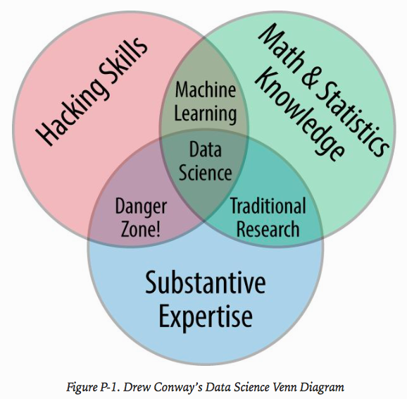
Data science comprises 3 distinct and overlapping areas:
- the skills of a statistician who knows how to model and summarize dataset.
- the skills of a computer scientist who can design and use algorithms to efficiently store, process, and visualize this data.
- the domain expertise (what we might think of as "classical" training in a subject): necessary both to formulate the right questions and to put their answers in context.
Think of data science as a new set of skills that you can apply within your current area of expertise.
the goal of this book is to give you the ability to ask and answer new questions about your chosen subject area.
Who Is This Book For?
This book is meant to help Python users learn to use Python’s data science stack — libraries such as IPython, NumPy, Pandas, Matplotlib, Scikit-Learn, and related tools — to effectively store, manipulate, and gain insight from data.
Why Python?
The usefulness of Python for data science stems primarily from the large and active ecosystem of third-party packages:
- NumPy for manipulation of homogeneous array-based data,
- Pandas for manipulation of heterogeneous and labeled data,
- SciPy for common scientific computing tasks,
- Matplotlib for publication-quality visualizations,
- IPython for interactive execution and sharing of code Scikit-Learn for machine learning, and
- many more tools that will be mentioned in the following pages.
“A Whirlwind Tour of the Python Language": This short report provides a tour of the essential features of the Python language, aimed at data scientists who already are familiar with one or more other programming languages.
Python 2 Versus Python 3
This book uses the syntax of Python 3.
Outline of This Book
- IPython and Jupyter (Chapter 1): computational environment in which many Python-using data scientists work.
- NumPy (Chapter 2): this lib provides the
ndarrayobject for efficient storage and manipulation of dense data arrays in Python. - Pandas (Chapter 3): this lib provides the
DataFrameobject for efficient storage and manipulation of labeled/columnar data in Python. - Matplotlib (Chapter 4): this lib provides capabilities for a flexible range of data visualizations in Python.
- Scikit-Learn (Chapter 5): this lib provides efficient and clean Python implementations of the most important and established machine learning algorithms.
-> The PyData world.
Using Code Examples
Supplemental material (code examples, figures, etc.) is available for download at https://github.com/jakevdp/PythonDataScienceHandbook.
Installation Considerations
the one I would suggest for use in data science is the Anaconda distribution, which works similarly whether you use Windows, Linux, or Mac OS X. The Anaconda distribution comes in two flavors:
- Miniconda: Miniconda gives you the Python interpreter itself, along with a command-line tool called
condathat operates as a cross-platform package manager geared toward Python packages, similar in spirit to the apt or yum tools that Linux users might be familiar with. - Anaconda includes both Python and conda, and additionally bundles a suite of other preinstalled packages geared toward scientific computing. Because of the size of this bundle, expect the installation to consume several gigabytes of disk space.
Any of the packages included with Anaconda can also be installed manually on top of Miniconda; for this reason I suggest starting with Miniconda.
To get started, download and install the Miniconda package (make sure to choose a version with Python 3), and then install the core packages used in this book:
conda install numpy pandas scikit-learn matplotlib seaborn ipython-notebook
[ME: should be conda install numpy pandas scikit-learn matplotlib seaborn jupyter ]
Throughout the text, we will also make use of other, more specialized tools in Python’s scientific ecosystem; installation is usually as easy as typing conda install packagename. For more information on conda, including information about creating and using conda environments (which I would highly recommend), refer to conda’s online documentation.
1. IPython: Beyond Normal Python
IPython plus a text editor
IPython is closely tied with the Jupyter project , which provides a browser-based notebook that is useful for development, collaboration, sharing, and even publication of data science results.
The IPython notebook is actually a special case of the broader Jupyter notebook structure, which encompasses notebooks for Julia, R, and other programming languages.
This chapter will start by stepping through some of the IPython features that are useful to the practice of data science, focusing especially on the syntax it offers beyond the standard features of Python.
Next, we will go into a bit more depth on some of the more useful “magic commands” that can speed up common tasks in creating and using data science code.
Finally, we will touch on some of the features of the notebook that make it useful in understanding data and sharing results.
Shell or Notebook?
“the IPython shell and the IPython notebook.”
Launching the IPython Shell
ipython
Launching the Jupyter Notebook
The Jupyter notebook is a browser-based graphical interface to the IPython shell.
As well as executing Python/IPython statements, the notebook allows the user to include formatted text, static and dynamic visualizations, mathematical equations, JavaScript widgets, and much more.
Though the IPython notebook is viewed and edited through your web browser window, it must connect to a running Python process in order to execute code. To start this process (known as a “kernel”), run the following command in your system shell:
jupyter notebook
[ME: use python locally on each of my laptops by using conda!]
Help and Documentation in IPython
most of the time it’s less a matter of knowing the answer as much as knowing how to quickly find an unknown answer. -> searchable web resources such as online documentation, mailing-list threads, and Stack Overflow answers contain a wealth of information.
Being an effective practitioner of data science is less about memorizing the tool or command you should use for every possible situation, and more about learning to effectively find the information you don’t know, whether through a web search engine or another means.
One of the most useful functions of IPython/Jupyter is to shorten the gap between the user and the type of documentation and search that will help them do their work effectively.
Some examples of the questions IPython can help answer in a few keystrokes:
- How do I call this function? What arguments and options does it have?
- What does the source code of this Python object look like?
- What is in this package I improved? What attribute or methods does this object have?
IPython's tools to quickly access this information:
- the
?to explore documentation, - the
??to explore source code, - the Tab key for autocompletion.
Accessing Documentation with ?
Every Python object contains the reference to a string, known as a docstring , which in most cases will contain a concise summary of the object and how to use it. Python has a built-in help() function that can access this information and print the results.
IPython introduces the ? character as a shorthand for accessing this documentation and other relevant information.
?len l = [1, 2, 3] l.insert? l?
Accessing Source Code with ??
sometimes the ?? suffix doesn’t display any source code: this is generally because the object in question is not implemented in Python, but in C or some other compiled extension language. In this case, the ?? suffix gives the same output as the ? suffix.
Exploring Modules with Tab Completion
Use the Tab key for autocompletion and exploration of the contents of objects, modules, and namespaces.
Tab completion of object contents
Every Python object has various attributes and methods associated with it. Like with the help function discussed before, Python has a built-in dir function that returns a list of these, but the tab-completion interface is much easier to use in practice. To see a list of all available attributes of an object, you can type the name of the object followed by a period (. ) character and the Tab key.
To narrow down the list, you can type the first character or several characters of the name, and the Tab key will find the matching attributes and methods.
If there is only a single option, pressing the Tab key will complete the line for you.
Though Python has no strictly enforced distinction between public/external attributes and private/internal attributes, by convention a preceding underscore is used to denote such methods. For clarity, these private methods and special methods are omitted from the list by default, but it’s possible to list them by explicitly typing the underscore.
Python’s special double-underscore methods (often nicknamed “dunder” methods).
Tab completion when importing
you can use tab completion to see which imports are available on your system (this will change depending on which third-party scripts and modules are visible to your Python session).
Beyond tab completion: Wildcard matching
Tab completion is useful if you know the first few characters of the object or attribute you’re looking for, but is little help if you’d like to match characters at the middle or end of the word. For this use case, IPython provides a means of wildcard matching for names using the * character.
Notice that the * character matches any string, including the empty string.
[ME: without TAB!]
Keyboard Shortcuts in the IPython Shell
These shortcuts are not in fact provided by IPython itself, but through its dependency on the GNU Readline library.
while some of these shortcuts do work in the browser-based notebook, this section is primarily about shortcuts in the IPython shell.
Navigation Shortcuts
- C-a: move cursor to the beginning of the line
- C-e: move cursor to the end of the line
- C-b: move cursor back one character
- C-f: move cursor forward one character
Text Entry Shortcuts
- Backspace: delete previous character in line
- C-d: delete next character in line
- C-k: cut text from cursor to end of line
- C-u: cut text from beginning of line to cursor
- C-y: yank (i.e., paste) text that was previously cut
- C-t: transpose (i.e., switch) previous two characters
Command History Shortcuts
This command history goes beyond your current IPython session: your entire command history is stored in a SQLite database in your IPython profile directory.
- C-p (or the up arrow key): access previous command in history
- C-n (or the down arrow key): access next command in history
- C-r: reverse-search through command history
[ME: only applicable in ipython terminal]
At any point, you can add more characters to refine the search, or press Ctrl-r again to search further for another command that matches the query. If you followed along in the previous section, pressing Ctrl-r twice more gives.
Once you have found the command you’re looking for, press Return and the search will end. We can then use the retrieved command, and carry on with our session.
Note that you can also use Ctrl-p/Ctrl-n or the up/down arrow keys to search through history, but only by matching characters at the beginning of the line. That is, if you type def and then press Ctrl-p, it would find the most recent command (if any) in your history that begins with the characters def.
Miscellaneous Shortcuts
- C-l: clear terminal screen
- C-c: interrupt current Python command
- C-d: exit IPython session
IPython Magic Commands
Here we’ll begin discussing some of the enhancements that IPython adds on top of the normal Python syntax. These are known in IPython as magic commands , and are prefixed by the % character.
These magic commands are designed to succinctly solve various common problems in standard data analysis.
Magic commands come in two flavors:
- line magics , which are denoted by a single % prefix and operate on a single line of input, and
- cell magics , which are denoted by a double %% prefix and operate on multiple lines of input.
Pasting Code Blocks: %paste and %cpaste
When you’re working in the IPython interpreter, one common gotcha is that pasting multiline code blocks can lead to unexpected errors, especially when indentation and interpreter markers are involved. A common case is that you find some example code on a website and want to paste it into your interpreter.
In the direct paste, the interpreter is confused by the additional prompt characters. But never fear — IPython’s %paste magic function is designed to handle this exact type of multiline.
A command with a similar intent is %cpaste , which opens up an interactive multiline prompt in which you can paste one or more chunks of code to be executed in a batch.
Running External Code: %run
As you begin developing more extensive code, you will likely find yourself working in both IPython for interactive exploration, as well as a text editor to store code that you want to reuse. Rather than running this code in a new window, it can be convenient to run it within your IPython session. This can be done with the %run magic.
%run myscript.py
Note also that after you’ve run this script, any functions defined within it are available for use in your IPython session.
There are several options to fine-tune how your code is run; you can see the documentation in the normal way, by typing %run? in the IPython interpreter.
Timing Code Execution: %timeit
Another example of a useful magic function is %timeit, which will automatically determine the execution time of the single-line Python statement that follows it.
The benefit of %timeit is that for short commands it will automatically perform multiple runs in order to attain more robust results. For multiline statements, adding a second % sign will turn this into a cell magic that can handle multiple lines of input.
Tip: We can immediately see that list comprehensions are about 10% faster than the equivalent for loop construction in this case. We’ll explore %timeit and other approaches to timing and profiling code in “Profiling and Timing Code”.
Help on Magic Functions:?, %magic, and %lsmagic
Like normal Python functions, IPython magic functions have docstrings, and this useful documentation can be accessed in the standard manner.
%timeit?
Documentation for other functions can be accessed similarly. To access a general description of available magic functions, including some examples:
%magic
For a quick and simple list of all available magic functions:
%lsmagic
Note: it is quite straightforward to define your own magic functions if you wish. We won’t discuss it here, but if you are interested, see the references listed in “More IPython Resources”.
Input and Output History
Additionally, in both the shell and the notebook, IPython exposes several ways to obtain the output of previous commands, as well as string versions of the commands themselves.
IPython'2 In and Out Objects
the In[ 1 ]: /Out[ 1 ]: style prompts give a clue as to how you can access previous inputs and outputs in your current session.
IPython actually creates some Python variables called In and Out that are automatically updated to reflect this history.
The In object is a list, which keeps track of the commands in order (the first item in the list is a placeholder so that In[ 1 ] can refer to the first command)
print(In[5])
The Out object is not a list but a dictionary mapping input numbers to their outputs (if any).
Type: dict
String form: {16: 2}
Length: 1
Note that not all operations have outputs: for example, import statements and print statements don’t affect the output. The latter may be surprising, but makes sense if you consider that print is a function that returns None ; for brevity, any command that returns None is not added to Out .
Where this can be useful is if you want to interact with past results.
2 + Out[3]
Tip: using these previous results probably is not necessary, but it can become very handy if you execute a very expensive computation and want to reuse the result!
Underscore Shortcuts and Previous Outputs
The standard Python shell contains just one simple shortcut for accessing previous output; the variable _ (i.e., a single underscore) is kept updated with the previous output; this works in IPython as well:
print(_)
But IPython takes this a bit further — you can use a double underscore to access the second-to-last output, and a triple underscore to access the third-to-last output (skipping any commands with no output).
print(__) print(___)
a shorthand for Out[X] is _X (i.e., a single underscore followed by the line number):”
print(_2)
Suppressing Output
Sometimes you might wish to suppress the output of a statement (this is perhaps most common with the plotting commands that we’ll explore in Chapter 4 ). Or maybe the command you’re executing produces a result that you’d prefer not to store in your output history, perhaps so that it can be deallocated when other references are removed. The easiest way to suppress the output of a command is to add a semicolon to the end of the line:
result = math.sin(3.14/4);
Note: that the result is computed silently, and the output is neither displayed on the screen or stored in the Out dictionary.
Related Magic Commands
For accessing a batch of previous inputs at once, the %history magic command is very helpful.
Print the first 4 inputs:
history -n 1-4
As usual, you can type %history? for more information and a description of options available. Other similar magic commands are %rerun (which will re-execute some portion of the command history) and %save (which saves some set of the command history to a file). For more information, I suggest exploring these using the ? help functionality discussed in “Help and Documentation in IPython”.
IPython and Shell Commands
anything appearing after ! on a line will be executed not by the Python kernel, but by the system command line.
The following assumes you’re on a Unix-like system, such as Linux or Mac OS X. Some of the examples that follow will fail on Windows, though with the 2016 announcement of native Bash shells on Windows, soon this may no longer be an issue!
Quick Introduction to the Shell
the shell offers much more control of advanced tasks.
Shell Commands in IPython
!ls myproject
Passing Values to and from the Shell
Shell commands can not only be called from IPython, but can also be made to interact with the IPython namespace.
For example, you can save the output of any shell command to a Python list using the assignment operator:
contents = !ls ../ print(contents)
Note that these results are not returned as lists, but as a special shell return type defined in IPython: SList
This looks and acts a lot like a Python list, but has additional functionality, such as the grep and fields methods and the s , n , and p properties that allow you to search, filter, and display the results in convenient ways.
Communication in the other direction — passing Python variables into the shell — is possible through the {varname} syntax:
message = 'hello from python' !echo {message}
Shell-Related Magic Commands
you cannot use !cd to navigate the filesystem. The reason is that shell commands in the notebook are executed in a temporary subshell.
If you’d like to change the working directory in a more enduring way, you can use the %cd magic command.
This is known as an automagic function, and this behavior can be toggled with the %automagic magic function (any of these commands can be used without the % sign if automagic is on -> this makes it so that you can almost treat the IPython prompts as if it's a normal shell!):
- %cd
- %cat
- %cp
- %env
- %ls
- %man
- %mkdir
- %more
- %mv
- %pwd
- %rm
- %rmdir
This access to the shell from within the same terminal window as your Python session means that there is a lot less switching back and forth between interpreter and shell as you write your Python code.
Errors And Debugging
Code development and data analysis always require a bit of trial and error, and IPython contains tools to streamline this process. This section will briefly cover some options for controlling Python’s exception reporting, followed by exploring tools for debugging errors in code.
Controlling Exceptions: %xmode
Most of the time when a Python script fails, it will raise an exception. When the interpreter hits one of these exceptions, information about the cause of the error can be found in the traceback , which can be accessed from within Python. With the %xmode magic function, IPython allows you to control the amount of information printed when the exception is raised.
By default, this trace includes several lines showing the context of each step that led to the error. Using the %xmode magic function (short for exception mode ), we can change what information is printed.
%xmode takes a single argument, the mode, and there are three possibilities: Plain , Context , and Verbose . The default is Context. Plain is more compact and gives less information.
%xmode Plain
The Verbose mode adds some extra information, including the arguments to any functions that are called.
This extra information can help you narrow in on why the exception is being raised. So why not use the Verbose mode all the time? As code gets complicated, this kind of traceback can get extremely long. Depending on the context, sometimes the brevity of Default (Context) mode is easier to work with.
Debugging: When Reading Tracebacks Is Not Enough
The standard Python debugger: pdb. The IPython-enhanced version of this is ipdb, the IPython debugger.
“In IPython, perhaps the most convenient interface to debugging is the %debug magic command. If you call it after hitting an exception, it will automatically open an interactive debugging prompt at the point of the exception. The ipdb prompt lets you explore the current state of the stack, explore the available variables, and even run Python commands.
If you’d like the debugger to launch automatically whenever an exception is raised, you can use the %pdb magic function to turn on this automatic behavior.
%pdb on %pdb?
Finally, if you have a script that you’d like to run from the beginning in interactive mode, you can run it with the command %run -d, and use the next command to step through the lines of code interactively.
Partial list of debugging commands
| Command | Description |
|---|---|
| list | show the current location in the file |
| h(elp) | show a list of commands, or find help on a specific command |
| q(uit) | quit the debugger and the program |
| c(ontinue) | quit the debugger, continue in the program |
| n(ext) | go to the next step of the program |
| <enter> | repeat the previous command |
| p(rint) | print variables |
| s(tep) | step into a subroutine |
| r(eturn) | return out of a subroutine |
For more information, use the help command in the debugger, or take a look at ipdb ’s online documentation.
Profiling and Timing Code
In the process of developing code and creating data processing pipelines, there are often trade-offs you can make between various implementations. Early in developing your algorithm, it can be counterproductive to worry about such things. As Donald Knuth famously quipped, “We should forget about small efficiencies, say about 97% of the time: premature optimization is the root of all evil."
But once you have your code working, it can be useful to dig into its efficiency a bit. Sometimes it’s useful to check the execution time of a given command or set of commands; other times it’s useful to dig into a multiline process and determine where the bottleneck lies in some complicated series of operations. IPython provides access to a wide array of functionality for this kind of timing and profiling of code. Here we’ll discuss the following IPython magic commands:
- %time: time the execution of a single statement.
- %timeit: time repeated execution of a single statement for more accuracy
- %prun: run code with the profiler.
- %lprun: run code with the line-by-line profiler
- %memit: measure the memory use of a single statement
- %mprun: run code with theh line-by-line memory profiler.
Note: The last four commands are not bundled with IPython — you’ll need to install the lineprofiler and memoryprofiler extensions, which we will discuss in the following sections.
Timing Code Snippets: %timeit and %time
[ME: %%: refer to IPython Magic Commands.]
%%timeit can be used to time the repeated execution of snippets of code.
Note that because this operation is so fast, %timeit automatically does a large number of repetitions. For slower commands, %timeit will automatically adjust and perform fewer repetitions.
Sometimes repeating an operation is not the best option. For example, if we have a list that we’d like to sort, we might be misled by a repeated operation. Sorting a pre-sorted list is much faster than sorting an unsorted list, so the repetition will skew the result.
For this, the %time magic function may be a better choice. It also is a good choice for longer-running commands, when short, system-related delays are unlikely to affect the result.
Let’s time the sorting of an unsorted and a presorted list:
import random L = [random.random() for i in range(100000)] %time L.sort() %time.L.sort()
Output:
CPU times: user 60 ms, sys: 2.42 ms, total: 62.4 ms Wall time: 65.1 ms CPU times: user 7.2 ms, sys: 180 µs, total: 7.38 ms Wall time: 7.75 ms
Notice also how much longer the timing takes with %time versus %timeit , even for the presorted list! This is a result of the fact that %timeit does some clever things under the hood to prevent system calls from interfering with the timing. For example, it prevents cleanup of unused Python objects (known as garbage collection ) that might otherwise affect the timing. For this reason, %timeit results are usually noticeably faster than %time results.
For more information on %time and %timeit , as well as their available options, use the IPython help functionality (i.e., type %time? at the IPython prompt).
Profiling Full Scripts: %prun
A program is made of many single statements, and sometimes timing these statements in context is more important than timing them on their own. Python contains a built-in code profiler (which you can read about in the Python documentation), but IPython offers a much more convenient way to use this profiler, in the form of the magic function %prun.
%prun sum_of_lists(1000000)
The result is a table that indicates, in order of total time on each function call, where the execution is spending the most time. From here, we could start thinking about what changes we might make to improve the performance in the algorithm.
For more information on %prun , as well as its available options, use the IPython help functionality (i.e., type %prun? at the IPython prompt).
Line-by-Line Profiling with %lprun
The function-by-function profiling of %prun is useful, but sometimes it’s more convenient to have a line-by-line profile report. This is not built into Python or IPython, but there is a lineprofiler package available for installation that can do this.
Use IPython to load the lineprofiler IPython extension, offered as part of this package:
%load_ext line_profiler
Now the %lprun command will do a line-by-line profiling of any function.
%lprun -f sum_of_lists sum_of_lists(5000)
For more information on %lprun , as well as its available options, use the IPython help functionality (i.e., type %lprun? at the IPython prompt).
Profiling Memory Use: %memit and %mprun
Another aspect of profiling is the amount of memory an operation uses. This can be evaluated with another IPython extension, the memoryprofiler .
Install it using conda and load the extension:
%load_ext memory_profiler
%memit (analogy to %timeit) and %mprun (analogy to %lprun)
For a line-by-line description of memory use, we can use the %mprun magic. Unfortunately, this magic works only for functions defined in separate modules rather than the notebook itself, so we’ll start by using the %%file magic to create a simple module called mprundemo.py , which contains our sumoflists function, with one addition that will make our memory profiling results more clear.
%%file mprun_demo.py def sum_of_lists(N): total = 0 for i in range(5): L = [j ^ (j >> i) for j in range(N)] total += sum(L) del L return total
C-<enter> to run and save.
Then:
from mprun_demo import sum_of_lists %mprun -f sum_of_lists sum_of_lists(1000000)
Output:
Filename: /Users/fengyz/notebooks/book-python-data-science-handbook/mprun_demo.py
Line # Mem usage Increment Line Contents
================================================
1 37.6 MiB 0.0 MiB def sum_of_lists(N):
2 37.6 MiB 0.0 MiB total = 0
3 38.3 MiB 0.7 MiB for i in range(5):
4 57.4 MiB 19.1 MiB L = [j ^ (j >> i) for j in range(N)]
5 50.5 MiB -6.9 MiB total += sum(L)
6 38.3 MiB -12.2 MiB del L
7 10.0 MiB -28.3 MiB return total
For more information on %memit and %mprun , as well as their available options, use the IPython help functionality (i.e., type %memit? at the IPython prompt).
More IPython Resources
Web Resources
- The IPython websiste: documentation, examples, tutorials, and a variety of other resources
- The nbviewer website: This site shows static renderings of any IPython notebook available on the Internet. The front page features some example notebooks that you can browse to see what other folks are using IPython for!
- A Gallery of Interesting IPython Notebooks: This ever-growing list of notebooks, powered by nbviewer, shows the depth and breadth of numerical analysis you can do with IPython. It includes everything from short examples and tutorials to full-blown courses and books composed in the notebook format!
- Video tutorials: Searching the Internet, you will find many video-recorded tutorials on IPython. I’d especially recommend seeking tutorials from the PyCon, SciPy, and PyData conferences by Fernando Perez and Brian Granger, two of the primary creators and maintainers of IPython and Jupyter.
Books
- Python for Data Analysis: [ME: already have it!] Wes McKinney’s book includes a chapter that covers using IPython as a data scientist. Although much of the material overlaps what we’ve discussed here, another perspective is always helpful.
- Learning IPython for INteractive Computing and Data Visualization: This short book by Cyrille Rossant offers a good introduction to using IPython for data analysis.
- IPython Interactive Computing and Visualization Cookbook: Also by Cyrille Rossant, this book is a longer and more advanced treatment of using IPython for data science. Despite its name, it’s not just about IPython — it also goes into some depth on a broad range of data science topics.
- IPython's ?-based help functionality (discussed in "Help and Documentation in IPython")
2. Introduction to NumPy
This chapter, along with Chapter 3 , outlines techniques for effectively loading, storing, and manipulating in-memory data in Python.
Datasets can be collections of documents, collections of images, collections of sound clips, collections of numerical measurements, or nearly anything else. -> Heterogeneity! -> Think of all data fundamentally as arrays of numbers ->
- Images: two-dimensional arrays of numbers representing pixel brightness across the area
- Sould clips: one-dimensional arrays of intensity versus time.
- Text: can be converted in various ways into numerical representations, perhaps binary digits representing the frequency of certain words or pairs of words.
No matter what the data are, the first step in making them analyzable will be to transform them into arrays of numbers. -> Later in "Feature Engineering"
For this reason, efficient storage and manipulation of numerical arrays is absolutely fundamental to the process of doing data science. -> NumPy package and Pandas package.
NumPy (short for Numerical Python ) provides an efficient interface to store and operate on dense data buffers.
NumPy arrays form the core of nearly the entire ecosystem of data science tools in Python.
Test NumPy installation:
import numpy
numpy.__version__
Output:
'1.12.0'
By convention, you’ll find that most people in the SciPy/PyData world will import NumPy using np as an alias.
import numpy as np
Tip: quickly explore the contents of a package (by using the tab-completion feature) as well as the documentation of various functions (using the ? character). More detailed documentation, along with tutorials and other resources, can be found at http://www.numpy.org.
Understanding Data Types in Python
how data is stored and manipulated.
This section outlines and contrasts how arrays of data are handled in the Python language itself, and how NumPy improves on this. -> fundamental to understanding much of the material throughout the rest of the book.
In Python the types are dynamically inferred. This means, for example, that we can assign any kind of data to any variable.
Understanding how this works is an important piece of learning to analyze data efficiently and effectively with Python. what this type flexibility also points to is the fact that Python variables are more than just their value; they also contain extra information about the type of the value.
A Python Integer Is More Than Just an Integer
The standard Python implementation is written in C. This means that every Python object is simply a cleverly disguised C structure, which contains not only its value, but other information as well.
A single integer in Python 3.4 actually contains four pieces:
- obrefcnt , a reference count that helps Python silently handle memory allocation and deallocation
- obtype , which encodes the type of the variable
- obsize , which specifies the size of the following data members
- obdigit , which contains the actual integer value that we expect the Python variable to represent
This means that there is some overhead in storing an integer in Python as compared to an integer in a compiled language like C. -> All this additional information in Python types comes at a cost, however, which becomes especially apparent in structures that combine many of these objects.
A Python List Is More Than Just a List
The standard mutable multielement container in Python is the list.
L = list(rang(10)) # [0, 1, 2, ..., 9]
Because of Python’s dynamic typing, we can even create heterogeneous lists.
But this flexibility comes at a cost: to allow these flexible types, each item in the list must contain its own type info, reference count, and other information — that is, each item is a complete Python object. In the special case that all variables are of the same type, much of this information is redundant: it can be much more efficient to store data in a fixed-type array. The difference between a dynamic-type list and a fixed-type (NumPy-style) array is illustrated in Figure 2-2.
Figure 2-2. The difference between C and Python lists
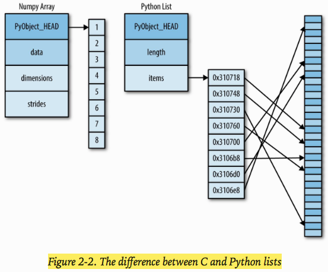
At the implementation level, the array essentially contains a single pointer to one contiguous block of data. The Python list, on the other hand, contains a pointer to a block of pointers, each of which in turn points to a full Python object. Fixed-type NumPy-style arrays lack this flexibility, but are much more efficient for storing and manipulating data.
Fixed-Type Arrays in Python
Python offers several different options for storing data in efficient, fixed-type data buffers. The built-in array module (available since Python 3.3) can be used to create dense arrays of a uniform type:
import array L = list(range(10)) A = array.array('i', L) # array('i', [0, 1, 2, 3, 4, 5, 6, 7, 8, 9])
While Python’s array object provides efficient storage of array-based data, NumPy (ndarray) adds to this efficient operations on that data.
Creating Arrays from Python Lists
np.array([1, 4, 2, 5, 3]) # array([1, 4, 2, 5, 3])
Note: NumPy is constrained to arrays that all contain the same type. If types do not match, NumPy will upcast if possible.
If we want to explicitly set the data type of the resulting array, we can use the dtype keyword:
np.array([1, 4, 2, 5, 3], dtype = 'float32') # array([ 1., 4., 2., 5., 3.], dtype=float32)
Finally, unlike Python lists, NumPy arrays can explicitly be multidimensional; here’s one way of initializing a multidimensional array using a list of lists:
# nested lists result in multidimensional arrays np.array([range(i, i + 3) for i in [2, 4, 6]])
Output:
array([[2, 3, 4],
[4, 5, 6],
[6, 7, 8]])
The inner lists are treated as rows of the resulting two-dimensional array.
Creating Arrays from Scratch
Especially for larger arrays, it is more efficient to create arrays from scratch using routines built into NumPy.
Examples:
# create a length-10 integer array filled with zeros np.zeros(10, dtype=int) # >> array([0, 0, 0, 0, 0, 0, 0, 0, 0, 0]) # Create a 3x5 floating-point array filled with 1s np.ones((3, 5), dtype=float) # >> # array([[ 1., 1., 1., 1., 1.], # [ 1., 1., 1., 1., 1.], # [ 1., 1., 1., 1., 1.]]) # Create a 3x5 array filled with 3.14 np.full((3, 5), 3.14) # >> # array([[ 3.14, 3.14, 3.14, 3.14, 3.14], # [ 3.14, 3.14, 3.14, 3.14, 3.14], # [ 3.14, 3.14, 3.14, 3.14, 3.14]]) # Create an array filled with a linear sequence # Starting at 0, ending at 20, stepping by 2 # (this is similiar to the built-in range() function) np.arange(0, 20, 2) # >> array([ 0, 2, 4, 6, 8, 10, 12, 14, 16, 18]) # Create an array of five vlues evenly spaced between 0 and 1 np.linspace(0, 1, 5)8]) # >> array([ 0. , 0.25, 0.5 , 0.75, 1. ]) # Create a 3x3 array of uniformly distributed # random values between 0 and 1 np.random.random((3, 3)) # >> # array([[ 0.49525619, 0.95951621, 0.35703696], # [ 0.72319425, 0.50290134, 0.26420937], # [ 0.45262657, 0.9538811 , 0.7907035 ]]) # Create a 3x3 array of normally distributed random values # with mean 0 and standard deviation 1 np.random.normal(0, 1, (3, 3)) # Out[30]: # array([[ 1.18900988, -1.3132834 , 0.36864298], # [ 0.37574408, 0.66268591, -0.38549299], # [ 2.40909092, -1.3688613 , -1.1026897 ]]) # Create a 3x3 array of random integers in the interval [0, 10] np.random.randint(0, 10, (3, 3)) # >> # array([[7, 2, 5], # [8, 7, 1], # [0, 4, 5]]) # Create a 3x3 identity matrix np.eye(3) # Out[32]: # array([[ 1., 0., 0.], # [ 0., 1., 0.], # [ 0., 0., 1.]]) # Create an uninitialized array of three integers # The values will be whatever happens to be already exist at that # memory location. np.empty(3) # >> array([ 1., 1., 1.])
NumPy Standard Data Types
Because NumPy is built in C, the types will be familiar to users of C, Fortran, and other related languages.
The standard NumPy data types are listed in Table 2-1 . Note that when constructing an array, you can specify them using a string or using the associated NumPy object:
np.zeros(10, dtype='int16')
np.zeros(10, dtype=np.int16)
Table 2-1. Standard NumPy data types
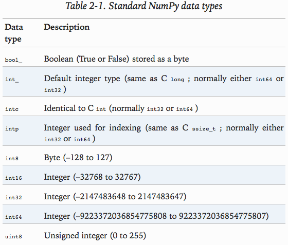
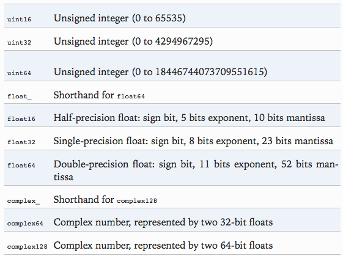
[ME: What is the "dtype=int" in the previous examples?]
More advanced type specification is possible, such as specifying big or little endian numbers; for more information, refer to the NumPy documentation. NumPy also supports compound data types, which will be covered in “Structured Data: NumPy’s Structured Arrays”.
The Basics of NumPy Arrays
Data manipulation in Python is nearly synonymous with NumPy array manipulation.
This section will present several examples using NumPy array manipulation to access data and subarrays, and to split, reshape, and join the arrays. They comprise the building blocks of many other examples used throughout the book. Get to know them well!
Basic array manipulations:
- Attributes of arrays: determine the size, shape, memory consumption, and data types of arrays.
- Indexing of arrays: getting and setting the value of individual array elements.
- Slicing of arrays: getting and setting smaller subarrays within a larger array.
- Reshaping of arrays: changing the shape of a given array.
- Joining and splitting of arrays: combining multiple arrays into one, and splitting one array into many.
NumPy Array Attributes
We’ll start by defining three random arrays: a one-dimensional, two-dimensional, and three-dimensional array. We’ll use NumPy’s random number generator, which we will seed with a set value in order to ensure that the same random arrays are generated each time this code is run:
import numpy as np # seed for reproducibility np.random.seed(0) # One-dimensional array x1 = np.random.randint(10, size=6) # Two-dimensional array x2 = np.random.randint(10, size=(3, 4)) # Three-dimensional array x3 = np.random.randint(10, size=(3, 4, 5))
Attributes: ndim, shape, size:
# attributes: # ndim (the number of dimensions) # shape (the size of each dimension) # size (the total size of the array) print("x3 ndim: ", x3.ndim) print("x3 shape: ", x3.shape) print("x3 size: ", x3.size) # >> # x3 ndim: 3 # x3 shape: (3, 4, 5) # x3 size: 60
Another useful attribute is the dtype (the data type of the array):
print("dtype: ", x3.dtype) # >> dtype: int64
Other attributes include itemsize , which lists the size (in bytes) of each array element, and nbytes , which lists the total size (in bytes) of the array:
print("itemsize: ", x3.itemsize, " items") print("nbytes: ", x3.nbytes, " bytes") # >> # itemsize: 8 items # nbytes: 480 bytes
In general, we expect that nbytes is equal to itemsize times size.
Array Indexing: Accessing Single Elements
One-dimensional NumPy array can be indexed like Python's standard list indexing:
x1[4] x1[-1] # the end of the array
In a multidimensional array, you access items using a comma-separated tuple of indices:
# x2 # array([[3, 5, 2, 4], # [7, 6, 8, 8], # [1, 6, 7, 7]]) x2[0, 0] # 3 x2[0, -1] # 4 x2[-1, -1] # 7
You can also modify values using any of the above index notation:
x2[0, 0] = 12 # x2 # array([[12, 5, 2, 4], # [ 7, 6, 8, 8], # [ 1, 6, 7, 7]])
Note: Keep in mind that, unlike Python lists, NumPy arrays have a fixed type. This means, for example, that if you attempt to insert a floating-point value to an integer array, the value will be silently truncated. Don’t be caught unaware by this behavior!
Array Slicing: Accessing Subarrays
The NumPy slicing syntax follows that of the standard Python list.
To access a slice of an array x:
x[start : stop : step]
If any of these are unspecified, they default to the values "start=0 , stop=size of dimension , step=1".
One-dimensional subarrays
x = np.arange(10) # >> array([0, 1, 2, 3, 4, 5, 6, 7, 8, 9]) # first five elements x[:5] # elements after index 5 x[5:] # middle subarray x[4:7] # >> array([4, 5, 6]) # every other element x[::2] # >> array([0, 2, 4, 6, 8]) # every other element, starting at index 1 x[1::2] # >> array([1, 3, 5, 7, 9])
A potentially confusing case is when the step value is negative. In this case, the defaults for start and stop are swapped. This becomes a convenient way to reverse an array:
# all elements, reversed x[::-1] # >> array([9, 8, 7, 6, 5, 4, 3, 2, 1, 0]) # reversed every other from index 5 x[5::-2] # >> array([5, 3, 1]), equivalent to x[5:0:-2]
Multidimensional subarrays
multiple slices separated by commas. For example:
# x2 # array([[3, 5, 2, 4], # [7, 6, 8, 8], # [1, 6, 7, 7]]) # two rows, three columns x2[:2, :3] # >> # array([[3, 5, 2], # [7, 6, 8]]) # all rows, every other column x2[:, ::2] # >> # array([[3, 2], # [7, 8], # [1, 7]])
Finally, subarray dimensions can even be reversed together:
x2[::-1, ::-1] # >> # array([[7, 7, 6, 1], # [8, 8, 6, 7], # [4, 2, 5, 3]])
Accessing array rows and columns
One commonly needed routine is accessing single rows or columns of an array. You can do this by combining indexing and slicing, using an empty slice marked by a single colon (: ):
# first column of x2 x2[:, 0] # >> array([3, 7, 1]) # first row of x2 x2[0, :] # >> array([3, 5, 2, 4])
In the case of row access, the empty slice can be omitted for a more compact syntax:
x2[0] # >> array([3, 5, 2, 4])
Subarrays as no-copy views
One important — and extremely useful — thing to know about array slices is that they return views rather than copies of the array data. This is one area in which NumPy array slicing differs from Python list slicing: in lists, slices will be copies.
Example: first extract a 2x2 subarray from x2:
x2_sub = x2[:2, :2] # >> # array([[3, 5], # [7, 6]])
Now if we modify this subarray, we’ll see that the original array is changed! Observe:
x2_sub[0, 0] = 99 x2 # >> # array([[99, 5, 2, 4], # [ 7, 6, 8, 8], # [ 1, 6, 7, 7]])
This default behavior is actually quite useful: it means that when we work with large datasets, we can access and process pieces of these datasets without the need to copy the underlying data buffer.
Creating copies of arrays
Despite the nice features of array views, it is sometimes useful to instead explicitly copy the data within an array or a subarray. This can be most easily done with the copy() method:
x2_sub_copy = x2[:2, :2].copy() x2_sub_copy[0, 0] = 42 x2 # >> # array([[99, 5, 2, 4], # [ 7, 6, 8, 8], # [ 1, 6, 7, 7]])
Reshaping of Arrays
with the reshape() method. For example, if you want to put the numbers 1 through 9 in a 3×3 grid, you can do the following:
grid = np.arange(1, 10) print(grid) grid = grid.reshape((3, 3)) print(grid) # >> # [1 2 3 4 5 6 7 8 9] # [[1 2 3] # [4 5 6] # [7 8 9]]
Note that for this to work, the size of the initial array must match the size of the reshaped array. Where possible, the reshape method will use a no-copy view of the initial array, but with noncontiguous memory buffers this is not always the case.
Another common reshaping pattern is the conversion of a one-dimensional array into a two-dimensional row or column matrix. You can do this with the reshape method, or more easily by making use of the newaxis keyword within a slice operation:
x = np.array([1, 2, 3]) # row vector via reshape x.reshape((1, 3)) # >> array([[1, 2, 3]]) # row vector via newaxis x[np.newaxis, :] # >> array([[1, 2, 3]]) # column vector via reshape x.reshape((3, 1)) # >> # array([[1], # [2], # [3]]) # columnn vector via newaxis x[:, np.newaxis] # >> # array([[1], # [2], # [3]])
We will see this type of transformation often throughout the remainder of the book.
Array Concatenation and Splitting
It’s also possible to combine multiple arrays into one, and to conversely split a single array into multiple arrays.
Concatenation of arrays
Concatenation (joining) of two arrays in NumPy, is primarily accomplished through the routines np.concatenate, np.vstack, and np.hstack.
x = np.array([1, 2, 3]) y = np.array([3, 2, 1]) z = np.array([99, 99, 99]) print(np.concatenate([x, y])) print(np.concatenate([x, y, z])) # >> # [1 2 3 3 2 1] # [ 1 2 3 3 2 1 99 99 99]
np.concatenate can also be used for two-dimensional arrays:
grid = np.array([[1, 2, 3], [4, 5, 6]]) # concatenate along the first axis np.concatenate([grid, grid]) # >> # array([[1, 2, 3], # [4, 5, 6], # [1, 2, 3], # [4, 5, 6]]) # concatenate along the second axis (zero-indexed) np.concatenate([grid, grid], axis=1) # >> # array([[1, 2, 3, 1, 2, 3], # [4, 5, 6, 4, 5, 6]])
For working with arrays of mixed dimensions, it can be clearer to use the np.vstack (vertical stack) and np.hstack (horizontal stack) functions:
rray([1, 2, 3]) grid = np.array([[9, 8, 7], [6, 5, 4]]) # vertically stack the arrays np.vstack([x, grid]) # >> # array([[1, 2, 3], # [9, 8, 7], # [6, 5, 4]]) # horizontally stack the arrays y = np.array([[99], [99]]) np.hstack([y, grid]) # >> # array([[99, 9, 8, 7], # [99, 6, 5, 4]])
Similarly, np.dstack will stack arrays along the third axis. [ME: Stack arrays in sequence horizontally (column wise). Refer to "np.dstack?"]
Splitting of arrays
implemented by the functions np.split , np.hsplit , and np.vsplit. For each of these, we can pass a list of indices giving the split points:
x = [1, 2, 3, 99, 99, 3, 2, 1] x1, x2, x3 = np.split(x, [3, 5]) print(x1, x2, x3) # >> [1 2 3] [99 99] [3 2 1]
Notice that N split points lead to N + 1 subarrays.
The related functions np.hsplit and np.vsplit are similar:
grid = np.arange(16).reshape((4, 4)) print(grid) # >> # [[ 0 1 2 3] # [ 4 5 6 7] # [ 8 9 10 11] # [12 13 14 15]] upper, lower = np.vsplit(grid, [2]) print(upper, "\n") print(lower) # >> # [[0 1 2 3] # [4 5 6 7]] # # [[ 8 9 10 11] # [12 13 14 15]] left, right = np.hsplit(grid, [2]) print(left, "\n") print(right) # >> # [[ 0 1] # [ 4 5] # [ 8 9] # [12 13]] # # [[ 2 3] # [ 6 7] # [10 11] # [14 15]]
Similarly, np.dsplit will split arrays along the third axis.
Computation on NumPy Arrays: Universal Functions
in the next few sections, we will dive into the reasons that NumPy is so important in the Python data science world. Namely, it provides an easy and flexible interface to optimized computation with arrays of data.
Computation on NumPy arrays can be very fast, or it can be very slow. The key to making it fast is to use vectorized operations, generally implemented through NumPy’s universal functions (ufuncs).
This section motivates the need for NumPy’s ufuncs, which can be used to make repeated calculations on array elements much more efficient. It then introduces many of the most common and useful arithmetic ufuncs available in the NumPy package.
The Slowness of Loops
Python’s default implementation (known as CPython) does some operations very slowly. This is in part due to the dynamic, interpreted nature of the language: the fact that types are flexible, so that sequences of operations cannot be compiled down to efficient machine code as in languages like C and Fortran.
Recently there have been various attempts to address this weakness:
- well-known examples are the PyPy project, a just-in-time compiled implementation of Python;
- the Cython project, which converts Python code to compilable C code; and
- the Numba project, which converts snippets of Python code to fast LLVM bytecode.
Each of these has its strengths and weaknesses, but it is safe to say that none of the three approaches has yet surpassed the reach and popularity of the standard CPython engine.
The relative sluggishness of Python generally manifests itself in situations where many small operations are being repeated — for instance, looping over arrays to operate on each element.
It turns out that the bottleneck here is not the operations themselves, but the type-checking and function dispatches that CPython must do at each cycle of the loop. Each time the reciprocal is computed, Python first examines the object’s type and does a dynamic lookup of the correct function to use for that type. If we were working in compiled code instead, this type specification would be known before the code executes and the result could be computed much more efficiently.
Introducing UFuncs
For many types of operations, NumPy provides a convenient interface into just this kind of statically typed, compiled routine. This is known as a vectorized operation. You can accomplish this by simply performing an operation on the array, which will then be applied to each element. This vectorized approach is designed to push the loop into the compiled layer that underlies NumPy, leading to much faster execution.
print(1.0 / values) # values is an array
it completes orders of magnitude faster than the Python loop.
Vectorized operations in NumPy are implemented via ufuncs , whose main purpose is to quickly execute repeated operations on values in NumPy arrays. Ufuncs are extremely flexible:
before we saw an operation between a scalar and an array, but we can also operate between two arrays:
np.arange(5) / np.arange(1, 6) # >> array([ 0. , 0.5 , 0.66666667, 0.75 , 0.8 ]) # applied for multidimensional arrays x = np.arange(9).reshape((3, 3)) 2 ** x # >> # array([[ 1, 2, 4], # [ 8, 16, 32], # [ 64, 128, 256]])
Computations using vectorization through ufuncs are nearly always more efficient than their counterpart implemented through Python loops, especially as the arrays grow in size. Any time you see such a loop in a Python script, you should consider whether it can be replaced with a vectorized expression.
Exploring NumPy's UFuncs
Ufuncs exist in two flavors:
- unary ufuncs, which operate on a single input, and
- binary ufuncs, which operate on two inputs.
Array arithmetic
NumPy’s ufuncs feel very natural to use because they make use of Python’s native arithmetic operators. The standard addition, subtraction, multiplication, and division can all be used.
There is also a unary ufunc for
- negation (e.g. "-x"),
- a ** operator for exponentiation, and
- a % operator for modulus.
In addition, these can be strung together however you wish, and the standard order of operations is respected.
All of these arithmetic operations are simply convenient wrappers around specific functions built into NumPy; for example, the + operator is a wrapper for the add function.
Table 2-2 lists the arithmetic operators implemented in NumPy.
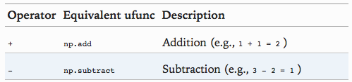
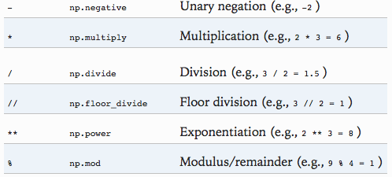
Additionally there are Boolean/bitwise operators; we will explore these in “Comparisons, Masks, and Boolean Logic”.
Absolute value
Just as NumPy understands Python’s built-in arithmetic operators, it also understands Python’s built-in absolute value function (np.absolute, alias np.abs):
x = np.array([-2, -1, 0, 1, 2]) abs(x) # >> array([2, 1, 0, 1, 2])
This ufunc can also handle complex data, in which the absolute value returns the magnitude:
x = np.array([3 - 4j, 4 - 3j, 2 + 0j, 0 + 1j]) abs(x) # >> array([ 5., 5., 2., 1.])
Trigonometric functions
We’ll start by defining an array of angles:
theta = np.linspace(0, np.pi, 3) # >> array([ 0. , 1.57079633, 3.14159265])
Now we can compute some trigonometric functions on these values:
np.sin(theta) # >> array([ 0.00000000e+00, 1.00000000e+00, 1.22464680e-16]) np.tan(theta) # >> array([ 0.00000000e+00, 1.63312394e+16, -1.22464680e-16])
Tip: The values are computed to within machine precision, which is why values that should be zero do not always hit exactly zero.
Inverse trigonometric functions are also available: np.arcsin, np.arctan, etc.
Exponents and logarithms: np.exp, np.exp2 (2x), np.power (xy), np.log, np.log2, np.log10.
There are also some specialized versions that are useful for maintaining precision with very small input, When x is very small, these functions give more precise values than if the raw np.log or np.exp were used:
x = [0, 0.001, 0.01, 0.1] np.expm1(x) # >> array([ 0. , 0.0010005 , 0.01005017, 0.10517092]) np.log1p(x) # >> array([ 0. , 0.0009995 , 0.00995033, 0.09531018])
Specialized ufuncs
NumPy has many more ufuncs available, including hyperbolic trig functions, bitwise arithmetic, comparison operators, conversions from radians to degrees, rounding and remainders, and much more. A look through the NumPy documentation reveals a lot of interesting functionality.
Another excellent source for more specialized and obscure ufuncs is the submodule scipy.special. If you want to compute some obscure mathematical function on your data, chances are it is implemented in scipy.special . There are far too many functions to list them all, but the following snippet shows a couple that might come up in a statistics context:
from scipy import special # Gamma functions (generalized factorials) and related functions x = [1, 5, 10] special.gamma(x) # >> array([ 1.00000000e+00, 2.40000000e+01, 3.62880000e+05]) special.gammaln(x) # >> array([ 0. , 3.17805383, 12.80182748]) special.beta(x, 2) # >> array([ 0.5 , 0.03333333, 0.00909091]) # Error function (integral of Gaussian) # its complement, and its inverse x = np.array([0, 0.3, 0.7, 1.0]) special.erf(x) # >> array([ 0. , 0.32862676, 0.67780119, 0.84270079]) special.erfc(x) # >> array([ 1. , 0.67137324, 0.32219881, 0.15729921]) special.erfinv(x) # >> array([ 0. , 0.27246271, 0.73286908, inf])
There are many, many more ufuncs available in both NumPy and scipy.special . Because the documentation of these packages is available online, a web search along the lines of “gamma function python” will generally find the relevant information.
Advanced Ufunc Features
Many NumPy users make use of ufuncs without ever learning their full set of features. We’ll outline a few specialized features of ufuncs here.
Specifying output
For large calculations, it is sometimes useful to be able to specify the array where the result of the calculation will be stored. Rather than creating a temporary array, you can use this to write computation results directly to the memory location where you’d like them to be. For all ufuncs, you can do this using the out argument of the function :
x = np.arange(5) y = np.empty(5) np.multiply(x, 10, out=y) y # >> array([ 0., 10., 20., 30., 40.])
This can even be used with array views. For example, we can write the results of a computation to every other element of a specified array:
y = np.zeros(10) np.power(2, x, out=y[::2]) y # >> array([ 1., 0., 2., 0., 4., 0., 8., 0., 16., 0.])
Note: If we had instead written "y[::2] = 2 * x", this would have resulted in the creation of a temporary array to hold the results of 2 * x , followed by a second operation copying those values into the y array. This doesn’t make much of a difference for such a small computation, but for very large arrays the memory savings from careful use of the out argument can be significant.
Aggregates
For binary ufuncs, there are some interesting aggregates that can be computed directly from the object. For example, if we’d like to reduce an array with a particular operation, we can use the reduce method of any ufunc.
Tip: A reduce repeatedly applies a given operation to the elements of an array until only a single result remains. [ME: map & reduce?]
For example, calling reduce on the add ufunc returns the sum of all elements in the array:
x = np.arange(1, 6) np.add.reduce(x) # >> 15 np.multiply.reduce(x) # >> 120
If we’d like to store all the intermediate results of the computation, we can instead use accumulate:
np.add.accumulate(x) # >> array([ 1, 3, 6, 10, 15]) np.multiply.accumulate(x) # >> array([ 1, 2, 6, 24, 120])
Note that for these particular cases, there are dedicated NumPy functions to compute the results (np.sum , np.prod , np.cumsum , np.cumprod ), which we’ll explore in “Aggregations: Min, Max, and Everything in Between”.
Outer products
Finally, any ufunc can compute the output of all pairs of two different inputs using the outer method. This allows you, in one line, to do things like create a multiplication table:
x = np.arange(1, 11) np.multiply.outer(x, x) # >> # array([[ 1, 2, 3, 4, 5, 6, 7, 8, 9, 10], # [ 2, 4, 6, 8, 10, 12, 14, 16, 18, 20], # [ 3, 6, 9, 12, 15, 18, 21, 24, 27, 30], # [ 4, 8, 12, 16, 20, 24, 28, 32, 36, 40], # [ 5, 10, 15, 20, 25, 30, 35, 40, 45, 50], # [ 6, 12, 18, 24, 30, 36, 42, 48, 54, 60], # [ 7, 14, 21, 28, 35, 42, 49, 56, 63, 70], # [ 8, 16, 24, 32, 40, 48, 56, 64, 72, 80], # [ 9, 18, 27, 36, 45, 54, 63, 72, 81, 90], # [ 10, 20, 30, 40, 50, 60, 70, 80, 90, 100]])
The ufunc.at and ufunc.reduceat methods, which we’ll explore in “Fancy Indexing” , are very helpful as well.
Another extremely useful feature of ufuncs is the ability to operate between arrays of different sizes and shapes, a set of operations known as broadcasting. This subject is important enough that we will devote a whole section to it (see “Computation on Arrays: Broadcasting” ).
Aggregations: Min, Max, and Everything in Between
Often when you are faced with a large amount of data, a first step is to compute summary statistics for the data in question.
Perhaps the most common summary statistics are the mean and standard deviation, which allow you to summarize the “typical” values in a dataset, but other aggregates are useful as well (the sum, product, median, minimum and maximum, quantiles, etc.).
[ME: quantile 分位数，refer to 分位数(quantile).]
NumPy has fast built-in aggregation functions for working on arrays.
Summing the Values in an Array
consider computing the sum of all values in an array.
Python itself can do this using the built-in sum function:
L = np.random.random(100) sum(L) # >> 52.128180588337038
NumPy's sum function:
np.sum(L) # >> 52.128180588337017
However, because it executes the operation in compiled code, NumPy’s version of the operation is computed much more quickly.
big_array = np.random.rand(1000000) %timeit sum(big_array) %timeit np.sum(big_array) # >> # 10 loops, best of 3: 129 ms per loop # 1000 loops, best of 3: 618 µs per loop
Note: Be careful, though: the sum function and the np.sum function are not identical, which can sometimes lead to confusion! In particular, their optional arguments have different meanings, and np.sum is aware of multiple array dimensions, as we will see in the following section.
Minimum and Maximum
Python has built-in min and max functions. NumPy’s corresponding functions have similar syntax, and again operate much more quickly.
For min , max , sum , and several other NumPy aggregates, a shorter syntax is to use methods of the array object itself:
print(big_array.min()) print(big_array.max()) print(big_array.sum())
Whenever possible, make sure that you are using the NumPy version of these aggregates when operating on NumPy arrays!
Multidimensional aggregates
One common type of aggregation operation is an aggregate along a row or column. Say you have some data stored in a two-dimensional array:
M = np.random.random((3, 4)) print(M) # >> # [[ 0.93633887 0.31477288 0.41336801 0.38922841] # [ 0.10750844 0.07213884 0.75298386 0.56009605] # [ 0.05427765 0.3002394 0.7163138 0.71265772]]
By default, each NumPy aggregation function will return the aggregate over the entire array.
Aggregation functions take an additional argument specifying the axis along which the aggregate is computed. For example, we can find the minimum value within each column by specifying axis=0 :
# find the maximum value within each column M.min(axis=0) # >> array([ 0.05427765, 0.07213884, 0.41336801, 0.38922841]) # find the maximum value within each row M.min(axis=1) # >> array([ 0.31477288, 0.07213884, 0.05427765])
Note: The axis keyword specifies the dimension of the array that will be collapsed , rather than the dimension that will be returned. So specifying axis=0 means that the first axis will be collapsed: for two-dimensional arrays, this means that values within each column will be aggregated.
Other aggregation functions
NumPy provides many other aggregation functions, but we won’t discuss them in detail here. Additionally, most aggregates have a NaN -safe counterpart that computes the result while ignoring missing values, which are marked by the special IEEE floating-point NaN value (for a fuller discussion of missing data, see “Handling Missing Data” ).
Table 2-03. Aggregation functions available in NumPy
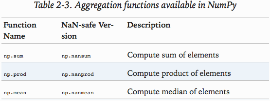
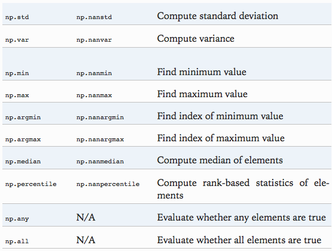
Example: What Is the Average Height of US Presidents?
Aggregates available in NumPy can be extremely useful for summarizing a set of values.
This data is available in the file presidentheights.csv , which is a simple comma-separated list of labels and values:
!head -4 president_heights.csv # >> # order,name,height(cm) # 1,George Washington,189 # 2,John Adams,170 # 3,Thomas Jefferson,189
We’ll use the Pandas package, which we’ll explore more fully in Chapter 3 , to read the file and extract this information:
import pandas as pd data = pd.read_csv("president_heights.csv") heights = np.array(data['height(cm)']) print(heights)
Now that we have this data array, we can compute a variety of summary statistics:
print('Mean height: ', heights.mean()) print('Standard deviation: ', heights.std()) print('Minimum height: ', heights.min()) print('Maximum height: ', heights.max()) # >> # Mean height: 179.738095238 # Standard deviation: 6.93184344275 # Minimum height: 163 # Maximum height: 193
Note that in each case, the aggregation operation reduced the entire array to a single summarizing value, which gives us information about the distribution of values. We may also wish to compute quantiles:
print('25th percentile', np.percentile(heights, 25)) print('Median', np.median(heights)) print('75th percentile', np.percentile(heights, 75)) # >> # 25th percentile 174.25 # Median 182.0 # 75th percentile 183.0
sometimes it’s more useful to see a visual representation of this data, which we can accomplish using tools in Matplotlib (we’ll discuss Matplotlib more fully in Chapter 4 ). For example, this code generates the chart shown in Figure 2-3 :
%matplotlib inline import matplotlib.pyplot as plt import seaborn seaborn.set() # set plot style plt.hist(heights) plt.title('Height Distribution of US Presidents') plt.xlabel('height(cm)') plt.ylabel('number')
Figure 2-3. Histogram of presidential heights
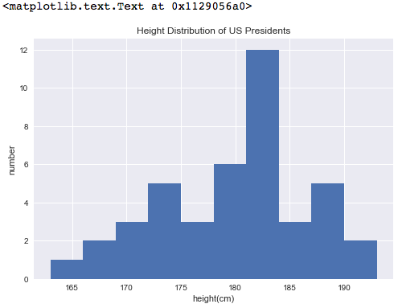
Computation on Arrays: Broadcasting
We saw in the previous section how NumPy’s universal functions can be used to vectorize operations and thereby remove slow Python loops. Another means of vectorizing operations is to use NumPy’s broadcasting functionality.
Broadcasting is simply a set of rules for applying binary ufuncs (addition, subtraction, multiplication, etc.) on arrays of different sizes.
Introducing Broadcasting
for arrays of the same size, binary operations are performed on an element-by-element basis:
Broadcasting allows these types of binary operations to be performed on arrays of different sizes.
For example: add a scalar (think of it as a zero-dimensional array) to an array:
a = np.array([1, 2, 3]) a + 5 # >> array([6, 7, 8])
We can think of this as an operation that stretches or duplicates the value 5 into the array [5, 5, 5] , and adds the results. The advantage of NumPy’s broadcasting is that this duplication of values does not actually take place.
We can similarly extend this to arrays of higher dimension. Observe the result when we add a one-dimensional array to a two-dimensional array:
M = np.ones((3, 3)) print(M) print(M + a) # >> # [[ 1. 1. 1.] # [ 1. 1. 1.] # [ 1. 1. 1.]] # # [[ 2. 3. 4.] # [ 2. 3. 4.] # [ 2. 3. 4.]]
- Here the one-dimensional array a is stretched, or broadcast, across the second dimension in order to match the shape of M.
more complicated cases can involve broadcasting of both arrays. Consider the following example:
a = np.arange(3) b = np.arange(3)[:, np.newaxis] # rotation! print(a) print(b) print(a + b) # >> # [0 1 2] # # [[0] # [1] # [2]] # # [[0 1 2] # [1 2 3] # [2 3 4]]
Just as before we stretched or broadcasted one value to match the shape of the other, here we’ve stretched both a and b to match a common shape, and the result is a two-dimensional array! The geometry of these examples is visualized in Figure 2-4.
Figure 2-4.. Visualization of NumPy broadcasting
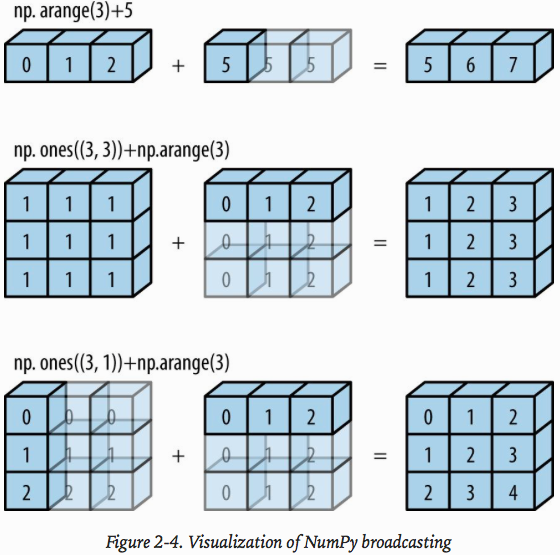
The light boxes represent the broadcasted values: again, this extra memory is not actually allocated in the course of the operation, but it can be useful conceptually to imagine that it is.
Rules of Broadcasting
Broadcasting in NumPy follows a strict set of rules to determine the interaction between the two arrays:
- Rule 1: If the two arrays differ in their number of dimensions, the shape of the one with fewer dimensions is padded with ones on its leading (left) side. [ME: 不是 pad array，而是pad 到 shape，例如 (>1<, 4)]
- Rule 2: If the shape of the two arrays does not match in any dimension, the array with shape equal to 1 in that dimension is stretched to match the other shape.
- Rule 3: If in any dimension the sizes disagree and neither is equal to 1, an error is raised.
Broadcasting example 1
adding a two-dimensional array to a one-dimensional array:
M = np.ones((2, 3)) # shape = (2, 3) a = np.arange(3) # shape = (3, ) [ME: 一维向量，作为一行来看待]
The shapes of the arrays are:
- M.shape = (2, 3)
- a.shape = (3,)
by rule 1 that the array a has fewer dimensions, so we pad it on the left with ones:
- M.shape -> (2, 3) # 2 行 3 列
- a.shape -> (1, 3) # 1 行 3 列
By rule 2, we now see that the first dimension disagrees, so we stretch this dimension to match:
- M.shape -> (2, 3)
- a.shape -> (2, 3)
The shapes match, and we see that the final shape will be (2, 3).
Broadcasting example 2
Both arrays need to be broadcast:
a =np.arange(3).reshape((3, 1)) print(a) b = np.arange(3) print(b) # >> # [[0] # [1] # [2]] # # [0 1 2]
Again, we’ll start by writing out the shape of the arrays:
- a.shape = (3, 1)
- b.shape = (3,)
Rule 1 says we must pad the shape of b with ones:
- a.shape -> (3, 1)
- b.shape -> (1, 3)
And rule 2 tells us that we upgrade each of these ones to match the corresponding size of the other array:
- a.shape -> (3, 3)
- b.shape -> (3, 3)
Because the result matches, these shapes are compatible.
a + b # >> # [[0 1 2] # [1 2 3] # [2 3 4]]
Broadcasting example 3
the two arrays are not compatible:
M = np.ones((3, 2)) a = np.arange(3) # >> # [[ 1. 1.] # [ 1. 1.] # [ 1. 1.]] # # [0 1 2]
The shapes of the arrays are:
- M.shape = (3, 2)
- a.shape = (3,)
Again, rule 1 tells us that we must pad the shape of a with ones:
- M.shape -> (3, 2)
- a.shape -> (1, 3)
By rule 2, the first dimension of a is stretched to match that of M :
- M.shape -> (3, 2)
- a.shape -> (3, 3)
Now we hit rule 3 — the final shapes do not match, so these two arrays are incompatible, as we can observe by attempting this operation:
M + a # >> # --------------------------------------------------------------------------- # ValueError Traceback (most recent call last) # <ipython-input-197-087de2fc8111> in <module>() # ----> 1 M + a # # ValueError: operands could not be broadcast together with shapes (3,2) (3,)
Note the potential confusion here: you could imagine making a and M compatible by, say, padding a ’s shape with ones on the right rather than the left. But this is not how the broadcasting rules work! That sort of flexibility might be useful in some cases, but it would lead to potential areas of ambiguity.
If right-side padding is what you’d like, you can do this explicitly by reshaping the array (we’ll use the np.newaxis keyword introduced in “The Basics of NumPy Arrays” ):
print(a[:, np.newaxis].shape) M + a[:, np.newaxis] # >> # (3, 1) # # array([[ 1., 1.], # [ 2., 2.], # [ 3., 3.]])
Note: these broadcasting rules apply to any binary ufunc – +, -, *, /, logaddexp, etc.
For more information on the many available universal functions, refer to “Computation on NumPy Arrays: Universal Functions”.
Broadcasting in Practice
Broadcasting operations form the core of many examples we’ll see throughout this book.
Centering an array
ufuncs allow a NumPy user to remove the need to explicitly write slow Python loops. Broadcasting extends this ability.
One commonly seen example is centering an array of data. Imagine you have an array of 10 observations, each of which consists of 3 values. Using the standard convention (see “Data Representation in Scikit-Learn” ), we’ll store this in a 10×3 array:
X = np.random.random((10, 3)) print(X) # >> # [[ 0.87776809 0.67643864 0.62665661] # [ 0.72819312 0.0919174 0.61826595] # [ 0.04106689 0.06786838 0.60067209] # [ 0.63191541 0.62249603 0.1702001 ] # [ 0.47874523 0.08670491 0.44493967] # [ 0.88418075 0.02448567 0.32453725] # [ 0.39023804 0.288775 0.65989174] # [ 0.48080108 0.96051784 0.85327637] # [ 0.60072589 0.58299688 0.64581721] # [ 0.89287823 0.29600911 0.98744252]]
compute the mean of each feature using the mean aggregate across the first dimension:
X_mean = X.mean(0) print(X_mean) # >> [ 0.60065127 0.36982099 0.59316995]
now we can center the X array by subtracting the mean (this is a broadcasting operation):
X_centered = X - X_mean print(X_centered) # >> # [[ 2.77116816e-01 3.06617656e-01 3.34866634e-02] # [ 1.27541846e-01 -2.77903589e-01 2.50960020e-02] # [ -5.59584379e-01 -3.01952605e-01 7.50214061e-03] # [ 3.12641363e-02 2.52675042e-01 -4.22969855e-01] # [ -1.21906047e-01 -2.83116073e-01 -1.48230277e-01] # [ 2.83529477e-01 -3.45335319e-01 -2.68632702e-01] # [ -2.10413232e-01 -8.10459850e-02 6.67217857e-02] # [ -1.19850194e-01 5.90696855e-01 2.60106416e-01] # [ 7.46201741e-05 2.13175893e-01 5.26472604e-02] # [ 2.92226956e-01 -7.38118738e-02 3.94272566e-01]]
Double-check: check that the centered array has near zero mean:
X_centered.mean(0) # >> array([ -1.11022302e-17, 3.33066907e-17, -9.99200722e-17])
To within-machine precision, the mean is now zero.
Plotting a two-dimensional function
One place that broadcasting is very useful is in displaying images based on two-dimensional functions. If we want to define a function z = f (x , y ), broadcasting can be used to compute the function across the grid:
# x and y have 50 steps from 0 to 5 x = np.linspace(0, 5, 50) y = np.linspace(0, 5, 50)[:, np.newaxis] z = np.sin(x) ** 10 + np.cos(10 + y * x) * np.cos(x)
We’ll use Matplotlib to plot this two-dimensional array (these tools will be discussed in full in “Density and Contour Plots” ):
# x and y have 50 steps from 0 to 5 x = np.linspace(0, 5, 50) y = np.linspace(0, 5, 50)[:, np.newaxis] z = np.sin(x) ** 10 + np.cos(10 + y * x) * np.cos(x) %matplotlib inline import matplotlib.pyplot as plt plt.imshow(z, origin='lower', extent=[0, 5, 0, 5], cmap='viridis') plt.colorbar(); # [ME: ";" at the end of line disables showing return value]
Figure 2-5: Visualization of a 2D array
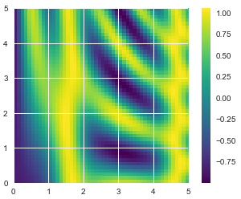
Comparisons, Masks, and Boolean Logic
This section covers the use of Boolean masks to examine and manipulate values within NumPy arrays.
Masking comes up when you want to extract, modify, count, or otherwise manipulate values in an array based on some criterion:
for example, you might wish to count all values greater than a certain value, or perhaps remove all outliers that are above some threshold. In NumPy, Boolean masking is often the most efficient way to accomplish these types of tasks.
Example: Counting Rainy Days
Imagine you have a series of data that represents the amount of precipitation each day for a year in a given city. For example, here we’ll load the daily rainfall statistics for the city of Seattle in 2014, using Pandas (which is covered in more detail in Chapter 3 ):
import numpy as np import pandas as pd # use Pandas to extract rainfall inches as a NumPy array rainfall = pd.read_csv('Seattle2014.csv')['PRCP'].values inches = rainfall / 254 # 1/10mm -> inches inches.shape # >> (365, )
As a first quick visualization, let’s look at the histogram of rainy days shown in Figure 2-6:
%matplotlib inline import matplotlib.pyplot as plt import seaborn seaborn.set() # set plot styles plt.hist(inches, 40);
Figure 2-6. Histogram of 2014 rainfall in Seattle
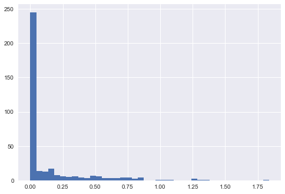
[ME: find a tutorial about seaborn at http://seaborn.pydata.org/tutorial/aesthetics.html]
Digging into the data
One approach: loop through the data, incrementing a counter each time we see values in some desired range.
For reasons discussed throughout this chapter, such an approach is very inefficient, both from the standpoint of time writing code and time computing the result.
NumPy’s ufuncs can be used in place of loops to do fast element-wise arithmetic operations on arrays; in the same way, we can use other ufuncs to do element-wise comparisons over arrays.
First, we'll discuss some general tools in NumPy to use masking to quickly answer these types of questions.
Comparison Operators as ufuncs
We saw that using + , - , * , / , and others on arrays leads to element-wise operations. NumPy also implements comparison operators such as < (less than) and > (greater than) as element-wise ufuncs.
The result of these comparison operators is always an array with a Boolean data type.
All six of the standard comparison operations (<, >, <=, >=, !=, ==) are available:
x = np.array([1, 2, 3, 4, 5]) # less than x < 3 # >> array([ True, True, False, False, False], dtype=bool)
It is also possible to do an element-by-element comparison of two arrays, and to include compound expressions:
(2 * x) == (x ** 2) # >> array([False, True, False, False, False], dtype=bool)
the comparison operators are implemented as ufuncs in NumPy.
- ==: np.equal
- !=: np.notequal
- <: np.less
- <=: np.lessequal
- >: np.greater
- >=: np.greaterequal
these will work on arrays of any size and shape. Here is a two-dimensional example:
rng = np.random.RandomState(0) x = rng.randint(10, size=(3, 4)) print(x) x < 6 # >> # [[5 0 3 3] # [7 9 3 5] # [2 4 7 6]] # # array([[ True, True, True, True], # [False, False, True, True], # [ True, True, False, False]], dtype=bool)
NumPy provides a number of straightforward patterns for working with these Boolean results.
Working with Boolean Arrays
Counting entries
To count the number of True entries in a Boolean array, np.countnonzero is useful:
# how many values less than 6? np.count_nonzero(x < 6) # >> 8
Another way to get at this information is to use np.sum ; in this case, False is interpreted as 0 , and True is interpreted as 1:
np.sum(x < 6) # >> 8
The benefit of sum() is that like with other NumPy aggregation functions, this summation can be done along rows or columns as well:
np.sum(x < 6, axis=1) # axis: the dimension to be collapsed # >> array([4, 2, 2])
If we’re interested in quickly checking whether any or all the values are true, we can use (you guessed it) np.any() or np.all() :
# are there any values greater than 8? np.any(x > 8) # >> True # are all values equal to 6? np.all(x == 6) # >> False
np.all() and np.any() can be used along particular axes as well.
np.any(x > 8, axis=1) # >> array([False, True, False], dtype=bool) np.all(x == 6, axis=1) # >> array([False, False, False], dtype=bool)
Finally, a quick warning: as mentioned in “Aggregations: Min, Max, and Everything in Between” , Python has built-in sum() , any() , and all() functions. These have a different syntax than the NumPy versions, and in particular will fail or produce unintended results when used on multidimensional arrays. Be sure that you are using np.sum() , np.any() , and np.all() for these examples!
Boolean operators
what if we want to know about all days with rain less than four inches and greater than one inch? This is accomplished through Python’s bitwise logic operators , & , | , ^ , and ~ . Like with the standard arithmetic operators, NumPy overloads these as ufuncs that work element-wise on (usually Boolean) arrays.
np.sum((inches > 0.5) & (inches < 1)) # >> 29
Combining comparison operators and Boolean operators on arrays can lead to a wide range of efficient logical operations.
Bitwise Boolean operators and their equivalent ufuncs:
- &: np.bitwiseand
- |: np.bitwiseor
- ^: np.bitwisexor
- ~: np.bitwisenot
Here are some examples of results we can compute when combining masking with aggregations:
print('Number days without rain:', np.sum(inches == 0)) print('Number days with rain:', np.sum(inches != 0)) print('Days with more than 0.5 inches:', np.sum(inches > 0.5)) print('Days with < 0.2 inches:', np.sum((inches > 0) & (inches < 0.2))) # >> # Number days without rain: 215 # Number days with rain: 150 # Days with more than 0.5 inches: 37 # Days with < 0.2 inches: 75
Boolean Arrays as Masks
print(x) # >> # [[5 0 3 3] # [7 9 3 5] # [2 4 7 6]]
Obtain a Boolean array for this condition easily:
x > 5 # >> # array([[False, True, True, True], # [False, False, True, False], # [ True, True, False, False]], dtype=bool)
Now to select these values from the array, we can simply index on this Boolean array; this is known as a masking operation:
x[x > 5] # >> array([0, 3, 3, 3, 2, 4])
What is returned is a one-dimensional array filled with all the values that meet this condition; in other words, all the values in positions at which the mask array is True.
we can compute some relevant statistics on our Seattle rain data:
# construct a mask of all rainy days rainy = (inches > 0) # construct a mask of all summer days (June 21st is the 172nd day) summer = (np.arange(365) - 172 < 90) & (np.arange(365) - 172 > 0) print('Median precip on rainy days in 2014 (inches): ', np.median(inches[rainy])) print('Median precip on summer days in 2014 (inches): ', np.median(inches[summer])) print('Maximum precip on summer days in 2014 (inches): ', np.max(inches[summer])) print('Median precip on non-summer rainy days in 2014 (inches): ', np.median(inches[rainy & ~summer])) # >> # Median precip on rainy days in 2014 (inches): 0.194881889764 # Median precip on summer days in 2014 (inches): 0.0 # Maximum precip on summer days in 2014 (inches): 0.850393700787 # Median precip on non-summer rainy days in 2014 (inches): 0.200787401575
By combining Boolean operations, masking operations, and aggregates, we can very quickly answer these sorts of questions for our dataset.
Using The Keywords and/or versus the Operators %/|
The difference is this: and and or gauge the truth or falsehood of entire object, while & and | refer to bits within each object.
When you use and or or , it’s equivalent to asking Python to treat the object as a single Boolean entity. In Python, all nonzero integers will evaluate as True.
When you use & and | on integers, the expression operates on the bits of the element, applying the and or the or to the individual bits making up the number.
bin(42) # 0b101010 bin(59) # 0b111011 bin(42 & 59) # 0b101010 bin(42 | 59) # 0b111011
When you have an array of Boolean values in NumPy, this can be thought of as a string of bits where 1 = True and 0 = False , and the result of & and | operates in a similar manner as before:
A = np.array([1, 0, 1, 0, 1, 0], dtype=bool) B = np.array([1, 1, 1, 0, 1, 1], dtype=bool) A | B # >> array([ True, True, True, False, True, True], dtype=bool)
Using or on these arrays will try to evaluate the truth or falsehood of the entire array object, which is not a well-defined value:
A or B # >> # --------------------------------------------------------------------------- # ValueError Traceback (most recent call last) # <ipython-input-319-5d8e4f2e21c0> in <module>() # ----> 1 A or B # # ValueError: The truth value of an array with more than one element is ambiguous. Use a.any() or a.all()
Similarly, when doing a Boolean expression on a given array, you should use | or & rather than or or and :
x = np.arange(10) (x > 4) & (x < 8) # >> array([False, False, False, False, False, True, True, True, False, False], dtype=bool)
Trying to evaluate the truth or falsehood of the entire array will give the same ValueError we saw previously:
(x > 4) and (x < 8) # >> # --------------------------------------------------------------------------- # ValueError Traceback (most recent call last) # <ipython-input-321-3d24f1ffd63d> in <module>() # ----> 1 (x > 4) and (x < 8) # # ValueError: The truth value of an array with more than one element is ambiguous. Use a.any() or a.all()
Remember: and and or perform a single Boolean evaluation on an entire object, while & and | perform multiple Boolean evaluations on the content (the individual bits or bytes) of an object. For Boolean NumPy arrays, the latter is nearly always the desired operation .
Fancy Indexing
In the previous sections, we saw how to access and modify portions of arrays using
- simple indices (e.g.,
arr[0]), - slices (e.g., arr[:5] ), and
- Boolean masks (e.g., arr[arr > 0] ).
Fancy indexing is like the simple indexing we’ve already seen, but we pass arrays of indices in place of single scalars. This allows us to very quickly access and modify complicated subsets of an array’s values.
Exploring Fancy Indexing
Concept: passing an array of indices to access multiple array elements at once.
rand = np.random.RandomState(42) x = rand.randint(100, size=10) print(x) # >> [51 92 14 71 60 20 82 86 74 74]
Suppose we want to access three different elements. We could do it like this:
[x[3], x[7], x[2]] # >> [71, 86, 14]
Alternatively, we can pass a single list or array of indices to obtain the same result:
ind = [3, 7, 2] x[ind] # >> array([71, 86, 14])
With fancy indexing, the shape of the result reflects the shape of the index arrays rather than the shape of the array being indexed:
ind = np.array([[3, 7], [4, 5]]) x[ind] # >> # array([[71, 86], # [60, 20]])
Fancy indexing also works in multiple dimensions. Consider the following array:
X = np.arange(12).reshape((3, 4)) print(X) # >> # [[ 0 1 2 3] # [ 4 5 6 7] # [ 8 9 10 11]]
Like with standard indexing, the first index refers to the row, and the second to the column:
row = np.array([0, 1, 2]) col = np.array([2, 1, 3]) X[row, col] # >> array([ 2, 5, 11])
The pairing of indices in fancy indexing follows all the broadcasting rules that were mentioned in “Computation on Arrays: Broadcasting” . So, for example, if we combine a column vector and a row vector within the indices, we get a two-dimensional result:
X[row[:, np.newaxis], col] # >> # array([[ 2, 1, 3], # [ 6, 5, 7], # [10, 9, 11]])
Here, each row value is matched with each column vector, exactly as we saw in broadcasting of arithmetic operations. For example:
row[:, np.newaxis] * col # >> # array([[0, 0, 0], # [2, 1, 3], # [4, 2, 6]])
Important: remember with fancy indexing that the return value reflects the broadcasted shape of the indices, rather than the shape of the array being indexed.
Combined Indexing
For even more powerful operations, fancy indexing can be combined with the other indexing schemes we’ve seen:
X # >> # [[ 0 1 2 3] # [ 4 5 6 7] # [ 8 9 10 11]]
We can combine fancy and simple indices:
X[2, [2, 0, 1]] # >> array([10, 8, 9])
We can also combine fancy indexing with slicing:
X[1:, [2, 0, 1]] # >> # array([[ 6, 4, 5], # [10, 8, 9]])
And we can combine fancy indexing with masking:
k = np.array([1, 0, 1, 0], dtype=bool) X[row[:, np.newaxis], mask] # >> # array([[ 0, 2], # [ 4, 6], # [ 8, 10]])
Example: Selecting Random Points
One common use of fancy indexing is the selection of subsets of rows from a matrix.
For example, we might have an N by D matrix representing N points in D dimensions, such as the following points drawn from a two-dimensional normal distribution:
mean = [0, 0] cov = [[1, 2], [2, 5]] X = rand.multivariate_normal(mean, cov, 100) X.shape # >> (100, 2)
Using the plotting tools we will discuss in Chapter 4 , we can visualize these points as a scatter plot (Figure 2-7 ):
%matplotlib inline import matplotlib.pyplot as plt import seaborn; seaborn.set() # for plot styling plt.scatter(X[:, 0], X[:, 1])
Figure 2-7. Normally distributed points
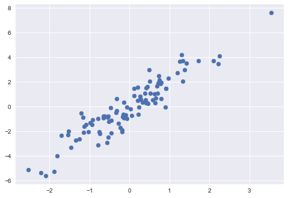
Let’s use fancy indexing to select 20 random points. We’ll do this by first choosing 20 random indices with no repeats, and use these indices to select a portion of the original array:
indices = np.random.choice(X.shape[0], 20, replace=False) indices # >> [91, 2, 93, 63, 12, 77, 73, 58, 61, 48, 47, 79, 50, 52, 89, 49, 17, 46, 15, 86] # fancy indexing here selection = X[indices] # select lines selection.shape # >> (20, 2)
Now to see which points were selected, let’s over-plot large circles at the locations of the selected points (Figure 2-8 ):
plt.scatter(X[:, 0], X[:, 1], alpha=0.3)
plt.scatter(selection[:, 0], selection[:, 1],
facecolor='none', edgecolor='red', s=200);
Figure 2-8. Random selection among points
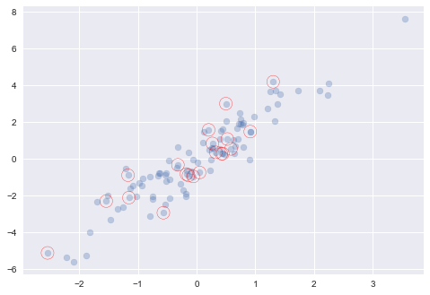
Application: This sort of strategy is often used to quickly partition datasets, as is often needed in train/test splitting for validation of statistical models (see “Hyperparameters and Model Validation” ), and in sampling approaches to answering statistical questions.
Modifying Values with Fancy Indexing
Just as fancy indexing can be used to access parts of an array, it can also be used to modify parts of an array. For example, imagine we have an array of indices and we’d like to set the corresponding items in an array to some value:
x = np.arange(10) i = np.array([2, 1, 8, 4]) print(x) # >> [0 1 2 3 4 5 6 7 8 9] print(x[i]) # >> [2 1 8 4] x[i] = 99 print(x) # >> [ 0 99 99 3 99 5 6 7 99 9]
We can use any assignment-type operator for this. For example:
x[i] -= 10 x # >> array([ 0, 89, 89, 3, 89, 5, 6, 7, 89, 9])
Notice, though, that repeated indices with these operations can cause some potentially unexpected results. Consider the following:
x = np.zeros(10) x[[0, 0]] = [4, 6] print(x) # >> [ 6. 0. 0. 0. 0. 0. 0. 0. 0. 0.]
- The result of this operation is to first assign x[ 0] = 4 , followed by x[ 0] = 6 . The result, of course, is that x[ 0] contains the value 6.”
Fair enough, but consider this operation:
i = [2, 3, 3, 4, 4, 4] x[i] += 1 x # >> array([ 6., 0., 1., 1., 1., 0., 0., 0., 0., 0.])
You might expect that x[ 3] would contain the value 2, and x[ 4] would contain the value 3, as this is how many times each index is repeated. Why is this not the case? Conceptually, this is because x[i] += 1 is meant as a shorthand of x[i] = x[i] + 1 . x[i] + 1 is evaluated, and then the result is assigned to the indices in x . With this in mind, it is not the augmentation that happens multiple times, but the assignment, which leads to the rather nonintuitive results.
So what if you want the other behavior where the operation is repeated? For this, you can use the at() method of ufuncs (available since NumPy 1.8), and do the following:
x = np.zeros(10) i = [2, 3, 3, 4, 4, 4] np.add.at(x, i, 1) print(x) # >> [ 0. 0. 1. 2. 3. 0. 0. 0. 0. 0.]
The at() method does an in-place application of the given operator at the specified indices (here, i ) with the specified value (here, 1). Another method that is similar in spirit is the reduceat() method of ufuncs, which you can read about in the NumPy documentation.
Example: Binning Data
You can use these ideas to efficiently bin data to create a histogram by hand. For example, imagine we have 1,000 values and would like to quickly find where they fall within an array of bins. We could compute it using ufunc.at like this:
np.random.seed(42) x = np.random.randn(100) # compute historgram by hand bins = np.linspace(-5, 5, 21) # 平均分成20段，如此处为20，则分成19段 counts = np.zeros_like(bins) # find the appropriate bin for each x i = np.searchsorted(bins, x) # add 1 to each of these bins np.add.at(counts, i, 1)
The counts now reflect the number of points within each bin — in other words, a histogram (Figure 2-9 ):
# plot the results plt.plot(bins, counts, linestyle='steps')
Figure 2-9. A histogram computed by hand
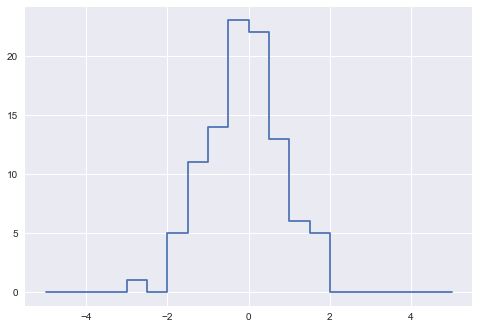
Of course, it would be silly to have to do this each time you want to plot a histogram. This is why Matplotlib provides the plt.hist() routine, which does the same in a single line:
plt.hist(x, bins, histtype='step');
This function will create a nearly identical plot to the one seen here.
To compute the binning, Matplotlib uses the np.histogram function, which does a very similar computation to what we did before. Our own one-line algorithm is several times faster than the optimized algorithm in NumPy – only when the number of data points is little.
-> What this comparison shows is that algorithmic efficiency is almost never a simple question. An algorithm efficient for large datasets will not always be the best choice for small datasets, and vice versa (see “Big-O Notation” ). But the advantage of coding this algorithm yourself is that with an understanding of these basic methods, you could use these building blocks to extend this to do some very interesting custom behaviors. The key to efficiently using Python in data-intensive applications is knowing about general convenience routines like np.histogram and when they’re appropriate, but also knowing how to make use of lower-level functionality when you need more pointed behavior.
Sorting Arrays
Up to this point we have been concerned mainly with tools to access and operate on array data with NumPy. This section covers algorithms related to sorting values in NumPy arrays.
For example, a simple selection sort repeatedly finds the minimum value from a list, and makes swaps until the list is sorted. We can code this in just a few lines of Python:
import numpy as np def selection_sort(x): for i in range(len(x)): swap = i + np.argmin(x[i:]) (x[i], x[swap]) = (x[swap], x[i]) # <--- list comprehension? return x
but is much too slow to be useful for larger arrays. For a list of N values, it requires N loops, each of which does on the order of ~ N comparisons to find the swap value. In terms of the “big-O” notation often used to characterize these algorithms (see “Big-O Notation” ), selection sort averages : if you double the number of items in the list, the execution time will go up by about a factor of four.
Even selection sort, though, is much better than my all-time favorite sorting algorithms, the bogosort:
def bogosort(x): while np.any(x[:-1] > x[1:]): np.random.shuffle(x) return x
This silly sorting method relies on pure chance: it repeatedly applies a random shuffling of the array until the result happens to be sorted. With an average scaling of (that’s N times N factorial).
Fast Sorting in NumPy: np.sort and np.argsort
Python has built-in sort and sorted functions to work with lists -> NumPy’s np.sort function turns out to be much more efficient and useful for our purposes. By default np.sort uses an O(NlogN), quicksort algorithm, though mergesort and heapsort are also available. For most applications, the default quicksort is more than sufficient.
To return a sorted version of the array without modifying the input, you can use np.sort :
x = np.array([2, 1, 4, 3, 5]) np.sort(x) # >> array([1, 2, 3, 4, 5])
If you prefer to sort the array in-place, you can instead use the sort method of arrays:
x.sort() print(x) # >> [1 2 3 4 5]
A related function is argsort , which instead returns the indices of the sorted elements (can be used via fancy indexing to construct the sorted array):
x = np.array([2, 1, 4, 3, 5]) i = np.argsort(x) print(i) # >> [1 0 3 2 4] in ascending order
Sorting along rows or columns
A useful feature of NumPy’s sorting algorithms is the ability to sort along specific rows or columns of a multidimensional array using the axis argument. For example:
rand = np.random.RandomState(42) X = rand.randint(0, 10, (4, 6)) print(X) # >> # [[6 3 7 4 6 9] # [2 6 7 4 3 7] # [7 2 5 4 1 7] # [5 1 4 0 9 5]] # sort each column of X print(np.sort(X, axis=0)) # >> # [[2 1 4 0 1 5] # [5 2 5 4 3 7] # [6 3 7 4 6 7] # [7 6 7 4 9 9]] # sort each row of X print(np.sort(X, axis=1)) # >> # [[3 4 6 6 7 9] # [2 3 4 6 7 7] # [1 2 4 5 7 7] # [0 1 4 5 5 9]]
Note: Keep in mind that this treats each row or column as an independent array, and any relationships between the row or column values will be lost!
Partial Sorts: Partitioning
Sometimes we’re not interested in sorting the entire array, but simply want to find the K smallest values in the array. NumPy provides this in the np.partition function.
np.partition takes an array and a number K ; the result is a new array with the smallest K values to the left of the partition, and the remaining values to the right, in arbitrary order:
x = np.array([7, 2, 3, 1, 6, 5, 4]) np.partition(x, 3) # >> array([2, 1, 3, 4, 6, 5, 7])
Note that the first three values in the resulting array are the three smallest in the array, and the remaining array positions contain the remaining values. Within the two partitions, the elements have arbitrary order.
Similarly to sorting, we can partition along an arbitrary axis of a multidimensional array:
np.partition(X, 3, axis=1) # >> # array([[3, 4, 6, 6, 7, 9], # [2, 3, 4, 6, 7, 7], # [2, 1, 4, 5, 7, 7], # [0, 4, 1, 5, 9, 5]])
Finally, just as there is a np.argsort that computes indices of the sort, there is a np.argpartition that computes indices of the partition. We’ll see this in action in the following section.
Example: k-Nearest Neighbors
Let’s quickly see how we might use this argsort function along multiple axes to find the nearest neighbors of each point in a set.
We’ll start by creating a random set of 10 points on a two-dimensional plane. Using the standard convention, we’ll arrange these in a 10×2 array:
X = rand.rand(10, 2)
Plot them:
Figure 2-10. Visualization of points in the k-neighbors example
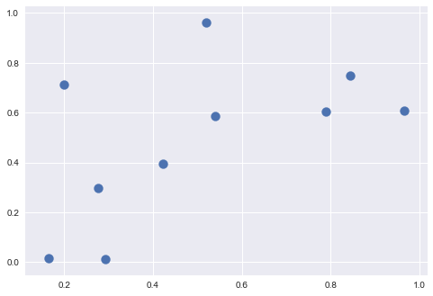
Now we’ll compute the distance between each pair of points. Recall that the squared-distance between two points is the sum of the squared differences in each dimension; using the efficient broadcasting (“Computation on Arrays: Broadcasting” ) and aggregation (“Aggregations: Min, Max, and Everything in Between” ) routines provided by NumPy, we can compute the matrix of square distances in a single line of code:
dist_sq = np.sum((X[:, np.newaxis, :] - X[np.newaxis, :, :]) ** 2, axis=-1)
[ME: –begin–]
np.newaxis 的含义，参考下面的例子，在哪个位置插入 newaxis，相当于在此位置增加一个为1的项，例如 a.shape = (2, 3)，那么 a[np.newaxis, :, :].shape = (1, 2, 3)，而 a[:, np.newaxis, :] == (2, 1, 3) -> array 的 element 顺序不变（行-列），按照新的shape划分！
b = np.arange(24).reshape((2, 3, 4)) print(b, '\n') print('shape:', b.shape) # >> # [[[ 0 1 2 3] # [ 4 5 6 7] # [ 8 9 10 11]] # # [[12 13 14 15] # [16 17 18 19] # [20 21 22 23]]] # # shape: (2, 3, 4)
[ME: –end–]
[ME: –begin–]
- X[:, np.newaxis, :]: shape == (10, 1, 2)
- X[np.newaxis, :, :]: shape == (1, 10, 2)
Broadcasting: shape(10, 1, 2) => shape(10, 10, 2)
[
[[x1, y1]],
[[x2, y2]],
...,
[[x10, y10]]
]
=>
[
[[x1, y1], [x1, y1], ..., [x1, y1]],
[[x2, y2], [x2, y2], ..., [x2, y2]],
[[x3, y3], [x3, y3], ..., [x3, y3]],
[[x4, y4], [x4, y4], ..., [x4, y4]],
[[x5, y5], [x5, y5], ..., [x5, y5]],
[[x6, y6], [x6, y6], ..., [x6, y6]],
[[x7, y7], [x7, y7], ..., [x7, y7]],
[[x8, y8], [x8, y8], ..., [x8, y8]],
[[x9, y9], [x9, y9], ..., [x9, y9]],
[[x10, y10], [x10, y10], ..., [x10, y10]]
]
Broadcasting: shape(1, 10, 2) => shape(10, 10, 2)
[
[[x1, y1], [x2, y2], ..., [x10, y10]]
]
=>
[
[[x1, y1], [x2, y2], ..., [x10, y10]],
[[x1, y1], [x2, y2], ..., [x10, y10]],
[[x1, y1], [x2, y2], ..., [x10, y10]],
[[x1, y1], [x2, y2], ..., [x10, y10]],
[[x1, y1], [x2, y2], ..., [x10, y10]],
[[x1, y1], [x2, y2], ..., [x10, y10]],
[[x1, y1], [x2, y2], ..., [x10, y10]],
[[x1, y1], [x2, y2], ..., [x10, y10]],
[[x1, y1], [x2, y2], ..., [x10, y10]],
[[x1, y1], [x2, y2], ..., [x10, y10]]
]
[ME: –end–]
Just to double-check what we are doing, we should see that the diagonal of this matrix (i.e., the set of distances between each point and itself) is all zero:
dist_sq.diagonal() # >> array([ 0., 0., 0., 0., 0., 0., 0., 0., 0., 0.])
We can now use np.argsort to sort along each row. The leftmost columns will then give the indices of the nearest neighbors:
nearest = np.argsort(dist_sq, axis=1) print(nearest) # >> # [[0 2 1 8 9 3 6 4 7 5] # [1 9 3 2 0 6 8 4 7 5] # [2 6 9 1 8 0 4 3 7 5] # [3 9 1 2 0 6 4 8 7 5] # [4 6 7 5 2 8 9 0 1 3] # [5 7 4 6 2 8 9 3 1 0] # [6 4 2 8 7 9 5 1 0 3] # [7 5 4 6 2 8 9 3 1 0] # [8 2 6 0 4 9 1 5 7 3] # [9 1 3 2 6 0 4 8 7 5]]
Notice that the first column gives the numbers 0 through 9 in order: this is due to the fact that each point’s closest neighbor is itself, as we would expect.
If we’re simply interested in the nearest k neighbors, all we need is to partition each row so that the smallest k + 1 squared distances come first, with larger distances filling the remaining positions of the array. We can do this with the np.argpartition function:
K = 2 nearest_partition = np.argpartition(dist_sq, K + 1, axis=1)
In order to visualize this network of neighbors, let’s quickly plot the points along with lines representing the connections from each point to its two nearest neighbors (Figure 2-11 ):
plt.scatter(X[:, 0], X[:, 1], s=100) # draw lines from each point to its two nearest neighbors K = 2 for i in range(X.shape[0]): for j in nearest_partition[i, :K+1]: # plot a line from X[i] to X[j] # use some zip magic to make it happen plt.plot(*zip(X[j], X[i]), color='black')
Figure 2-11. Visualization of the neighbors of each point
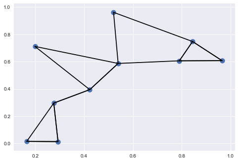
Although the broadcasting and row-wise sorting of this approach might seem less straightforward than writing a loop, it turns out to be a very efficient way of operating on this data in Python.
The beauty of this approach is that it’s written in a way that’s agnostic to the size of the input data: we could just as easily compute the neighbors among 100 or 1,000,000 points in any number of dimensions, and the code would look the same.
When doing very large nearest-neighbor searches, there are tree-based and/or approximate algorithms that can scale as O(NlogN) or better rather than the O(N2) of the brute-force algorithm. One example of this is the KD-Tree, implemented in Scikit-Learn.
Big-O Notation
Big-O notation is a means of describing how the number of operations required for an algorithm scales as the input grows in size.
Far more common in the data science world is a less rigid use of big-O notation: as a general (if imprecise) description of the scaling of an algorithm.
Big-O notation, in this loose sense, tells you how much time your algorithm will take as you increase the amount of data. If you have an O[N] (read “order N ”) algorithm that takes 1 second to operate on a list of length N =1,000, then you should expect it to take roughly 5 seconds for a list of length N =5,000. If you have an O[N2] (read “order N squared”) algorithm that takes 1 second for N =1,000, then you should expect it to take about 25 seconds for N =5,000.
For our purposes, the N will usually indicate some aspect of the size of the dataset (the number of points, the number of dimensions, etc.). When trying to analyze billions or trillions of samples, the difference between O[N] and O[N2] can be far from trivial!
Notice that the big-O notation by itself tells you nothing about the actual wall-clock time of a computation, but only about its scaling as you change N . Generally, for example, an O[N] algorithm is considered to have better scaling than an O[N2] algorithm, and for good reason. But for small datasets in particular, the algorithm with better scaling might not be faster. For example, in a given problem an O[N2] algorithm might take 0.01 seconds, while a “better” O[N] algorithm might take 1 second. Scale up N by a factor of 1,000, though, and the O[N] algorithm will win out.
Structured Data: NumPy's Structured Arrays
While often our data can be well represented by a homogeneous array of values, sometimes this is not the case. This section demonstrates the use of NumPy’s structured arrays and record arrays, which provide efficient storage for compound, heterogeneous data.
scenarios like this often lend themselves to the use of Pandas DataFrame s, which we’ll explore in Chapter 3.
Imagine that we have several categories of data on a number of people (say, name, age, and weight), and we’d like to store these values for use in a Python program. It would be possible to store these in three separate arrays.
name = ['Alice', 'Bob', 'Cathy', 'Doug'] age = [25, 45, 37, 19] weight = [55.0, 85.5, 68.0, 61.5]
But this is a bit clumsy. There’s nothing here that tells us that the three arrays are related; it would be more natural if we could use a single structure to store all of this data. NumPy can handle this through structured arrays, which are arrays with compound data types.
We previously created a simple array like this:
x = np.zeros(4, dtype=int)
We can similarly create a structured array using a compound data type specification:
# Use a compound data type for structured arrays data = np.zeros(4, dtype={ 'names': ('name', 'age', 'weight'), 'formats': ('U10', 'i4', 'f8') }) print(data.dtype) # >> [('name', '<U10'), ('age', '<i4'), ('weight', '<f8')] data # >> # array([('', 0, 0.), ('', 0, 0.), ('', 0, 0.), ('', 0, 0.)], # dtype=[('name', '<U10'), ('age', '<i4'), ('weight', '<f8')])
Here 'U10' translates to “Unicode string of maximum length 10,” 'i4' translates to “4-byte (i.e., 32 bit) integer,” and 'f8' translates to “8-byte (i.e., 64 bit) float.
Now we can fill the array with our lists of values:
data['name'] = name data['age'] = age data['weight'] = weight print(data) # >> [('Alice', 25, 55. ) ('Bob', 45, 85.5) ('Cathy', 37, 68. ) ('Doug', 19, 61.5)]
The handy thing with structured arrays is that you can now refer to values either by index or by name:
# Get all names print(data['name']) # >> ['Alice' 'Bob' 'Cathy' 'Doug'] # Get first row of data print(data[0]) # >> ('Alice', 25, 55.) # Get the name from the last row print(data[-1]['name']) # >> Doug
Using Boolean masking, this even allows you to do some more sophisticated operations such as filtering on age:
# Get names where age is under 30 data[data['age'] < 30]['name'] # >> array(['Alice', 'Doug'], dtype='<U10')
Note that if you’d like to do any operations that are any more complicated than these, you should probably consider the Pandas package, covered in the next chapter. Pandas provides a DataFrame object, which is a structure built on NumPy arrays that offers a variety of useful data manipulation functionality similar to what we’ve shown here, as well as much, much more.
Creating Structured Arrays
Structured array data types can be specified in a number of ways.
Earlier, we saw the dictionary method:
np.dtype({'names':('name', 'age', 'weight'),
'formats':('U10', 'i4', 'f8')})
# >> dtype([('name', '<U10'), ('age', '<i4'), ('weight', '<f8')])
For clarity, numerical types can be specified with Python types or NumPy dtype s instead:
np.dtype({'names':('name', 'age', 'weight'),
'formats':((np.str_, 10), int, np.float32)})
# >> dtype([('name', '<U10'), ('age', '<i8'), ('weight', '<f4')])
A compound type can also be specified as a list of tuples:
np.dtype([('name', 'S10'), ('age', 'i4'), ('weight', 'f8')]) # >> dtype([('name', 'S10'), ('age', '<i4'), ('weight', '<f8')])
If the names of the types do not matter to you, you can specify the types alone in a comma-separated string:
np.dtype('S10,i4,f8') # >> dtype([('f0', 'S10'), ('f1', '<i4'), ('f2', '<f8')])
The shortened string format are built on simple principles:
- The first (optional) character is < or > , which means “little endian” or “big endian,” respectively, and specifies the ordering convention for significant bits.
- The next character specifies the type of data: characters, bytes, ints, floating points, and so on (see Table 2-4 ).
- The last character or characters represents the size of the object in bytes.
Table 2-4. NumPy data types
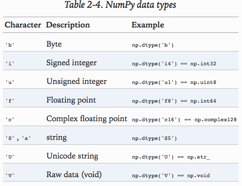
More Advanced Compound Types
For example, you can create a type where each element contains an array or matrix of values. Here, we’ll create a data type with a mat component consisting of a 3×3 floating-point matrix:
tp = np.dtype([('id', 'i8'), ('mat', 'f8', (3, 3))]) X = np.zeros(2, dtype=tp) print(X[0]) print(X['mat'][0]) print(X) # >> # (0, [[ 0., 0., 0.], [ 0., 0., 0.], [ 0., 0., 0.]]) # # [[ 0. 0. 0.] # [ 0. 0. 0.] # [ 0. 0. 0.]] # # [(0, [[ 0., 0., 0.], [ 0., 0., 0.], [ 0., 0., 0.]]) # (0, [[ 0., 0., 0.], [ 0., 0., 0.], [ 0., 0., 0.]])]
Tip: Why would you use this rather than a simple multidimensional array, or perhaps a Python dictionary? The reason is that this NumPy dtype directly maps onto a C structure definition, so the buffer containing the array content can be accessed directly within an appropriately written C program. If you find yourself writing a Python interface to a legacy C or Fortran library that manipulates structured data, you’ll probably find structured arrays quite useful!
RecordArrays: Structured Arrays with a Twist
the np.recarray class, which is almost identical to the structured arrays just described, but with one additional feature: fields can be accessed as attributes rather than as dictionary keys. Recall that we previously accessed the ages by writing:
data['age'] # >> array([25, 45, 37, 19], dtype=int32)
If we view our data as a record array instead, we can access this with slightly fewer keystrokes:
data_rec = data.view(np.recarray) data_rec.age # >> array([25, 45, 37, 19], dtype=int32)
The downside is that for record arrays, there is some extra overhead involved in accessing the fields, even when using the same syntax. Whehter the more convenient notation is worth the additional overhead will depend on your own application.
On to Pandas
Pandas. Structured arrays like the ones discussed here are good to know about for certain situations, especially in case you’re using NumPy arrays to map onto binary data formats in C, Fortran, or another language. For day-to-day use of structured data, the Pandas package is a much better choice, and we’ll dive into a full discussion of it in the next chapter.
3. Data Manipulation with Pandas
NumPy and its ndarray object provides efficient storage and manipulation of dense typed arrays in Python.
Pandas is a newer package built on top of NumPy, and provides an efficient implementation of a DataFrame. DataFrame s are essentially multidimensional arrays with attached row and column labels, and often with heterogeneous types and/or missing data. As well as offering a convenient storage interface for labeled data, Pandas implements a number of powerful data operations familiar to users of both database frameworks and spreadsheet programs.
NumPy’s ndarray data structure provides essential features for the type of clean, well-organized data typically seen in numerical computing tasks. While it serves this purpose very well, its limitations become clear when we need more flexibility (attaching labels to data, working with missing data, etc.) and when attempting operations that do not map well to element-wise broadcasting (groupings, pivots, etc.), each of which is an important piece of analyzing the less structured data available in many forms in the world around us. Pandas, and in particular its Series and DataFrame objects, builds on the NumPy array structure and provides efficient access to these sorts of “data munging” tasks that occupy much of a data scientist’s time.
3.0 Installing and Using Pandas
Pandas depends on NumPy.
Installation: refer to the Pandas documentation.
If you followed the advice outlined in the preface and used the Anaconda stack, you already have Pandas installed.
Check the version:
import pandas pandas.__version__ # >> '0.19.2'
Convention: We will import Pandas under theh alias pd:
import pandas as pd
Reminder about built-in documentation
Tab-completion, ?
Display the built-in Pandas documentation: pd?
More detailed documentation: http://pandas.pydata.org/.
3.1 Introducing Pandas Objects
At the very basic level, Pandas objects can be thought of as enhanced versions of NumPy structured arrays in which the rows and columns are identified with labels rather than simple integer indices.
Pandas provides a host of useful tools, methods, and functionality on top of the basic data structures, but nearly everything that follows will require an understanding of what these structures are.
-> let’s introduce these three fundamental Pandas data structures: the Series , DataFrame , and Index.
Start:
import numpy as np import pandas as pd
The Pandas Series Object
A Pandas Series is a one-dimensional array of indexed data. It can be created from a list or array as follows:
data = pd.Series([0.25, 0.5, 0.75, 1.0]) print(data) # >> # 0 0.25 # 1 0.50 # 2 0.75 # 3 1.00 # dtype: float64
the Series wraps both a sequence of values and a sequence of indices, which we can access with the values and index attributes. The values are simply a familiar NumPy array:
print(data.values) # [ 0.25 0.5 0.75 1. ]
The index is an array-like object of type pd.Index:
print(data.index) # >> RangeIndex(start=0, stop=4, step=1)
Like with a NumPy array, data can be accessed by the associated index:
print(data[1]) print(data[1:3]) # >> # 0.5 # # 1 0.50 # 2 0.75 # dtype: float64
Series ad generalized NumPy array
it may look like the Series object is basically interchangeable with a one-dimensional NumPy array. The essential difference is the presence of the index:
- while the NumPy array has an implicitly defined integer index used to access the values,
- the Pandas Series has an explicitly defined index associated with the values.
This explicit index definition gives the Series object additional capabilities.
For example, the index need not be an integer, but can consist of values of any desired type. For example, if we wish, we can use strings as an index:
data = pd.Series([0.25, 0.5, 0.75, 1.0], index=['a', 'b', 'c', 'd']) print(data) # >> # a 0.25 # b 0.50 # c 0.75 # d 1.00 # dtype: float64
And the item access works as expected:
print(data['b']) # >> 0.5
We can even use noncontiguous or nonsequential indices:
data = pd.Series([0.25, 0.5, 0.75, 1.0], index=[2, 5, 3, 7]) print(data) # >> # 2 0.25 # 5 0.50 # 3 0.75 # 7 1.00 # dtype: float64
Series as specialized dictionary
you can think of a Pandas Series a bit like a specialization of a Python dictionary.
- A dictionary is a structure that maps arbitrary keys to a set of arbitrary values, and
- a Series is a structure that maps typed keys to a set of typed values.
This typing is important: just as the type-specific compiled code behind a NumPy array makes it more efficient than a Python list for certain operations, the type information of a Pandas Series makes it much more efficient than Python dictionaries for certain operations.
We can make the Series -as-dictionary analogy even more clear by constructing a Series object directly from a Python dictionary:
population_dict = {'California': 38332521, 'Texas': 26448193, 'New York': 19651127, 'Florida': 19552860, 'Illinois': 12882135} population = pd.Series(population_dict) print(population) # >> # California 38332521 # Florida 19552860 # Illinois 12882135 # New York 19651127 # Texas 26448193 # dtype: int64
By default, a Series will be created where the index is drawn from the sorted keys [ME: see the output of previous code snippet – sorted keys]. From here, typical dictionary-style item access can be performed.
Unlike a dictionary, though, the Series also supports array-style operations such as slicing:
print(population['California':'Illinois']) # >> # California 38332521 # Florida 19552860 # Illinois 12882135 # dtype: int64
We’ll discuss some of the quirks of Pandas indexing and slicing in “Data Indexing and Selection”.
Constructing Series objects
Generalized form:
pd.Series(data, index=index)
- index: an optional argument
- data: can be one of many entities
For example, data can be a list or NumPy array, in which case index defaults to an integer sequence:
pd.Series([2, 4, 6]) # >> # 0 2 # 1 4 # 2 6 # dtype: int64
data can be a scalar, which is repeated to fill the specified index:
pd.Series(5, index=[100, 200, 300]) # >> # 100 5 # 200 5 # 300 5 # dtype: int64
data can be a dictionary, in which index defaults to the sorted dictionary keys:
pd.Series({2:'a', 1:'b', 3:'c'})
# >>
# 1 b
# 2 a
# 3 c
# dtype: object
In each case, the index can be explicitly set if a different result is preferred:
pd.Series({2:'a', 1:'b', 3:'c'}, index=[3, 2])
# >>
# 3 c
# 2 a
# dtype: object
Notice that in this case, the Series is populated only with the explicitly identified keys.
The Pandas DataFrame Object
the DataFrame can be thought of either as a generalization of a NumPy array, or as a specialization of a Python dictionary.
DataFrame as a generalized NumPy array
If a Series is an analog of a one-dimensional array with flexible indices, a DataFrame is an analog of a two-dimensional array with both flexible row indices and flexible column names. Just as you might think of a two-dimensional array as an ordered sequence of aligned one-dimensional columns, you can think of a DataFrame as a sequence of aligned Series objects. Here, by “aligned” we mean that they share the same index.
first construct a new Series listing the area of each of the five states discussed in the previous section:
area_dict = {'California': 423967, 'Texas': 695662, 'New York': 141297, 'Florida': 170312, 'Illinois': 149995} area = pd.Series(area_dict) print(area) # >> # California 423967 # Florida 170312 # Illinois 149995 # New York 141297 # Texas 695662 # dtype: int64
we can use a dictionary to construct a single two-dimensional object containing this information:
states = pd.DataFrame({'population': population, 'area': area}) print(states) # >> # area population # California 423967 38332521 # Florida 170312 19552860 # Illinois 149995 12882135 # New York 141297 19651127 # Texas 695662 26448193
Like the Series object, the DataFrame has an index attribute that gives access to the index labels:
print(states.index) # >> Index(['California', 'Florida', 'Illinois', 'New York', 'Texas'], dtype='object')
Additionally, the DataFrame has a columns attribute, which is an Index object holding the column labels:
print(states.columns) # >> Index(['area', 'population'], dtype='object')
Thus the DataFrame can be thought of as a generalization of a two-dimensional NumPy array, where both the rows and columns have a generalized index for accessing the data.
DataFrame as specialized dictionary
Where a dictionary maps a key to a value, a DataFrame maps a column name to a Series of column data. For example, asking for the 'area' attribute returns the Series object containing the areas we saw earlier:
print(states['area']) # >> # California 423967 # Florida 170312 # Illinois 149995 # New York 141297 # Texas 695662 # Name: area, dtype: int64
Notice the potential point of confusion – in a two-dimensional NumPy array, data[ 0] will return the first row . For a DataFrame , data['col0'] will return the first column. -> Because of this, it is probably better to think about DataFrame s as generalized dictionaries rather than generalized arrays
We’ll explore more flexible means of indexing DataFrame s in “Data Indexing and Selection” .
Constructing DataFrame objects
A Pandas DataFrame can be constructed in a variety of ways.
From a single Series object
A DataFrame is a collection of Series objects, and a single-column DataFrame can be constructed from a single Series:
print(pd.DataFrame(population, columns=['population'])) # >> # population # California 38332521 # Florida 19552860 # Illinois 12882135 # New York 19651127 # Texas 26448193
From a list of dicts
Any list of dictionaries can be made into a DataFrame. We'll use a simple list comprehension to create some data:
data = [{'a': i, 'b': 2 * i} for i in range(3)] print(pd.DataFrame(data)) # >> # a b # 0 0 0 # 1 1 2 # 2 2 4
Even if some keys in the dictionary are missing, Pandas will fill them in with NaN (i.e., “not a number”) values:
print(pd.DataFrame([{'a': 1, 'b': 2}, {'b': 3, 'c': 4}])) # >> # a b c # 0 1.0 2 NaN # 1 NaN 3 4.0
From a dictionary of Series objects
a DataFrame can be constructed from a dictionary of Series objects as well:
pd.DataFrame({'population': population,
'area': area})
# >>
# area population
# California 423967 38332521
# Florida 170312 19552860
# Illinois 149995 12882135
# New York 141297 19651127
# Texas 695662 26448193
From a two-dimensional NumPy array
Given a two-dimensional array of data, we can create a DataFrame with any specified column and index names. If omitted, an integer index will be used for each:
pd.DataFrame(np.random.rand(3, 2),
columns=['foo', 'bar'],
index=['a', 'b', 'c'])
# >>
# foo bar
# a 0.518791 0.703019
# b 0.363630 0.971782
# c 0.962447 0.251782
From a NumPy structured array
We covered structured arrays in “Structured Data: NumPy’s Structured Arrays” . A Pandas DataFrame operates much like a structured array, and can be created directly from one:
A = np.zeros(3, dtype=[('A', 'i8'), ('B', 'f8')]) print(A) # >> [(0, 0.) (0, 0.) (0, 0.)] pd.DataFrame(A) # >> # A B # 0 0 0.0 # 1 0 0.0 # 2 0 0.0
The Pandas Index Object
both the Series and DataFrame objects contain an explicit index that lets you reference and modify data. This Index object is an interesting structure in itself, and it can be thought of either as an immutable array or as an ordered set (technically a multiset, as Index objects may contain repeated values).
Those views have some interesting consequences in the operations available on Index objects. As a simple example, let’s construct an Index from a list of integers:
ind = pd.Index([2, 3, 5, 7, 11]) print(ind) # >> Int64Index([2, 3, 5, 7, 11], dtype='int64')
Index as immutable array
The Index in many ways operates like an array. For example, we can use standard Python indexing notation to retrieve values or slices:
ind[1] # >> 3 ind[::2] # >> Int64Index([2, 5, 11], dtype='int64')
Index objects also have many of the attributes familiar from NumPy arrays:
print(ind.size, ind.shape, ind.ndim, ind.dtype) # >> 5 (5,) 1 int64
One difference between Index objects and NumPy arrays is that indices are immutable – that is, they cannot be modified via the normal means:
ind[0] = 1 # >> # --------------------------------------------------------------------------- # TypeError Traceback (most recent call last) # <ipython-input-568-40e631c82e8a> in <module>() # ----> 1 ind[1] = 0 # # /Users/fengyz/miniconda3/envs/py35/lib/python3.5/site-packages/pandas/indexes/base.py in __setitem__(self, key, value) # 1402 # 1403 def __setitem__(self, key, value): # -> 1404 raise TypeError("Index does not support mutable operations") # 1405 # 1406 def __getitem__(self, key): # # TypeError: Index does not support mutable operations
Note: This immutability makes it safer to share indices between multiple DataFrame s and arrays, without the potential for side effects from inadvertent index modification.
Index as ordered set
Pandas objects are designed to facilitate operations such as joins across datasets, which depend on many aspects of set arithmetic.
The Index object follows many of the conventions used by Python’s built-in set data structure, so that unions, intersections, differences, and other combinations can be computed in a familiar way:
indA = pd.Index([1, 3, 5, 7, 9]) indB = pd.Index([2, 3, 5, 7, 11]) indA & indB # intersection >> Int64Index([3, 5, 7], dtype='int64') indA | indB # union >> Int64Index([1, 2, 3, 5, 7, 9, 11], dtype='int64') indA ^ indB # symmetric difference >> Int64Index([1, 2, 9, 11], dtype='int64')
These operations may also be accessed via object methods — for example, indA.intersection(indB).
3.2 Data Indexing and Selection
In Chapter 2 , we looked in detail at methods and tools to access, set, and modify values in NumPy arrays. These included
- indexing (e.g., arr[2, 1] ),
- slicing (e.g., arr[:, 1:5] ),
- masking (e.g., arr[arr > 0] ),
- fancy indexing (e.g., arr[0, [1, 5]] ), and
- combinations thereof (e.g., arr[:, [1, 5]] ).
Here we’ll look at similar means of accessing and modifying values in Pandas Series and DataFrame objects. If you have used the NumPy patterns, the corresponding patterns in Pandas will feel very familiar, though there are a few quirks to be aware of.
First one-dimensional Series, then two-dimensional DataFrame.
Data Selection in Series
a Series object acts in many ways like a one-dimensional NumPy array, and in many ways like a standard Python dictionary. If we keep these two overlapping analogies in mind, it will help us to understand the patterns of data indexing and selection in these arrays.
Series as dictionary
Like a dictionary, the Series object provides a mapping from a collection of keys to a collection of values:
import pandas as pd data = pd.Series([0.25, 0.5, 0.75, 1.0], index=['a', 'b', 'c', 'd']) data # >> # a 0.25 # b 0.50 # c 0.75 # d 1.00 # dtype: float64 data['b'] # >> 0.5
We can also use dictionary-like Python expressions and methods to examine the keys/indices and values:
'a' in data # >> True data.keys() # >> Index(['a', 'b', 'c', 'd'], dtype='object') list(data.items()) # >> [('a', 0.25), ('b', 0.5), ('c', 0.75), ('d', 1.0)]
Series objects can even be modified with a dictionary-like syntax. Just as you can extend a dictionary by assigning to a new key, you can extend a Series by assigning to a new index value:
data['e'] = 1.25 data # >> # a 0.25 # b 0.50 # c 0.75 # d 1.00 # e 1.25 # dtype: float64
This easy mutability of the objects is a convenient feature: under the hood, Pandas is making decisions about memory layout and data copying that might need to take place; the user generally does not need to worry about these issues.
Series as one-dimensional array
A Series builds on this dictionary-like interface and provides array-style item selection via the same basic mechanisms as NumPy arrays — that is, slices , masking , and fancy indexing.
# slicing by explicit index data['a':'c'] # >> # a 0.25 # b 0.50 # c 0.75 # dtype: float64 # slicing by implicit integer index data[0:2] # >> # a 0.25 # b 0.50 # dtype: float64 # masking data[(data > 0.3) & (data < 0.8)] # >> # b 0.50 # c 0.75 # dtype: float64 # fancy indexing data[['a', 'e']] # >> # a 0.25 # e 1.25 # dtype: float64
Among these, slicing may be the source of the most confusion. Notice that when slicing with an explicit index (i.e., data['a':'c']), the final index is included in the slice, while when slicing with an implicit index (i.e., data[0:2]), the final index is excluded from the slice.
Indexers: loc, iloc, and ix
These slicing and indexing conventions can be a source of confusion. For example, if your Series has an explicit integer index, an indexing operation such as data[ 1] will use the explicit indices, while a slicing operation like data[1:3] will use the implicit Python-style index.
data = pd.Series(['a', 'b', 'c'], index=[1, 3, 5]) data # >> # 1 a # 3 b # 5 c # dtype: object # explicit index when indexing data[1] # >> 'a' # implicit index when slicing data[1:3] # >> # 3 b # 5 c # dtype: object
Because of this potential confusion in the case of integer indexes, Pandas provides some special indexer attributes that explicitly expose certain indexing schemes. These are not functional methods, but attributes that expose a particular slicing interface to the data in the Series.
First, the loc attribute allows indexing and slicing that always references the explicit index:
data.loc[1] # >> 'a' data.loc[1:3] # >> # 1 a # 3 b # dtype: object
The iloc attribute allows indexing and slicing that always references the implicit Python-style index:
data.iloc[1] # >> 'b' data.iloc[1:3] # >> # 3 b # 5 c # dtype: object
A third indexing attribute, ix, is a hybrid of the two, and for Series objects is equivalent to standard []-based indexing. The purpose of the ix indexer will become more apparent in the context of DataFrame objects, which we will discuss in a moment.
One guiding principle of Python code is that *"explicit is better than implicit."* The explicit nature of loc and iloc make them very useful in maintaining clean and readable code; especially in the case of integer indexes, I recommend using these both to make code easier to read and understand, and to prevent subtle bugs due to the mixed indexing/slicing convention.
Data Selection in DataFrame [ME: switch to official notebooks!]
Recall that a DataFrame acts in many ways like a two-dimensional or structured array, and in other ways like a dictionary of Series structures sharing the same index. These analogies can be helpful to keep in mind as we explore data selection within this structure.
DataFrame as a dictionary
The first analogy we will consider is the DataFrame as a dictionary of related Series objects. Let's return to our example of areas and populations of states:
area = pd.Series({'California': 423967, 'Texas': 695662, 'New York': 141297, 'Florida': 170312, 'Illinois': 149995}) pop = pd.Series({'California': 38332521, 'Texas': 26448193, 'New York': 19651127, 'Florida': 19552860, 'Illinois': 12882135}) data = pd.DataFrame({'area':area, 'pop':pop}) print(data) >>>> area pop California 423967 38332521 Florida 170312 19552860 Illinois 149995 12882135 New York 141297 19651127 Texas 695662 26448193
The individual Series that make up the columns of the DataFrame can be accessed via dictionary-style indexing of the column name:
[ME: 只能使用 data['columnindex'] 的方式取列数据（Series）]
data['area']
>>>>
California 423967
Florida 170312
Illinois 149995
New York 141297
Texas 695662
Equivalently, we can use attribute-style access with column names that are strings:
data.area >>>> California 423967 Florida 170312 Illinois 149995 New York 141297 Texas 695662
This attribute-style column access actually accesses the exact same object as the dictionary-style access:
data.area is data['area'] >>>> True
Though this is a useful shorthand, keep in mind that it does not work for all cases!
For example, if the column names are not strings, or if the column names conflict with methods of the DataFrame, this attribute-style access is not possible.
For example, the DataFrame has a pop() method, so data.pop will point to this rather than the pop column:
data.pop is data['pop'] >>> False
In particular, you should avoid the temptation to try column assignment via attribute (i.e., use data['pop'] = z rather than data.pop = z).
Like with the Series objects discussed earlier, this dictionary-style syntax can also be used to modify the object, in this case adding a new column:
data['density'] = data['pop'] / data['area'] print(data) >>>> area pop density California 423967 38332521 90.413926 Florida 170312 19552860 114.806121 Illinois 149995 12882135 85.883763 New York 141297 19651127 139.076746 Texas 695662 26448193 38.018740
This shows a preview of the straightforward syntax of element-by-element arithmetic between Series objects; we'll dig into this further in [Operating on Data in Pandas](03.03-Operations-in-Pandas.ipynb).
DataFrame as two-dimensional array
As mentioned previously, we can also view the DataFrame as an enhanced two-dimensional array.
We can examine the raw underlying data array using the values attribute:
print(data.values)
>>>>
[[ 4.23967000e+05, 3.83325210e+07, 9.04139261e+01],
[ 1.70312000e+05, 1.95528600e+07, 1.14806121e+02],
[ 1.49995000e+05, 1.28821350e+07, 8.58837628e+01],
[ 1.41297000e+05, 1.96511270e+07, 1.39076746e+02],
[ 6.95662000e+05, 2.64481930e+07, 3.80187404e+01]]
With this picture in mind, many familiar array-like observations can be done on the DataFrame itself.
For example, we can transpose the full DataFrame to swap rows and columns:
print(data.T)
>>>>
California Florida Illinois New York Texas
area 4.239670e+05 1.703120e+05 1.499950e+05 1.412970e+05 6.956620e+05
pop 3.833252e+07 1.955286e+07 1.288214e+07 1.965113e+07 2.644819e+07
density 9.041393e+01 1.148061e+02 8.588376e+01 1.390767e+02 3.801874e+01
[ME: 可以使用 data.T['row_index'] 先将 data 转置（transpose）后取 row（现在的 column）]
When it comes to indexing of DataFrame objects, however, it is clear that the dictionary-style indexing of columns precludes our ability to simply treat it as a NumPy array.
In particular, passing a single index to an array accesses a row:
data.values[0] >>>> array([ 4.23967000e+05, 3.83325210e+07, 9.00000000e+01])
[ME: 或者使用 values[rowindex] 获取 row，更好的方法是使用 loc/iloc/ix 做 slicing！]
and passing a single "index" to a DataFrame accesses a column:
data['area']
>>>>
California 423967
Florida 170312
Illinois 149995
New York 141297
Texas 695662
Thus for array-style indexing [ME: 将 DF 作为二维数组进行操作，重要！], we need another convention.
Here Pandas again uses the loc, iloc, and ix indexers mentioned earlier.
Using the iloc indexer, we can index the underlying array as if it is a simple NumPy array (using the implicit Python-style index), but the DataFrame index and column labels are maintained in the result:
print(data.iloc[:3, :2])
>>>>
area pop
California 423967 38332521
Florida 170312 19552860
Illinois 149995 12882135
Similarly, using the loc indexer we can index the underlying data in an array-like style but using the explicit index and column names:
print(data.loc[:'Illinois', :'pop']) >>>> area pop California 423967 38332521 Florida 170312 19552860 Illinois 149995 12882135
The ix indexer allows a hybrid of these two approaches:
print(data.ix[:3, :'pop']) >>>> area pop California 423967 38332521 Florida 170312 19552860 Illinois 149995 12882135
Keep in mind that for integer indices, the ix indexer is subject to the same potential sources of confusion as discussed for integer-indexed Series objects.
Any of the familiar NumPy-style data access patterns can be used within these indexers.
For example, in the loc indexer we can combine masking and fancy indexing as in the following:
print(data.loc[data.density > 100, ['pop', 'density']]) >>>> pop density Florida 19552860 114.806121 New York 19651127 139.076746
Any of these indexing conventions may also be used to set or modify values; this is done in the standard way that you might be accustomed to from working with NumPy:
data.iloc[0, 2] = 90 print(data) >>>> area pop density California 423967 38332521 90.000000 Florida 170312 19552860 114.806121 Illinois 149995 12882135 85.883763 New York 141297 19651127 139.076746 Texas 695662 26448193 38.018740
To build up your fluency in Pandas data manipulation, I suggest spending some time with a simple DataFrame and exploring the types of indexing, slicing, masking, and fancy indexing that are allowed by these various indexing approaches.
Additional indexing conventions
There are a couple extra indexing conventions that might seem at odds with the preceding discussion, but nevertheless can be very useful in practice.
First, while indexing refers to columns, slicing refers to rows :
print(data['Florida':'Illinois']) >>>> area pop density Florida 170312 19552860 114.806121 Illinois 149995 12882135 85.883763
[ME: 容易混淆！slicing 使用 loc/ilocix？indexing Series 才使用 data['xxx']?]
print(data.loc['Florida':'Illinois']) >>>> area pop density Florida 170312 19552860 114.806121 Illinois 149995 12882135 85.883763
Such slices can also refer to rows by number rather than by index:
data[1:3]
Similarly, direct masking operations are also interpreted row-wise rather than column-wise:
print(data[data.density > 100])
>>>>
area pop density
Florida 170312 19552860 114.806121
New York 141297 19651127 139.076746
These two conventions are syntactically similar to those on a NumPy array, and while these may not precisely fit the mold of the Pandas conventions, they are nevertheless quite useful in practice.
3.3 Operating on Data in Pandas
One of the essential pieces of NumPy is the ability to perform quick element-wise operations, both with basic arithmetic (addition, subtraction, multiplication, etc.) and with more sophisticated operations (trigonometric functions, exponential and logarithmic functions, etc.). Pandas inherits much of this functionality from NumPy, and the ufuncs that we introduced in Computation on NumPy Arrays: Universal Functions are key to this.
Pandas includes a couple useful twists, however: for unary operations like negation and trigonometric functions, these ufuncs will preserve index and column labels in the output, and for binary operations such as addition and multiplication, Pandas will automatically align indices when passing the objects to the ufunc. This means that keeping the context of data and combining data from different sources–both potentially error-prone tasks with raw NumPy arrays–become essentially foolproof ones with Pandas. We will additionally see that there are well-defined operations between one-dimensional Series structures and two-dimensional DataFrame structures.
Ufuncs: Index Preservation
Because Pandas is designed to work with NumPy, any NumPy ufunc will work on Pandas Series and DataFrame objects. Let's start by defining a simple Series and DataFrame on which to demonstrate this:
import pandas as pd import numpy as np
rng = np.random.RandomState(42) ser = pd.Series(rng.randint(0, 10, 4)) ser Output: 0 6 1 3 2 7 3 4 dtype: int64
df = pd.DataFrame(rng.randint(0, 10, (3, 4)), columns=['A', 'B', 'C', 'D']) df Output: A B C D 0 1 9 8 9 1 4 1 3 6 2 7 2 0 3
If we apply a NumPy ufunc on either of these objects, the result will be another Pandas object with the indices preserved:
np.exp(ser) Output: 0 403.428793 1 20.085537 2 1096.633158 3 54.598150 dtype: float64
Or, for a slightly more complex calculation:
np.sin(df * np.pi / 4)
Output:
A B C D
0 7.071068e-01 0.707107 -2.449294e-16 0.707107
1 1.224647e-16 0.707107 7.071068e-01 -1.000000
2 -7.071068e-01 1.000000 0.000000e+00 0.707107
Any of the ufuncs discussed in Computation on NumPy Arrays: Universal Functions can be used in a similar manner.
UFuncs: Index Alignment
For binary operations on two Series or DataFrame objects, Pandas will align indices in the process of performing the operation. This is very convenient when working with incomplete data, as we'll see in some of the examples that follow.
Index alignment in Series
As an example, suppose we are combining two different data sources, and find only the top three US states by area and the top three US states by population:
area = pd.Series({'Alaska': 1723337, 'Texas': 695662, 'California': 423967}, name='area') population = pd.Series({'California': 38332521, 'Texas': 26448193, 'New York': 19651127}, name='population')
Let's see what happens when we divide these to compute the population density:
population / area >>> Output: Alaska NaN California 90.413926 New York NaN Texas 38.018740 dtype: float64
The resulting array contains the union of indices of the two input arrays, which could be determined using standard Python set arithmetic on these indices:
rea.index | population.index >>>> Index(['Alaska', 'California', 'New York', 'Texas'], dtype='object')
Any item for which one or the other does not have an entry is marked with NaN, or "Not a Number," which is how Pandas marks missing data (see further discussion of missing data in Handling Missing Data). This index matching is implemented this way for any of Python's built-in arithmetic expressions; any missing values are filled in with NaN by default:
A = pd.Series([2, 4, 6], index=[0, 1, 2]) B = pd.Series([1, 3, 5], index=[1, 2, 3]) A + B >>>> 0 NaN 1 5.0 2 9.0 3 NaN dtype: float64
If using NaN values is not the desired behavior, the fill value can be modified using appropriate object methods in place of the operators. For example, calling A.add(B) is equivalent to calling A + B, but allows optional explicit specification of the fill value for any elements in A or B that might be missing:
A.add(B, fill_value=0) >>>> 0 2.0 1 5.0 2 9.0 3 5.0 dtype: float64
Index alignment in DataFrame
A similar type of alignment takes place for both columns and indices when performing operations on DataFrames:
A = pd.DataFrame(rng.randint(0, 20, (2, 2)), columns=list('AB')) print(A) ============ A B 0 17 7 1 3 1
B = pd.DataFrame(rng.randint(0, 10, (3, 3)), columns=list('BAC')) print(B) ============ B A C 0 8 8 0 1 8 6 8 2 7 0 7
print(A + B)
=================
A B C
0 11.0 21.0 NaN
1 21.0 22.0 NaN
2 NaN NaN NaN
Notice that indices are aligned correctly irrespective of their order in the two objects, and indices in the result are sorted. As was the case with Series, we can use the associated object's arithmetic method and pass any desired fillvalue to be used in place of missing entries. Here we'll fill with the mean of all values in A [ME: the matrix A] (computed by first stacking the rows of A):
fill = A.stack().mean() print(A.add(B, fill_value=fill)) >>>> A B C 0 11.00 21.00 11.25 1 21.00 22.00 19.25 2 11.25 18.25 18.25
The following table lists Python operators and their equivalent Pandas object methods:
Table 3-1. Mapping between Python operators and Pandas methods
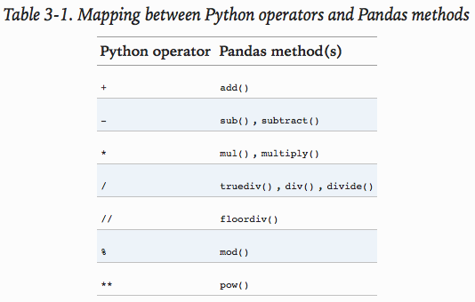
Ufuncs: Operations Between DataFrame and Series
When performing operations between a DataFrame and a Series, the index and column alignment is similarly maintained. Operations between a DataFrame and a Series are similar to operations between a two-dimensional and one-dimensional NumPy array. Consider one common operation, where we find the difference of a two-dimensional array and one of its rows:
A = rng.randint(10, size=(3, 4))
A
>>>>
array([[2, 0, 2, 4],
[2, 0, 4, 9],
[6, 6, 8, 9]])
A - A[0]
>>>>
array([[0, 0, 0, 0],
[0, 0, 2, 5],
[4, 6, 6, 5]])
[ME: ==begin==]
How to operate on columns of a np two-dimensional array?
A_t = A.transpose()
(A_t - A_t[0]).transpose()
>>>>
array([[ 0, -3, 1, -2],
[ 0, 3, -4, 0],
[ 0, -3, -4, 0]])
Or (better):
A - A[:, 0][:, np.newaxis]
>>>>
array([[ 0, -3, 1, -2],
[ 0, 3, -4, 0],
[ 0, -3, -4, 0]])
[ME: ==end==]
According to NumPy's broadcasting rules (see Computation on Arrays: Broadcasting), subtraction between a two-dimensional array and one of its rows is applied row-wise.
In Pandas, the convention similarly operates row-wise by default:
df = pd.DataFrame(A, columns=list('QRST')) print(df - df.iloc[0]) >>>> Q R S T 0 0 0 0 0 1 0 0 2 5 2 4 6 6 5
[ME: list('QRST') >> ['Q', 'R', 'S', 'T'] ]
If you would instead like to operate column-wise, you can use the object methods mentioned earlier, while specifying the axis keyword:
print(df.subtract(df['R'], axis=0)) >>>> Q R S T 0 2 0 2 4 1 2 0 4 9 2 0 0 2 3
Note that these DataFrame/Series operations, like the operations discussed above, will automatically align indices between the two elements:
halfrow = df.iloc[0, ::2] halfrow >>>> Q 2 S 2 print(df) >>>> Q R S T 0 2 0 2 4 1 2 0 4 9 2 6 6 8 9 df - halfrow >>>> Q R S T 0 0.0 NaN 0.0 NaN 1 0.0 NaN 2.0 NaN 2 4.0 NaN 6.0 NaN
This preservation and alignment of indices and columns means that operations on data in Pandas will always maintain the data context, which prevents the types of silly errors that might come up when working with heterogeneous and/or misaligned data in raw NumPy arrays.
3.4 Handling Missing Data
The difference between data found in many tutorials and data in the real world is that real-world data is rarely clean and homogeneous. In particular, many interesting datasets will have some amount of data missing. To make matters even more complicated, different data sources may indicate missing data in different ways.
In this section, we will discuss some general considerations for missing data, discuss how Pandas chooses to represent it, and demonstrate some built-in Pandas tools for handling missing data in Python. Here and throughout the book, we'll refer to missing data in general as null, NaN, or NA values.
Trade-Offs in Missing Data Conventions
There are a number of schemes that have been developed to indicate the presence of missing data in a table or DataFrame.
Generally, they revolve around one of two strategies: using a mask that globally indicates missing values, or choosing a sentinel value that indicates a missing entry.
- In the masking approach, the mask might be an entirely separate Boolean array, or it may involve appropriation of one bit in the data representation to locally indicate the null status of a value.
- In the sentinel approach, the sentinel value could be some data-specific convention, such as indicating a missing integer value with -9999 or some rare bit pattern, or it could be a more global convention, such as indicating a missing floating-point value with NaN (Not a Number), a special value which is part of the IEEE floating-point specification.
None of these approaches is without trade-offs:
- use of a separate mask array requires allocation of an additional Boolean array, which adds overhead in both storage and computation.
- A sentinel value reduces the range of valid values that can be represented, and may require extra (often non-optimized) logic in CPU and GPU arithmetic. Common special values like NaN are not available for all data types.
As in most cases where no universally optimal choice exists, different languages and systems use different conventions.
For example, the R language uses reserved bit patterns within each data type as sentinel values indicating missing data, while the SciDB system uses an extra byte attached to every cell which indicates a NA state.
Missing Data in Pandas
The way in which Pandas handles missing values is constrained by its reliance on the NumPy package, which does not have a built-in notion of NA values for non-floating-point data types.
Pandas could have followed R's lead in specifying bit patterns for each individual data type to indicate nullness, but this approach turns out to be rather unwieldy.
- While R contains four basic data types, NumPy supports far more than this: for example, while R has a single integer type, NumPy supports fourteen basic integer types once you account for available precisions, signedness, and endianness of the encoding.
- Reserving a specific bit pattern in all available NumPy types would lead to an unwieldy amount of overhead in special-casing various operations for various types, likely even requiring a new fork of the NumPy package. Further, for the smaller data types (such as 8-bit integers), sacrificing a bit to use as a mask will significantly reduce the range of values it can represent.
NumPy does have support for masked arrays – that is, arrays that have a separate Boolean mask array attached for marking data as "good" or "bad." Pandas could have derived from this, but the overhead in both storage, computation, and code maintenance makes that an unattractive choice.
With these constraints in mind, Pandas chose to use sentinels for missing data, and further chose to use two already-existing Python null values: the special floating-point NaN value, and the Python None object. This choice has some side effects, as we will see, but in practice ends up being a good compromise in most cases of interest.
None: Pythonic missing data
The first sentinel value used by Pandas is None, a Python singleton object that is often used for missing data in Python code. Because it is a Python object, None cannot be used in any arbitrary NumPy/Pandas array, but only in arrays with data type ='object'= (i.e., arrays of Python objects):
import numpy as np import pandas as pd vals1 = np.array([1, None, 3, 4]) vals1 >>>> array([1, None, 3, 4], dtype=object)
This dtype=object means that the best common type representation NumPy could infer for the contents of the array is that they are Python objects.
While this kind of object array is useful for some purposes, any operations on the data will be done at the Python level, with much more overhead than the typically fast operations seen for arrays with native types:
for dtype in ['object', 'int']: print("dtype =", dtype) %timeit np.arange(1E6, dtype=dtype).sum() print() >>>> dtype = object 10 loops, best of 3: 104 ms per loop dtype = int 100 loops, best of 3: 4.18 ms per loop
The use of Python objects in an array also means that if you perform aggregations like sum() or min() across an array with a None value, you will generally get an error:
vals1.sum() >>>> TypeError: unsupported operand type(s) for +: 'int' and 'NoneType'
This reflects the fact that addition between an integer and None is undefined.
NaN: Missing numerical data
The other missing data representation, NaN (acronym for Not a Number), is different; it is a special floating-point value recognized by all systems that use the standard IEEE floating-point representation:
vals2 = np.array([1, np.nan, 3, 4]) vals2.dtype >>>> dtype('float64')
Notice that NumPy chose a native floating-point type for this array: this means that unlike the object array from before, this array supports fast operations pushed into compiled code.
You should be aware that NaN is a bit like a data virus–it infects any other object it touches.
Regardless of the operation, the result of arithmetic with NaN will be another NaN:
1 + np.nan >>>> nan 0 * np.nan >>>> nan
Note that this means that aggregates over the values are well defined (i.e., they don't result in an error) but not always useful:
vals2.sum(), vals2.min(), vals2.max() >>>> (nan, nan, nan)
NumPy does provide some special aggregations that will ignore these missing values:
np.nansum(vals2), np.nanmin(vals2), np.nanmax(vals2) >>>> (8.0, 1.0, 4.0)
Keep in mind that NaN is specifically a floating-point value; there is no equivalent NaN value for integers, strings, or other types.
NaN and None in Pandas
NaN and None both have their place, and Pandas is built to handle the two of them nearly interchangeably, converting between them where appropriate:
pd.Series([1, np.nan, 2, None])
>>>>
0 1.0
1 NaN
2 2.0
3 NaN
dtype: float64
For types that don't have an available sentinel value, Pandas automatically type-casts when NA values are present.
For example, if we set a value in an integer array to np.nan, it will automatically be upcast to a floating-point type to accommodate the NA:
x = pd.Series(range(2), dtype=int) x >>>> 0 0 1 1 dtype: int64 x[0] = None x >>>> 0 NaN 1 1.0 dtype: float64
Notice that in addition to casting the integer array to floating point, Pandas automatically converts the None to a NaN value. (Be aware that there is a proposal to add a native integer NA to Pandas in the future; as of this writing, it has not been included).
While this type of magic may feel a bit hackish compared to the more unified approach to NA values in domain-specific languages like R, the Pandas sentinel/casting approach works quite well in practice and in my experience only rarely causes issues.
The following table lists the upcasting conventions in Pandas when NA values are introduced:
| Typeclass | Conversion When Storing NAs | NA Sentinel Value |
|---|---|---|
floating |
No change | np.nan |
object |
No change | None or np.nan |
integer |
Cast to float64 |
np.nan |
boolean |
Cast to object |
None or np.nan |
Keep in mind that in Pandas, string data is always stored with an object dtype.
Operating on Null Values
As we have seen, Pandas treats None and NaN as essentially interchangeable for indicating missing or null values. To facilitate this convention, there are several useful methods for detecting, removing, and replacing null values in Pandas data structures.
They are:
isnull(): Generate a boolean mask indicating missing valuesnotnull(): Opposite ofisnull()dropna(): Return a filtered version of the datafillna(): Return a copy of the data with missing values filled or imputed
We will conclude this section with a brief exploration and demonstration of these routines.
Detecting null values
Pandas data structures have two useful methods for detecting null data: isnull() and notnull().
Either one will return a Boolean mask over the data. For example:
data = pd.Series([1, np.nan, 'hello', None]) data.isnull() >>>> 0 False 1 True 2 False 3 True dtype: bool
As mentioned in [Data Indexing and Selection](03.02-Data-Indexing-and-Selection.ipynb), Boolean masks can be used directly as a Series or DataFrame index:
data[data.notnull()]
>>>>
0 1
2 hello
dtype: object
The isnull() and notnull() methods produce similar Boolean results for =DataFrame=s.
Dropping null values
In addition to the masking used before, there are the convenience methods, dropna() (which removes NA values) and fillna() (which fills in NA values). For a Series, the result is straightforward:
data.dropna()
>>>>
0 1
2 hello
dtype: object
For a DataFrame, there are more options. Consider the following DataFrame:
df = pd.DataFrame([[1, np.nan, 2],
[2, 3, 5],
[np.nan, 4, 6]])
df
>>>>
0 1 2
0 1.0 NaN 2
1 2.0 3.0 5
2 NaN 4.0 6
We cannot drop single values from a DataFrame; we can only drop full rows or full columns. Depending on the application, you might want one or the other, so dropna() gives a number of options for a DataFrame.
By default, dropna() will drop all rows in which any null value is present:
df.dropna()
>>>
0 1 2
1 2.0 3.0 5
Alternatively, you can drop NA values along a different axis; axis=1 drops all columns containing a null value:
df.dropna(axis='columns')
>>>>
2
0 2
1 5
2 6
But this drops some good data as well; you might rather be interested in dropping rows or columns with all NA values, or a majority of NA values. This can be specified through the how or thresh parameters, which allow fine control of the number of nulls to allow through.
The default is how'any'=, such that any row or column (depending on the axis keyword) containing a null value will be dropped. You can also specify how'all'=, which will only drop rows/columns that are all null values:
df[3] = np.nan print(df) >>>> 0 1 2 3 0 1.0 NaN 2 NaN 1 2.0 3.0 5 NaN 2 NaN 4.0 6 NaN print(df.dropna(axis='columns', how='all')) >>>> 0 1 2 0 1.0 NaN 2 1 2.0 3.0 5 2 NaN 4.0 6
For finer-grained control, the thresh parameter lets you specify a minimum number of non-null values for the row/column to be kept:
print(df.dropna(axis='rows', thresh=3)) >>>> 0 1 2 3 1 2.0 3.0 5 NaN
Filling null values
Sometimes rather than dropping NA values, you'd rather replace them with a valid value. This value might be a single number like zero, or it might be some sort of imputation or interpolation from the good values.
[ME: 统计学术语 refer to http://blog.sciencenet.cn/blog-81613-798156.html]
You could do this in-place using the isnull() method as a mask, but because it is such a common operation Pandas provides the fillna() method, which returns a copy of the array with the null values replaced.
Consider the following Series:
data = pd.Series([1, np.nan, 2, None, 3], index=list('abcde')) data >>>> a 1.0 b NaN c 2.0 d NaN e 3.0 dtype: float64
We can fill NA entries with a single value, such as zero:
data.fillna(0) >>>> a 1.0 b 0.0 c 2.0 d 0.0 e 3.0 dtype: float64
We can specify a forward-fill to propagate the previous value forward:
# forward-fill data.fillna(method='ffill') >>>> a 1.0 b 1.0 c 2.0 d 2.0 e 3.0 dtype: float64
Or we can specify a back-fill to propagate the next values backward:
# back-fill data.fillna(method='bfill') >>>> a 1.0 b 2.0 c 2.0 d 3.0 e 3.0 dtype: float64
For DataFrame=s, the options are similar, but we can also specify an =axis along which the fills take place:
df
>>>>
0 1 2 3
0 1.0 NaN 2 NaN
1 2.0 3.0 5 NaN
2 NaN 4.0 6 NaN
df.fillna(method='ffill', axis=1)
>>>>
0 1 2 3
0 1.0 1.0 2.0 2.0
1 2.0 3.0 5.0 5.0
2 NaN 4.0 6.0 6.0
Notice that if a previous value is not available during a forward fill, the NA value remains.
3.5 Hierarchical Indexing
Up to this point we've been focused primarily on one-dimensional and two-dimensional data, stored in Pandas Series and DataFrame objects, respectively.
Often it is useful to go beyond this and store higher-dimensional data–that is, data indexed by more than one or two keys.
While Pandas does provide Panel and Panel4D objects that natively handle three-dimensional and four-dimensional data (see [Aside: Panel Data](#Aside:-Panel-Data)), a far more common pattern in practice is to make use of hierarchical indexing (also known as multi-indexing) to incorporate multiple index levels within a single index.
In this way, higher-dimensional data can be compactly represented within the familiar one-dimensional Series and two-dimensional DataFrame objects.
In this section, we'll explore the direct creation of MultiIndex objects, considerations when indexing, slicing, and computing statistics across multiply indexed data, and useful routines for converting between simple and hierarchically indexed representations of your data.
We begin with the standard imports:
import pandas as pd import numpy as np
A Multiply Indexed Series
Let's start by considering how we might represent two-dimensional data within a one-dimensional Series. For concreteness, we will consider a series of data where each point has a character and numerical key.
The bad way
Suppose you would like to track data about states from two different years. Using the Pandas tools we've already covered, you might be tempted to simply use Python tuples as keys:
index = [('California', 2000), ('California', 2010), ('New York', 2000), ('New York', 2010), ('Texas', 2000), ('Texas', 2010)] populations = [33871648, 37253956, 18976457, 19378102, 20851820, 25145561] pop = pd.Series(populations, index=index) pop >>>> (California, 2000) 33871648 (California, 2010) 37253956 (New York, 2000) 18976457 (New York, 2010) 19378102 (Texas, 2000) 20851820 (Texas, 2010) 25145561 dtype: int64
With this indexing scheme, you can straightforwardly index or slice the series based on this multiple index:
pop[('California', 2010):('Texas', 2000)] >>>> (California, 2010) 37253956 (New York, 2000) 18976457 (New York, 2010) 19378102 (Texas, 2000) 20851820 dtype: int64
But the convenience ends there. For example, if you need to select all values from 2010, you'll need to do some messy (and potentially slow) munging to make it happen:
pop[[i for i in pop.index if i[1] == 2010]] >>>> (California, 2010) 37253956 (New York, 2010) 19378102 (Texas, 2010) 25145561 dtype: int64
This produces the desired result, but is not as clean (or as efficient for large datasets) as the slicing syntax we've grown to love in Pandas.
The Better Way: Pandas MultiIndex
Fortunately, Pandas provides a better way.
Our tuple-based indexing is essentially a rudimentary multi-index, and the Pandas MultiIndex type gives us the type of operations we wish to have.
We can create a multi-index from the tuples as follows:
index = pd.MultiIndex.from_tuples(index) index >>>> MultiIndex(levels=[['California', 'New York', 'Texas'], [2000, 2010]], labels=[[0, 0, 1, 1, 2, 2], [0, 1, 0, 1, 0, 1]])
Notice that the MultiIndex contains multiple levels of indexing–in this case, the state names and the years, as well as multiple labels for each data point which encode these levels.
If we re-index our series with this MultiIndex, we see the hierarchical representation of the data:
pop = pop.reindex(index)
pop
>>>>
California 2000 33871648
2010 37253956
New York 2000 18976457
2010 19378102
Texas 2000 20851820
2010 25145561
dtype: int64
Here the first two columns of the Series representation show the multiple index values, while the third column shows the data.
Notice that some entries are missing in the first column: in this multi-index representation, any blank entry indicates the same value as the line above it.
Now to access all data for which the second index is 2010, we can simply use the Pandas slicing notation:
pop[:, 2010] >>>> California 37253956 New York 19378102 Texas 25145561 dtype: int64
The result is a singly indexed array with just the keys we're interested in.
This syntax is much more convenient (and the operation is much more efficient!) than the home-spun tuple-based multi-indexing solution that we started with.
We'll now further discuss this sort of indexing operation on hieararchically indexed data.
MultiIndex as extra dimension
You might notice something else here: we could easily have stored the same data using a simple DataFrame with index and column labels.
In fact, Pandas is built with this equivalence in mind. The unstack() method will quickly convert a multiply indexed Series into a conventionally indexed DataFrame:
pop_df = pop.unstack() print(pop_df) >>>> 2000 2010 California 33871648 37253956 New York 18976457 19378102 Texas 20851820 25145561
Naturally, the stack() method provides the opposite operation:
pop_df.stack()
>>>>
California 2000 33871648
2010 37253956
New York 2000 18976457
2010 19378102
Texas 2000 20851820
2010 25145561
dtype: int64
Seeing this, you might wonder why would we would bother with hierarchical indexing at all.
The reason is simple: just as we were able to use multi-indexing to represent two-dimensional data within a one-dimensional Series, we can also use it to represent data of three or more dimensions in a Series or DataFrame.
Each extra level in a multi-index represents an extra dimension of data; taking advantage of this property gives us much more flexibility in the types of data we can represent. Concretely, we might want to add another column of demographic data for each state at each year (say, population under 18) ; with a MultiIndex this is as easy as adding another column to the DataFrame:
pop_df = pd.DataFrame({'total': pop, 'under18': [9267089, 9284094, 4687374, 4318033, 5906301, 6879014]}) print(pop_df) >>>> total under18 California 2000 33871648 9267089 2010 37253956 9284094 New York 2000 18976457 4687374 2010 19378102 4318033 Texas 2000 20851820 5906301 2010 25145561 6879014
In addition, all the ufuncs and other functionality discussed in [Operating on Data in Pandas](03.03-Operations-in-Pandas.ipynb) work with hierarchical indices as well.
Here we compute the fraction of people under 18 by year, given the above data:
f_u18 = pop_df['under18'] / pop_df['total'] print(f_u18.unstack()) >>>> 2000 2010 California 0.273594 0.249211 New York 0.247010 0.222831 Texas 0.283251 0.273568
This allows us to easily and quickly manipulate and explore even high-dimensional data.
Methods of MultiIndex Creation
The most straightforward way to construct a multiply indexed Series or DataFrame is to simply pass a list of two or more index arrays to the constructor. For example:
df = pd.DataFrame(np.random.rand(4, 2), index=[['a', 'a', 'b', 'b'], [1, 2, 1, 2]], columns=['data1', 'data2']) print(df) >>>> data1 data2 a 1 0.559517 0.955200 2 0.299905 0.888288 b 1 0.203078 0.452074 2 0.565793 0.261921
The work of creating the MultiIndex is done in the background.
Similarly, if you pass a dictionary with appropriate tuples as keys, Pandas will automatically recognize this and use a MultiIndex by default:
data = {('California', 2000): 33871648, ('California', 2010): 37253956, ('Texas', 2000): 20851820, ('Texas', 2010): 25145561, ('New York', 2000): 18976457, ('New York', 2010): 19378102} pd.Series(data) >>>> California 2000 33871648 2010 37253956 New York 2000 18976457 2010 19378102 Texas 2000 20851820 2010 25145561 dtype: int64
Nevertheless, it is sometimes useful to explicitly create a MultiIndex; we'll see a couple of these methods here.
Explicit MultiIndex constructors
For more flexibility in how the index is constructed, you can instead use the class method constructors available in the pd.MultiIndex.
For example, as we did before, you can construct the MultiIndex from a simple list of arrays giving the index values within each level:
pd.MultiIndex.from_arrays([['a', 'a', 'b', 'b'], [1, 2, 1, 2]]) >>>> MultiIndex(levels=[['a', 'b'], [1, 2]], labels=[[0, 0, 1, 1], [0, 1, 0, 1]])
You can construct it from a list of tuples giving the multiple index values of each point:
pd.MultiIndex.from_tuples([('a', 1), ('a', 2), ('b', 1), ('b', 2)]) >>>> MultiIndex(levels=[['a', 'b'], [1, 2]], labels=[[0, 0, 1, 1], [0, 1, 0, 1]])
You can even construct it from a Cartesian product of single indices:
pd.MultiIndex.from_product([['a', 'b'], [1, 2]]) >>>> MultiIndex(levels=[['a', 'b'], [1, 2]], labels=[[0, 0, 1, 1], [0, 1, 0, 1]])
[ME: I prefer to use Cartesian product!]
Similarly, you can construct the MultiIndex directly using its internal encoding by passing levels (a list of lists containing available index values for each level) and labels (a list of lists that reference these labels):
pd.MultiIndex(levels=[['a', 'b'], [1, 2]], labels=[[0, 0, 1, 1], [0, 1, 0, 1]]) >>>> MultiIndex(levels=[['a', 'b'], [1, 2]], labels=[[0, 0, 1, 1], [0, 1, 0, 1]])
Any of these objects can be passed as the index argument when creating a Series or Dataframe, or be passed to the reindex method of an existing Series or DataFrame.
MultiIndex level names
Sometimes it is convenient to name the levels of the MultiIndex.
This can be accomplished by passing the names argument to any of the above MultiIndex constructors, or by setting the names attribute of the index after the fact:
print(pop) pop.index.names = ['state', 'year'] pop >>>> California 2000 33871648 2010 37253956 New York 2000 18976457 2010 19378102 Texas 2000 20851820 2010 25145561 dtype: int64 state year California 2000 33871648 2010 37253956 New York 2000 18976457 2010 19378102 Texas 2000 20851820 2010 25145561 dtype: int64
With more involved datasets, this can be a useful way to keep track of the meaning of various index values.
MultiIndex for columns
In a DataFrame, the rows and columns are completely symmetric, and just as the rows can have multiple levels of indices, the columns can have multiple levels as well.
Consider the following, which is a mock-up of some (somewhat realistic) medical data:
# hierarchical indices and columns index = pd.MultiIndex.from_product([[2013, 2014], [1, 2]], names=['year', 'visit']) columns = pd.MultiIndex.from_product([['Bob', 'Guido', 'Sue'], ['HR', 'Temp']], names=['subject', 'type']) # mock some data data = np.round(np.random.randn(4, 6), 1) data[:, ::2] *= 10 data += 37 # create the DataFrame health_data = pd.DataFrame(data, index=index, columns=columns) health_data
Output:
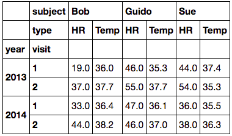
Here we see where the multi-indexing for both rows and columns can come in very handy.
This is fundamentally four-dimensional data, where the dimensions are the subject, the measurement type, the year, and the visit number.
With this in place we can, for example, index the top-level column by the person's name and get a full DataFrame containing just that person's information:
health_data['Guido'] >>>> type HR Temp year visit 2013 1 46.0 35.3 2 55.0 37.7 2014 1 47.0 36.1 2 46.0 37.0 print(health_data['Guido']['HR']) >>>> year visit 2013 1 46.0 2 55.0 2014 1 47.0 2 46.0 Name: HR, dtype: float64
For complicated records containing multiple labeled measurements across multiple times for many subjects (people, countries, cities, etc.) use of hierarchical rows and columns can be extremely convenient!
Indexing and Slicing a MultiIndex
Indexing and slicing on a MultiIndex is designed to be intuitive, and it helps if you think about the indices as added dimensions.
We'll first look at indexing multiply indexed Series, and then multiply-indexed =DataFrame=s.
Multiply indexed Series
Consider the multiply indexed Series of state populations we saw earlier:
pop
>>>>
State Year
California 2000 33871648
2010 37253956
New York 2000 18976457
2010 19378102
Texas 2000 20851820
2010 25145561
dtype: int64
We can access single elements by indexing with multiple terms:
pop['California', 2000]
>>>> 33871648
The MultiIndex also supports partial indexing, or indexing just one of the levels in the index.
The result is another Series, with the lower-level indices maintained:
pop['California']
>>>>
year
2000 33871648
2010 37253956
dtype: int64
Partial slicing is available as well, as long as the MultiIndex is sorted (see discussion in [Sorted and Unsorted Indices](Sorted-and-Unsorted-Indices)):
pop.loc['California':'New York'] >>>> state year California 2000 33871648 2010 37253956 New York 2000 18976457 2010 19378102 dtype: int64
With sorted indices, partial indexing can be performed on lower levels by passing an empty slice in the first index: [ME: lower indices - 低阶索引，即下层的索引，例如二维数组的第二维度]
pop[:, 2000] >>>> state California 33871648 New York 18976457 Texas 20851820 dtype: int64
Other types of indexing and selection (discussed in [Data Indexing and Selection](03.02-Data-Indexing-and-Selection.ipynb)) work as well; for example, selection based on Boolean masks:
pop[pop > 22000000]
>>>>
State Year
California 2000 33871648
2010 37253956
Texas 2010 25145561
dtype: int64
Selection based on fancy indexing also works:
pop[['California', 'Texas']] >>>> State Year California 2000 33871648 2010 37253956 Texas 2000 20851820 2010 25145561 dtype: int64
Multiply indexed DataFrames
A multiply indexed DataFrame behaves in a similar manner.
Consider our toy medical DataFrame from before:
print(health_data) >>>> subject Bob Guido Sue type HR Temp HR Temp HR Temp year visit 2013 1 19.0 36.0 46.0 35.3 44.0 37.4 2 37.0 37.7 55.0 37.7 54.0 35.3 2014 1 33.0 36.4 47.0 36.1 36.0 35.5 2 44.0 38.2 46.0 37.0 38.0 36.3
Remember that columns are primary in a DataFrame, and the syntax used for multiply indexed Series applies to the columns. [ME: 先使用 index 获取 Series，然后从 Series 里获取其他数据]
For example, we can recover Guido's heart rate data with a simple operation:
health_data['Guido', 'HR'] >>>> year visit 2013 1 36.0 2 41.0 2014 1 47.0 2 47.0 Name: (Guido, HR), dtype: float64
[ME: 注意 healthdata 的两个 MultiIndex, refer to MultiIndex for columns. 使用 index 只能针对同一个 MultiIndex 里的 index 及其顺序，例如上例和下例]
health_data['Guido', 'HR'][2013, 1] >>>> 46.0
Also, as with the single-index case, we can use the loc, iloc, and ix indexers introduced in [Data Indexing and Selection](03.02-Data-Indexing-and-Selection.ipynb). For example:
health_data.iloc[:2, :2]
>>>>
subject Bob
type HR Temp
year visit
2013 1 19.0 36.0
2 37.0 37.7
[ME: loc 横切，index 竖切！]
health_data.loc[2013, 'Bob'] >>>> type HR Temp visit 1 19.0 36.0 2 37.0 37.7
These indexers provide an array-like view of the underlying two-dimensional data, but each individual index in loc or iloc can be passed a tuple of multiple indices. For example:
health_data.loc[:, ('Bob', 'HR')] >>>> year visit 2013 1 19.0 2 37.0 2014 1 33.0 2 44.0 Name: (Bob, HR), dtype: float64 health_data.loc[(2013, 1), ('Bob', 'HR')] >>>>19.0
Working with slices within these index tuples is not especially convenient; trying to create a slice within a tuple will lead to a syntax error:
health_data.loc[(:, 1), (:, 'HR')] >>>> File "<ipython-input-32-8e3cc151e316>", line 1 health_data.loc[(:, 1), (:, 'HR')] ^ SyntaxError: invalid syntax
You could get around this by building the desired slice explicitly using Python's built-in slice() function, but a better way in this context is to use an IndexSlice object, which Pandas provides for precisely this situation.
For example:
idx = pd.IndexSlice print(health_data.loc[idx[:, 1], idx[:, 'HR']]) >>>> subject Bob Guido Sue type HR HR HR year visit 2013 1 19.0 46.0 44.0 2014 1 33.0 47.0 36.0
There are so many ways to interact with data in multiply indexed Series and =DataFrame=s, and as with many tools in this book the best way to become familiar with them is to try them out!
Rearranging Multi-Indices
One of the keys to working with multiply indexed data is knowing how to effectively transform the data.
There are a number of operations that will preserve all the information in the dataset, but rearrange it for the purposes of various computations.
We saw a brief example of this in the stack() and unstack() methods, but there are many more ways to finely control the rearrangement of data between hierarchical indices and columns, and we'll explore them here.
Sorted and unsorted indices
Earlier, we briefly mentioned a caveat, but we should emphasize it more here.
Many of the MultiIndex slicing operations will fail if the index is not sorted.
Let's take a look at this here.
We'll start by creating some simple multiply indexed data where the indices are not lexographically sorted:
index = pd.MultiIndex.from_product([['a', 'c', 'b'], [1, 2]]) data = pd.Series(np.random.rand(6), index=index) data.index.names = ['char', 'int'] data >>>> char int a 1 0.291603 2 0.295967 c 1 0.671652 2 0.910090 b 1 0.715857 2 0.411220 dtype: float64
If we try to take a partial slice of this index, it will result in an error:
try: data['a':'b'] except KeyError as e: print(type(e)) print(e) >>>> <class 'KeyError'> 'Key length (1) was greater than MultiIndex lexsort depth (0)'
Although it is not entirely clear from the error message, this is the result of the MultiIndex not being sorted.
For various reasons, partial slices and other similar operations require the levels in the MultiIndex to be in sorted (i.e., lexographical) order.
Pandas provides a number of convenience routines to perform this type of sorting; examples are the sort_index() and sortlevel() methods of the DataFrame.
We'll use the simplest, sort_index(), here:
data = data.sort_index() data >>>> char int a 1 0.291603 2 0.295967 b 1 0.715857 2 0.411220 c 1 0.671652 2 0.910090 dtype: float64
With the index sorted in this way, partial slicing will work as expected:
data['a':'b'] >>>> char int a 1 0.291603 2 0.295967 b 1 0.715857 2 0.411220 dtype: float64
Stacking and unstacking indices
As we saw briefly before, it is possible to convert a dataset from a stacked multi-index to a simple two-dimensional representation, optionally specifying the level to use:
pop
>>>>
State Year
California 2000 33871648
2010 37253956
New York 2000 18976457
2010 19378102
Texas 2000 20851820
2010 25145561
dtype: int64
# [ME: index[0] is transformed to Series]
print(pop.unstack(level=0))
>>>>
State California New York Texas
Year
2000 33871648 18976457 20851820
2010 37253956 19378102 25145561
# [ME: index[1] is transformed to Series]
print(pop.unstack(level=1)) # [ME: the same as pop.stack()]
>>>>
Year 2000 2010
State
California 33871648 37253956
New York 18976457 19378102
Texas 20851820 25145561
The opposite of unstack() is stack(), which here can be used to recover the original series:
pop.unstack().stack()
>>>>
State Year
California 2000 33871648
2010 37253956
New York 2000 18976457
2010 19378102
Texas 2000 20851820
2010 25145561
dtype: int64
# [ME: pay attention to the result!]
pop.unstack(level=0).stack()
>>>>
Year State
2000 California 33871648
New York 18976457
Texas 20851820
2010 California 37253956
New York 19378102
Texas 25145561
dtype: int64
Index setting and resetting
Another way to rearrange hierarchical data is to turn the index labels into columns; this can be accomplished with the reset_index method.
Calling this on the population dictionary will result in a DataFrame with a state and year column holding the information that was formerly in the index.
For clarity, we can optionally specify the name of the data for the column representation:
# type(pop) == Series pop_flat = pop.reset_index(name='population') print(pop_flat) type(pop_flat) >>>> State Year population 0 California 2000 33871648 1 California 2010 37253956 2 New York 2000 18976457 3 New York 2010 19378102 4 Texas 2000 20851820 5 Texas 2010 25145561 pandas.core.frame.DataFrame
Often when working with data in the real world, the raw input data looks like this and it's useful to build a MultiIndex from the column values.
This can be done with the set_index method of the DataFrame, which returns a multiply indexed DataFrame:
print(pop_flat.set_index(['State','Year'])) >>>> population State Year California 2000 33871648 2010 37253956 New York 2000 18976457 2010 19378102 Texas 2000 20851820 2010 25145561
Important: In practice, I find this type of reindexing to be one of the more useful patterns when encountering real-world datasets.
## Data Aggregations on Multi-Indices
We've previously seen that Pandas has built-in data aggregation methods, such as mean(), sum(), and max().
For hierarchically indexed data, these can be passed a level parameter that controls which subset of the data the aggregate is computed on.
For example, let's return to our health data:
print(health_data) >>>> subject Bob Guido Sue type HR Temp HR Temp HR Temp year visit 2013 1 38.0 35.9 22.0 38.0 24.0 37.8 2 24.0 36.3 51.0 38.2 49.0 39.9 2014 1 42.0 37.8 33.0 38.4 34.0 36.8 2 30.0 36.8 46.0 36.9 49.0 36.3
Perhaps we'd like to average-out the measurements in the two visits each year. We can do this by naming the index level we'd like to explore, in this case the year:
data_mean = health_data.mean(level='year') # [ME: equal to mean(axis=0, level='year')] data_mean >>>> subject Bob Guido Sue type HR Temp HR Temp HR Temp year 2013 31.0 36.1 36.5 38.10 36.5 38.85 2014 36.0 37.3 39.5 37.65 41.5 36.55 # [ME: change to the other level] data_mean = health_data.mean(level='visit') print(data_mean) >>>> subject Bob Guido Sue type HR Temp HR Temp HR Temp visit 1 40.0 36.85 27.5 38.20 29.0 37.3 2 27.0 36.55 48.5 37.55 49.0 38.1
By further making use of the axis keyword, we can take the mean among levels on the columns as well:
print(data_mean.mean(axis=1, level='type')) >>>> type HR Temp visit 1 32.166667 37.45 2 41.500000 37.40 # [ME: apply to the original health data] print(health_data.mean(axis=1, level='type')) >>>> type HR Temp year visit 2013 1 28.000000 37.233333 2 41.333333 38.133333 2014 1 36.333333 37.666667 2 41.666667 36.666667
Thus in two lines, we've been able to find the average heart rate and temperature measured among all subjects in all visits each year.
This syntax is actually a short cut to the GroupBy functionality, which we will discuss in [Aggregation and Grouping](03.08-Aggregation-and-Grouping.ipynb).
While this is a toy example, many real-world datasets have similar hierarchical structure.
Aside: Panel Data
Pandas has a few other fundamental data structures that we have not yet discussed, namely the pd.Panel and pd.Panel4D objects.
These can be thought of, respectively, as three-dimensional and four-dimensional generalizations of the (one-dimensional) Series and (two-dimensional) DataFrame structures.
Once you are familiar with indexing and manipulation of data in a Series and DataFrame, Panel and Panel4D are relatively straightforward to use.
In particular, the ix, loc, and iloc indexers discussed in [Data Indexing and Selection](03.02-Data-Indexing-and-Selection.ipynb) extend readily to these higher-dimensional structures.
We won't cover these panel structures further in this text, as I've found in the majority of cases that multi-indexing is a more useful and conceptually simpler representation for higher-dimensional data.
Additionally, panel data is fundamentally a dense data representation, while multi-indexing is fundamentally a sparse data representation.
Note: As the number of dimensions increases, the dense representation can become very inefficient for the majority of real-world datasets.
For the occasional specialized application, however, these structures can be useful.
If you'd like to read more about the Panel and Panel4D structures, see the references listed in [Further Resources](03.13-Further-Resources.ipynb).
3.6 Combining Datasets: Concat and Append
Some of the most interesting studies of data come from combining different data sources.
These operations can involve anything from very straightforward concatenation of two different datasets, to more complicated database-style joins and merges that correctly handle any overlaps between the datasets.
Series and =DataFrame=s are built with this type of operation in mind, and Pandas includes functions and methods that make this sort of data wrangling fast and straightforward.
Here we'll take a look at simple concatenation of Series and DataFrame=s with the =pd.concat function; later we'll dive into more sophisticated in-memory merges and joins implemented in Pandas.
We begin with the standard imports:
import pandas as pd import numpy as np
For convenience, we'll define this function which creates a DataFrame of a particular form that will be useful below:
def make_df(cols, ind): """Quickly make a DataFrame""" data = {c: [str(c) + str(i) for i in ind] for c in cols} return pd.DataFrame(data, ind) # example DataFrame print(make_df('ABC', range(3))) >>>> A B C 0 A0 B0 C0 1 A1 B1 C1 2 A2 B2 C2
In addition, we'll create a quick class that allows us to display multiple DataFrame=s side by side. The code makes use of the special =_repr_html_ method, which IPython uses to implement its rich object display:
class display(object): """Display HTML representation of multiple objects""" template = """<div style="float: left; padding: 10px;"> <p style='font-family:"Courier New", Courier, monospace'>{0}</p>{1} </div>""" def __init__(self, *args): self.args = args def _repr_html_(self): return '\n'.join(self.template.format(a, eval(a)._repr_html_()) for a in self.args) def __repr__(self): return '\n\n'.join(a + '\n' + repr(eval(a)) for a in self.args)
[ME: usage ==begin==]
(display("make_df('ABC', range(5))"))
[ME: ==end==]
Recall: Concatenation of NumPy Arrays
Concatenation of Series and DataFrame objects is very similar to concatenation of Numpy arrays, which can be done via the np.concatenate function as discussed in [The Basics of NumPy Arrays](02.02-The-Basics-Of-NumPy-Arrays.ipynb).
Recall that with it, you can combine the contents of two or more arrays into a single array:
x = [1, 2, 3] y = [4, 5, 6] z = [7, 8, 9] np.concatenate([x, y, z]) >>>> array([1, 2, 3, 4, 5, 6, 7, 8, 9])
The first argument is a list or tuple of arrays to concatenate.
Additionally, it takes an axis keyword that allows you to specify the axis along which the result will be concatenated:
x = [[1, 2], [3, 4]] np.concatenate([x, x], axis=1) >>>> array([[1, 2, 1, 2], [3, 4, 3, 4]]) x = [[1, 2], [3, 4]] np.concatenate([x, x], axis=0) >>>> array([[1, 2], [3, 4], [1, 2], [3, 4]])
Simple Concatenation with pd.concat
Pandas has a function, pd.concat(), which has a similar syntax to np.concatenate but contains a number of options that we'll discuss momentarily:
# Signature in Pandas v0.18 pd.concat(objs, axis=0, join='outer', join_axes=None, ignore_index=False, keys=None, levels=None, names=None, verify_integrity=False, copy=True)
pd.concat() can be used for a simple concatenation of Series or DataFrame objects, just as np.concatenate() can be used for simple concatenations of arrays:
ser1 = pd.Series(['A', 'B', 'C'], index=[1, 2, 3]) ser2 = pd.Series(['D', 'E', 'F'], index=[4, 5, 6]) pd.concat([ser1, ser2]) >>>> 1 A 2 B 3 C 4 D 5 E 6 F dtype: object
It also works to concatenate higher-dimensional objects, such as =DataFrame=s:
df1 = make_df('AB', [1, 2]) df2 = make_df('AB', [3, 4]) display('df1', 'df2', 'pd.concat([df1, df2])') # 03-06-figure-01
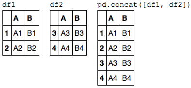
By default, the concatenation takes place row-wise within the DataFrame (i.e., axis=0).
Like np.concatenate, pd.concat allows specification of an axis along which concatenation will take place.
Consider the following example:
df3 = make_df('AB', [0, 1]) df4 = make_df('CD', [0, 1]) display('df3', 'df4', "pd.concat([df3, df4], axis='columns')") # 03-06-figure-02
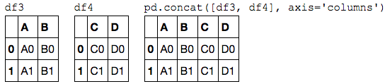
We could have equivalently specified axis=1; here we've used the more intuitive axis'columns'=.
Duplicate indices
One important difference between np.concatenate and pd.concat is that Pandas concatenation preserves indices, even if the result will have duplicate indices!
Consider this simple example:
ke_df('AB', [0, 1]) y = make_df('AB', [2, 3]) y.index = x.index # make duplicate indices! display('x', 'y', 'pd.concat([x, y])') # 03-06-figure-03
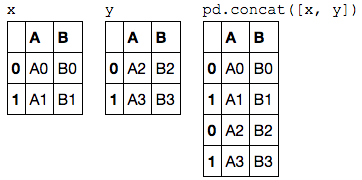
Notice the repeated indices in the result. While this is valid within =DataFrame=s, the outcome is often undesirable.
pd.concat() gives us a few ways to handle it.
Catching the repeats as an error
If you'd like to simply verify that the indices in the result of pd.concat() do not overlap, you can specify the verify_integrity flag.
With this set to True, the concatenation will raise an exception if there are duplicate indices.
Here is an example, where for clarity we'll catch and print the error message:
try: pd.concat([x, y], verify_integrity=True) except ValueError as e: print("ValueError:", e) >>>> ValueError: Indexes have overlapping values: [0, 1]
Ignoring the index
Sometimes the index itself does not matter, and you would prefer it to simply be ignored.
This option can be specified using the ignore_index flag.
With this set to true, the concatenation will create a new integer index for the resulting Series:
display('x', 'y', 'pd.concat([x, y], ignore_index=True)')
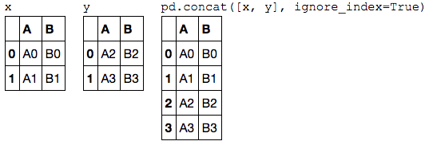
Adding MultiIndex keys
Another option is to use the keys option to specify a label for the data sources; the result will be a hierarchically indexed series containing the data:
display('x', 'y', "pd.concat([x, y], keys=['x', 'y'])")
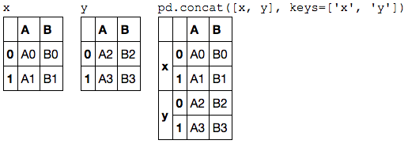
The result is a multiply indexed DataFrame, and we can use the tools discussed in [Hierarchical Indexing](03.05-Hierarchical-Indexing.ipynb) to transform this data into the representation we're interested in.
Concatenation with joins
In the simple examples we just looked at, we were mainly concatenating =DataFrame=s with shared column names.
In practice, data from different sources might have different sets of column names, and pd.concat offers several options in this case.
Consider the concatenation of the following two =DataFrame=s, which have some (but not all!) columns in common:
df5 = make_df('ABC', [1, 2]) df6 = make_df('BCD', [3, 4]) display('df5', 'df6', 'pd.concat([df5, df6])')
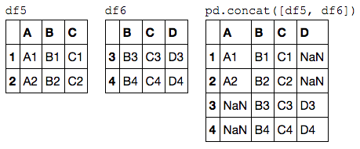
By default, the entries for which no data is available are filled with NA values.
To change this, we can specify one of several options for the join and join_axes parameters of the concatenate function.
By default, the join is a union of the input columns (join'outer'), but we can change this to an intersection of the columns using =join'inner'=:
display('df5', 'df6', "pd.concat([df5, df6], join='inner')")
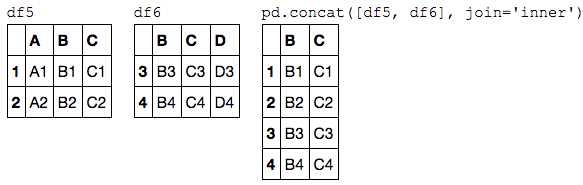
Another option is to directly specify the index of the remaininig columns using the join_axes argument, which takes a list of index objects.
Here we'll specify that the returned columns should be the same as those of the first input:
display('df5', 'df6', "pd.concat([df5, df6], join_axes=[df5.columns])")
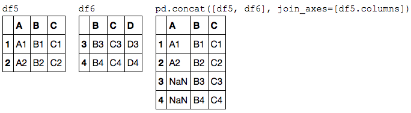
The combination of options of the pd.concat function allows a wide range of possible behaviors when joining two datasets; keep these in mind as you use these tools for your own data.
The append() method
Because direct array concatenation is so common, Series and DataFrame objects have an append method that can accomplish the same thing in fewer keystrokes.
For example, rather than calling pd.concat([df1, df2]), you can simply call df1.append(df2):
display('df1', 'df2', 'df1.append(df2)')
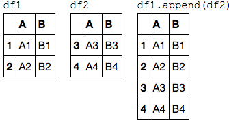
Keep in mind that unlike the append() and extend() methods of Python lists, the append() method in Pandas does not modify the original object–instead it creates a new object with the combined data.
It also is not a very efficient method, because it involves creation of a new index and data buffer.
Thus, if you plan to do multiple append operations, it is generally better to build a list of DataFrame=s and pass them all at once to the =concat() function.
In the next section, we'll look at another more powerful approach to combining data from multiple sources, the database-style merges/joins implemented in pd.merge.
For more information on concat(), append(), and related functionality, see the ["Merge, Join, and Concatenate" section](http://pandas.pydata.org/pandas-docs/stable/merging.html) of the Pandas documentation.
3.7 Combining Datasets: Merge and Join
One essential feature offered by Pandas is its high-performance, in-memory join and merge operations.
If you have ever worked with databases, you should be familiar with this type of data interaction.
The main interface for this is the pd.merge function, and we'll see few examples of how this can work in practice.
For convenience, we will start by redefining the display() functionality from the previous section:
import pandas as pd import numpy as np class display(object): """Display HTML representation of multiple objects""" template = """<div style="float: left; padding: 10px;"> <p style='font-family:"Courier New", Courier, monospace'>{0}</p>{1} </div>""" def __init__(self, *args): self.args = args def _repr_html_(self): return '\n'.join(self.template.format(a, eval(a)._repr_html_()) for a in self.args) def __repr__(self): return '\n\n'.join(a + '\n' + repr(eval(a)) for a in self.args)
Relational Algebra
The behavior implemented in pd.merge() is a subset of what is known as relational algebra, which is a formal set of rules for manipulating relational data, and forms the conceptual foundation of operations available in most databases.
The strength of the relational algebra approach is that it proposes several primitive operations, which become the building blocks of more complicated operations on any dataset.
With this lexicon of fundamental operations implemented efficiently in a database or other program, a wide range of fairly complicated composite operations can be performed.
Pandas implements several of these fundamental building-blocks in the pd.merge() function and the related join() method of Series and =Dataframe=s.
As we will see, these let you efficiently link data from different sources.
Categories of Joins
The pd.merge() function implements a number of types of joins:
- the one-to-one,
- many-to-one, and
- many-to-many joins.
All three types of joins are accessed via an identical call to the pd.merge() interface; the type of join performed depends on the form of the input data.
Here we will show simple examples of the three types of merges, and discuss detailed options further below.
One-to-one joins
Perhaps the simplest type of merge expresion is the one-to-one join, which is in many ways very similar to the column-wise concatenation seen in [Combining Datasets: Concat & Append](03.06-Concat-And-Append.ipynb).
As a concrete example, consider the following two DataFrames which contain information on several employees in a company:
df1 = pd.DataFrame({'employee': ['Bob', 'Jake', 'Lisa', 'Sue'], 'group': ['Accounting', 'Engineering', 'Engineering', 'HR']}) df2 = pd.DataFrame({'employee': ['Lisa', 'Bob', 'Jake', 'Sue'], 'hire_date': [2004, 2008, 2012, 2014]}) display('df1', 'df2')
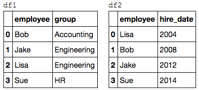
To combine this information into a single DataFrame, we can use the pd.merge() function:
df3 = pd.merge(df1, df2) display('df1', 'df2', 'df3')
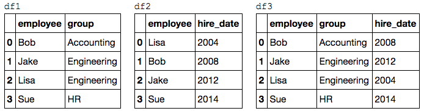
The pd.merge() function recognizes that each DataFrame has an "employee" column, and automatically joins using this column as a key.
The result of the merge is a new DataFrame that combines the information from the two inputs.
Notice that the order of entries in each column is not necessarily maintained: in this case, the order of the "employee" column differs between df1 and df2, and the pd.merge() function correctly accounts for this.
Additionally, keep in mind that the merge in general discards the index, except in the special case of merges by index (see the left_index and right_index keywords, discussed momentarily).
Many-to-one joins
Many-to-one joins are joins in which one of the two key columns contains duplicate entries.
For the many-to-one case, the resulting DataFrame will preserve those duplicate entries as appropriate.
Consider the following example of a many-to-one join:
df4 = pd.DataFrame({'group': ['Accounting', 'Engineering', 'HR'], 'supervisor': ['Carly', 'Guido', 'Steve']}) display('df3', 'df4', 'pd.merge(df3, df4)')
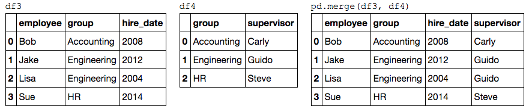
The resulting DataFrame has an aditional column with the "supervisor" information, where the information is repeated in one or more locations as required by the inputs.
Many-to-many joins
Many-to-many joins are a bit confusing conceptually, but are nevertheless well defined.
If the key column in both the left and right array contains duplicates, then the result is a many-to-many merge.
This will be perhaps most clear with a concrete example.
Consider the following, where we have a DataFrame showing one or more skills associated with a particular group.
By performing a many-to-many join, we can recover the skills associated with any individual person:
df5 = pd.DataFrame({'group': ['Accounting', 'Accounting', 'Engineering', 'Engineering', 'HR', 'HR'], 'skills': ['math', 'spreadsheets', 'coding', 'linux', 'spreadsheets', 'organization']}) display('df1', 'df5', "pd.merge(df1, df5)")
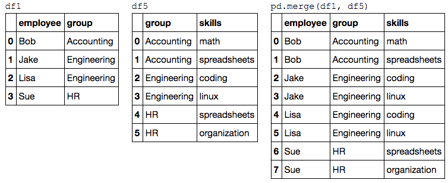
These three types of joins can be used with other Pandas tools to implement a wide array of functionality.
But in practice, datasets are rarely as clean as the one we're working with here.
In the following section we'll consider some of the options provided by pd.merge() that enable you to tune how the join operations work.
Specification of the Merge Key
We've already seen the default behavior of pd.merge(): it looks for one or more matching column names between the two inputs, and uses this as the key.
However, often the column names will not match so nicely, and pd.merge() provides a variety of options for handling this.
The on keyword
Most simply, you can explicitly specify the name of the key column using the on keyword, which takes a column name or a list of column names:
display('df1', 'df2', "pd.merge(df1, df2, on='employee')")
This option works only if both the left and right =DataFrame=s have the specified column name.
The left_on and right_on keywords
At times you may wish to merge two datasets with different column names; for example, we may have a dataset in which the employee name is labeled as "name" rather than "employee".
In this case, we can use the left_on and right_on keywords to specify the two column names:
df3 = pd.DataFrame({'name': ['Bob', 'Jake', 'Lisa', 'Sue'], 'salary': [70000, 80000, 120000, 90000]}) display('df1', 'df3', 'pd.merge(df1, df3, left_on="employee", right_on="name")')
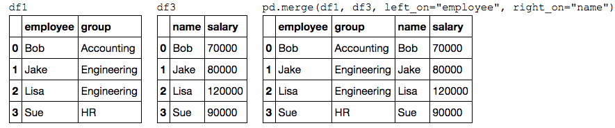
The result has a redundant column that we can drop if desired–for example, by using the drop() method of =DataFrame=s:
print(pd.merge(df1, df3, left_on="employee", right_on="name").drop('name', axis=1)) >>>> employee group salary 0 Bob Accounting 70000 1 Jake Engineering 80000 2 Lisa Engineering 120000 3 Sue HR 90000
The left_index and right_index keywords
Sometimes, rather than merging on a column, you would instead like to merge on an index.
For example, your data might look like this:
df1a = df1.set_index('employee') df2a = df2.set_index('employee') display('df1a', 'df2a')
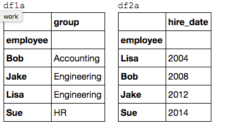
You can use the index as the key for merging by specifying the left_index and/or right_index flags in pd.merge():
display('df1a', 'df2a', "pd.merge(df1a, df2a, left_index=True, right_index=True)")
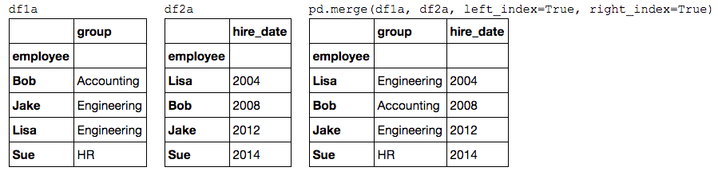
For convenience, DataFrame=s implement the =join() method, which performs a merge that defaults to joining on indices:
display('df1a', 'df2a', 'df1a.join(df2a)')
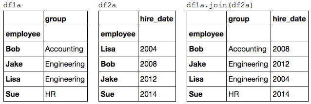
If you'd like to mix indices and columns, you can combine left_index with right_on or left_on with right_index to get the desired behavior:
display('df1a', 'df3', "pd.merge(df1a, df3, left_index=True, right_on='name')")
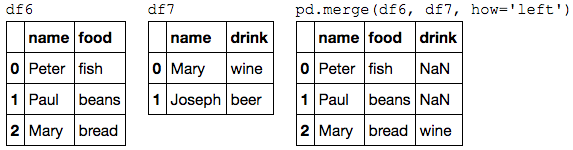
All of these options also work with multiple indices and/or multiple columns; the interface for this behavior is very intuitive.
For more information on this, see the ["Merge, Join, and Concatenate" section](http://pandas.pydata.org/pandas-docs/stable/merging.html) of the Pandas documentation.
Specifying Set Arithmetic for Joins
In all the preceding examples we have glossed over one important consideration in performing a join: the type of set arithmetic used in the join.
This comes up when a value appears in one key column but not the other. Consider this example:
df6 = pd.DataFrame({'name': ['Peter', 'Paul', 'Mary'], 'food': ['fish', 'beans', 'bread']}, columns=['name', 'food']) df7 = pd.DataFrame({'name': ['Mary', 'Joseph'], 'drink': ['wine', 'beer']}, columns=['name', 'drink']) display('df6', 'df7', 'pd.merge(df6, df7)')
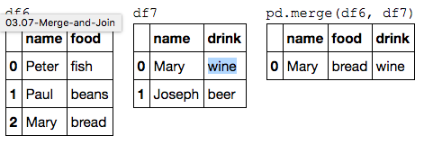
Here we have merged two datasets that have only a single "name" entry in common: Mary.
By default, the result contains the intersection of the two sets of inputs; this is what is known as an inner join.
We can specify this explicitly using the how keyword, which defaults to ="inner"=:
pd.merge(df6, df7, how='inner')
>>>>
name food drink
0 Mary bread wine
Other options for the how keyword are
- ='outer'=
- ='left'=
- ='right'=
An outer join returns a join over the union of the input columns, and fills in all missing values with NAs:
display('df6', 'df7', "pd.merge(df6, df7, how='outer')")
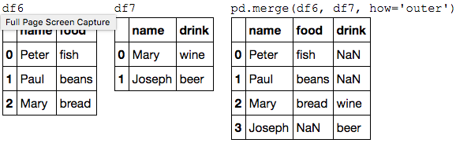
The left join and right join return joins over the left entries and right entries, respectively.
For example:
display('df6', 'df7', "pd.merge(df6, df7, how='left')")
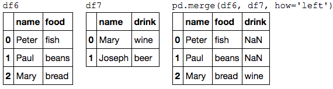
The output rows now correspond to the entries in the left input. Using how'right'= works in a similar manner.
All of these options can be applied straightforwardly to any of the preceding join types.
Overlapping Column Names: The suffixes Keyword
Finally, you may end up in a case where your two input =DataFrame=s have conflicting column names.
Consider this example:
df8 = pd.DataFrame({'name': ['Bob', 'Jake', 'Lisa', 'Sue'], 'rank': [1, 2, 3, 4]}) df9 = pd.DataFrame({'name': ['Bob', 'Jake', 'Lisa', 'Sue'], 'rank': [3, 1, 4, 2]}) display('df8', 'df9', 'pd.merge(df8, df9, on="name")')
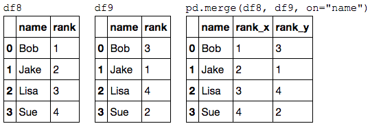
Because the output would have two conflicting column names, the merge function automatically appends a suffix _x or _y to make the output columns unique.
If these defaults are inappropriate, it is possible to specify a custom suffix using the suffixes keyword:
display('df8', 'df9', 'pd.merge(df8, df9, on="name", suffixes=["_L", "_R"])')
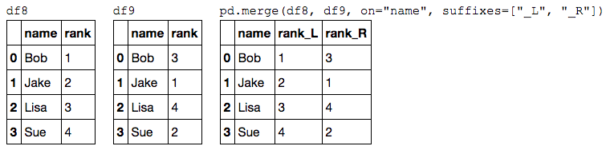
These suffixes work in any of the possible join patterns, and work also if there are multiple overlapping columns.
For more information on these patterns, see [Aggregation and Grouping](03.08-Aggregation-and-Grouping.ipynb) where we dive a bit deeper into relational algebra.
Also see the [Pandas "Merge, Join and Concatenate" documentation](http://pandas.pydata.org/pandas-docs/stable/merging.html) for further discussion of these topics.
Example: US States Data workflow best practice
Merge and join operations come up most often when combining data from different sources.
Here we will consider an example of some data about US states and their populations.
The data files can be found at http://github.com/jakevdp/data-USstates/:
# Following are shell commands to download the data, run in ipython !curl -O https://raw.githubusercontent.com/jakevdp/data-USstates/master/state-population.csv !curl -O https://raw.githubusercontent.com/jakevdp/data-USstates/master/state-areas.csv !curl -O https://raw.githubusercontent.com/jakevdp/data-USstates/master/state-abbrevs.csv
Let's take a look at the three datasets, using the Pandas read_csv() function:
pop = pd.read_csv('data/state-population.csv') areas = pd.read_csv('data/state-areas.csv') abbrevs = pd.read_csv('data/state-abbrevs.csv') display('pop.head()', 'areas.head()', 'abbrevs.head()')
Given this information, say we want to compute a relatively straightforward result: rank US states and territories by their 2010 population density.
We clearly have the data here to find this result, but we'll have to combine the datasets to find the result.
We'll start with a many-to-one merge that will give us the full state name within the population DataFrame.
We want to merge based on the state/region column of pop, and the abbreviation column of abbrevs.
We'll use how'outer'= to make sure no data is thrown away due to mismatched labels.
merged = pd.merge(pop, abbrevs, how='outer', left_on='state/region', right_on='abbreviation') print(merged.head()) merged = merged.drop('abbreviation', 1) # drop duplicate info print('\n', merged.head()) >>>> state/region ages year population state abbreviation 0 AL under18 2012 1117489.0 Alabama AL 1 AL total 2012 4817528.0 Alabama AL 2 AL under18 2010 1130966.0 Alabama AL 3 AL total 2010 4785570.0 Alabama AL 4 AL under18 2011 1125763.0 Alabama AL state/region ages year population state 0 AL under18 2012 1117489.0 Alabama 1 AL total 2012 4817528.0 Alabama 2 AL under18 2010 1130966.0 Alabama 3 AL total 2010 4785570.0 Alabama 4 AL under18 2011 1125763.0 Alabama
Let's double-check whether there were any mismatches here, which we can do by looking for rows with nulls:
merged.isnull().any() >>>> state/region False ages False year False population True state True dtype: bool
Some of the population info is null; let's figure out which these are!
merged[merged['population'].isnull()].head()
>>>>
state/region ages year population state
2448 PR under18 1990 NaN NaN
2449 PR total 1990 NaN NaN
2450 PR total 1991 NaN NaN
2451 PR under18 1991 NaN NaN
2452 PR total 1993 NaN NaN
It appears that all the null population values are from Puerto Rico prior to the year 2000; this is likely due to this data not being available from the original source.
More importantly, we see also that some of the new state entries are also null, which means that there was no corresponding entry in the abbrevs key!
Let's figure out which regions lack this match:
merged.loc[merged['state'].isnull(), 'state/region'].unique() >>>> array(['PR', 'USA'], dtype=object)
We can quickly infer the issue: our population data includes entries for Puerto Rico (PR) and the United States as a whole (USA), while these entries do not appear in the state abbreviation key.
We can fix these quickly by filling in appropriate entries:
merged.loc[merged['state/region'] == 'PR', 'state'] = 'Puerto Rico' merged.loc[merged['state/region'] == 'USA', 'state'] = 'United States' merged.isnull().any() >>>> state/region False ages False year False population True state False dtype: bool
No more nulls in the state column: we're all set!
[ME: check the original data ==begin==]
检查哪一年的 pop 数据为空：
print(pop.loc[pop['population'].isnull(), ['state/region', 'ages', 'year', 'population']]\ .sort_values(by='year')) >>>> state/region ages year population 2448 PR under18 1990 NaN 2449 PR total 1990 NaN 2450 PR total 1991 NaN 2451 PR under18 1991 NaN 2454 PR under18 1992 NaN 2455 PR total 1992 NaN 2452 PR total 1993 NaN 2453 PR under18 1993 NaN 2457 PR total 1994 NaN 2456 PR under18 1994 NaN 2458 PR total 1995 NaN 2459 PR under18 1995 NaN 2460 PR under18 1996 NaN 2461 PR total 1996 NaN 2464 PR total 1997 NaN 2465 PR under18 1997 NaN 2462 PR under18 1998 NaN 2463 PR total 1998 NaN 2466 PR total 1999 NaN 2467 PR under18 1999 NaN
确认 2000年起 PR 的 pop 是否有值：
pop.loc[(pop['year'] > 1999) & (pop['state/region'] == 'PR')]\ .sort_values(by='year')\ .head(10) >>>> state/region ages year population 2468 PR total 2000 3810605.0 2469 PR under18 2000 1089063.0 2470 PR total 2001 3818774.0 2471 PR under18 2001 1077566.0 2472 PR total 2002 3823701.0 2473 PR under18 2002 1065051.0 2476 PR total 2003 3826095.0 2477 PR under18 2003 1050615.0 2474 PR total 2004 3826878.0 2475 PR under18 2004 1035919.0
[ME: ==end==] Now we can merge the result with the area data using a similar procedure.
Examining our results, we will want to join on the state column in both:
final = pd.merge(merged, areas, on='state', how='left') final.head() >>>> state/region ages year population state area (sq. mi) 0 AL under18 2012 1117489.0 Alabama 52423.0 1 AL total 2012 4817528.0 Alabama 52423.0 2 AL under18 2010 1130966.0 Alabama 52423.0 3 AL total 2010 4785570.0 Alabama 52423.0 4 AL under18 2011 1125763.0 Alabama 52423.0
Again, let's check for nulls to see if there were any mismatches:
final.isnull().any() >>>> state/region False ages False year False population True state False area (sq. mi) True dtype: bool
There are nulls in the area column; we can take a look to see which regions were ignored here:
final['state'][final['area (sq. mi)'].isnull()].unique() >>>> array(['United States'], dtype=object)
We see that our areas DataFrame does not contain the area of the United States as a whole.
We could insert the appropriate value (using the sum of all state areas, for instance), but in this case we'll just drop the null values because the population density of the entire United States is not relevant to our current discussion:
final.dropna(inplace=True)
final.head()
>>>>
state/region ages year population state area (sq. mi)
0 AL under18 2012 1117489.0 Alabama 52423.0
1 AL total 2012 4817528.0 Alabama 52423.0
2 AL under18 2010 1130966.0 Alabama 52423.0
3 AL total 2010 4785570.0 Alabama 52423.0
4 AL under18 2011 1125763.0 Alabama 52423.0
Now we have all the data we need. To answer the question of interest, let's first select the portion of the data corresponding with the year 2000, and the total population.
We'll use the query() function to do this quickly (this requires the numexpr package to be installed; see [High-Performance Pandas: eval() and query() ](03.12-Performance-Eval-and-Query.ipynb)):
data2010 = final.query("year == 2010 & ages == 'total'") data2010.head() >>>> state/region ages year population state area (sq. mi) 3 AL total 2010 4785570.0 Alabama 52423.0 91 AK total 2010 713868.0 Alaska 656425.0 101 AZ total 2010 6408790.0 Arizona 114006.0 189 AR total 2010 2922280.0 Arkansas 53182.0 197 CA total 2010 37333601.0 California 163707.0
Now let's compute the population density and display it in order.
We'll start by re-indexing our data on the state, and then compute the result:
data2010.set_index('state', inplace=True) density = data2010['population'] / data2010['area (sq. mi)'] density.sort_values(ascending=False, inplace=True) density.head() >>>> state District of Columbia 8898.897059 Puerto Rico 1058.665149 New Jersey 1009.253268 Rhode Island 681.339159 Connecticut 645.600649 dtype: float64
The result is a ranking of US states plus Washington, DC, and Puerto Rico in order of their 2010 population density, in residents per square mile.
We can see that by far the densest region in this dataset is Washington, DC (i.e., the District of Columbia); among states, the densest is New Jersey.
We can also check the end of the list:
density.tail() >>>> state South Dakota 10.583512 North Dakota 9.537565 Montana 6.736171 Wyoming 5.768079 Alaska 1.087509 dtype: float64
We see that the least dense state, by far, is Alaska, averaging slightly over one resident per square mile.
This type of messy data merging is a common task when trying to answer questions using real-world data sources.
I hope that this example has given you an idea of the ways you can combine tools we've covered in order to gain insight from your data!
3.8 Aggregation and Grouping
An essential piece of analysis of large data is efficient summarization: computing aggregations like sum(), mean(), median(), min(), and max(), in which a single number gives insight into the nature of a potentially large dataset.
In this section, we'll explore aggregations in Pandas, from simple operations akin to what we've seen on NumPy arrays, to more sophisticated operations based on the concept of a groupby.
For convenience, we'll use the same display magic function that we've seen in previous sections:
import numpy as np import pandas as pd class display(object): """Display HTML representation of multiple objects""" template = """<div style="float: left; padding: 10px;"> <p style='font-family:"Courier New", Courier, monospace'>{0}</p>{1} </div>""" def __init__(self, *args): self.args = args def _repr_html_(self): return '\n'.join(self.template.format(a, eval(a)._repr_html_()) for a in self.args) def __repr__(self): return '\n\n'.join(a + '\n' + repr(eval(a)) for a in self.args)
Planets Data
Here we will use the Planets dataset, available via the [Seaborn package](http://seaborn.pydata.org/) (see [Visualization With Seaborn](04.14-Visualization-With-Seaborn.ipynb)).
It gives information on planets that astronomers have discovered around other stars (known as extrasolar planets or exoplanets for short). It can be downloaded with a simple Seaborn command:
import seaborn as sns planets = sns.load_dataset('planets') planets.shape >>>> (1035, 6) planets.head() >>>> method number orbital_period mass distance year 0 Radial Velocity 1 269.300 7.10 77.40 2006 1 Radial Velocity 1 874.774 2.21 56.95 2008 2 Radial Velocity 1 763.000 2.60 19.84 2011 3 Radial Velocity 1 326.030 19.40 110.62 2007 4 Radial Velocity 1 516.220 10.50 119.47 2009
This has some details on the 1,000+ extrasolar planets discovered up to 2014.
Simple Aggregation in Pandas
Earlier, we explored some of the data aggregations available for NumPy arrays (["Aggregations: Min, Max, and Everything In Between"](02.04-Computation-on-arrays-aggregates.ipynb)).
As with a one-dimensional NumPy array, for a Pandas Series the aggregates return a single value:
rng = np.random.RandomState(42) ser = pd.Series(rng.rand(5)) ser >>>> 0 0.374540 1 0.950714 2 0.731994 3 0.598658 4 0.156019 dtype: float64 ser.sum() >>>> 2.8119254917081569 ser.mean() >>>> 0.56238509834163142
For a DataFrame, by default the aggregates return results within each column:
df = pd.DataFrame({'A': rng.rand(5), 'B': rng.rand(5)}) print(df) >>>> A B 0 0.155995 0.020584 1 0.058084 0.969910 2 0.866176 0.832443 3 0.601115 0.212339 4 0.708073 0.181825 df.mean() >>>> A 0.477888 B 0.443420 dtype: float64
By specifying the axis argument, you can instead aggregate within each row:
df.mean(axis='columns')
>>>>
0 0.088290
1 0.513997
2 0.849309
3 0.406727
4 0.444949
dtype: float64
Pandas Series and =DataFrame=s include all of the common aggregates mentioned in [Aggregations: Min, Max, and Everything In Between](02.04-Computation-on-arrays-aggregates.ipynb); in addition, there is a convenience method describe() that computes several common aggregates for each column and returns the result.
Let's use this on the Planets data, for now dropping rows with missing values:
planets.dropna().describe()
>>>>
number orbital_period mass distance year
count 498.00000 498.000000 498.000000 498.000000 498.000000
mean 1.73494 835.778671 2.509320 52.068213 2007.377510
std 1.17572 1469.128259 3.636274 46.596041 4.167284
min 1.00000 1.328300 0.003600 1.350000 1989.000000
25% 1.00000 38.272250 0.212500 24.497500 2005.000000
50% 1.00000 357.000000 1.245000 39.940000 2009.000000
75% 2.00000 999.600000 2.867500 59.332500 2011.000000
max 6.00000 17337.500000 25.000000 354.000000 2014.000000
This can be a useful way to begin understanding the overall properties of a dataset.
For example, we see in the year column that although exoplanets were discovered as far back as 1989, half of all known expolanets were not discovered until 2010 or after.
This is largely thanks to the Kepler mission, which is a space-based telescope specifically designed for finding eclipsing planets around other stars.
The following table summarizes some other built-in Pandas aggregations:
| Aggregation | Description |
|---|---|
count() |
Total number of items |
first(), last() |
First and last item |
mean(), median() |
Mean and median |
min(), max() |
Minimum and maximum |
std(), var() |
Standard deviation and variance |
mad() |
Mean absolute deviation |
prod() |
Product of all items |
sum() |
Sum of all items |
These are all methods of DataFrame and Series objects.
To go deeper into the data, however, simple aggregates are often not enough.
The next level of data summarization is the groupby operation, which allows you to quickly and efficiently compute aggregates on subsets of data.
GroupBy: Split, Apply, Combine
Simple aggregations can give you a flavor of your dataset, but often we would prefer to aggregate conditionally on some label or index: this is implemented in the so-called groupby operation.
The name "group by" comes from a command in the SQL database language, but it is perhaps more illuminative to think of it in the terms first coined by Hadley Wickham of Rstats fame: split, apply, combine.
Split, apply, combine
A canonical example of this split-apply-combine operation, where the "apply" is a summation aggregation, is illustrated in this figure:

This makes clear what the groupby accomplishes:
- The split step involves breaking up and grouping a
DataFramedepending on the value of the specified key. - The apply step involves computing some function, usually an aggregate, transformation, or filtering, within the individual groups.
- The combine step merges the results of these operations into an output array.
While this could certainly be done manually using some combination of the masking, aggregation, and merging commands covered earlier, an important realization is that the intermediate splits do not need to be explicitly instantiated. Rather, the GroupBy can (often) do this in a single pass over the data, updating the sum, mean, count, min, or other aggregate for each group along the way.
The power of the GroupBy is that it abstracts away these steps: the user need not think about how the computation is done under the hood, but rather thinks about the operation as a whole.
As a concrete example, let's take a look at using Pandas for the computation shown in this diagram.
We'll start by creating the input DataFrame:
df = pd.DataFrame({'key': ['A', 'B', 'C', 'A', 'B', 'C'], 'data': range(6)}, columns=['key', 'data']) print(df) >>>> key data 0 A 0 1 B 1 2 C 2 3 A 3 4 B 4 5 C 5
The most basic split-apply-combine operation can be computed with the groupby() method of =DataFrame=s, passing the name of the desired key column:
df.groupby('key') >>>> <pandas.core.groupby.DataFrameGroupBy object at 0x10df97cf8>
Notice that what is returned is not a set of DataFrame=s, but a =DataFrameGroupBy object.
This object is where the magic is: you can think of it as a special view of the DataFrame, which is poised to dig into the groups but does no actual computation until the aggregation is applied.
This "lazy evaluation" approach means that common aggregates can be implemented very efficiently in a way that is almost transparent to the user.
To produce a result, we can apply an aggregate to this DataFrameGroupBy object, which will perform the appropriate apply/combine steps to produce the desired result:
df.groupby('key').sum()
>>>>
data
key
A 3
B 5
C 7
[ME: reusability of group ==begin==]
df_grp = df.groupby('key') print(df_grp.sum()) print(df_grp.mean())
[ME: ==end==]
The sum() method is just one possibility here; you can apply virtually any common Pandas or NumPy aggregation function, as well as virtually any valid DataFrame operation, as we will see in the following discussion.
The GroupBy object
The GroupBy object is a very flexible abstraction.
In many ways, you can simply treat it as if it's a collection of =DataFrame=s, and it does the difficult things under the hood. Let's see some examples using the Planets data.
Perhaps the most important operations made available by a GroupBy are
- aggregate,
- filter,
- transform,
- apply.
We'll discuss each of these more fully in ["Aggregate, Filter, Transform, Apply"](#Aggregate,-Filter,-Transform,-Apply), but before that let's introduce some of the other functionality that can be used with the basic GroupBy operation.
Column indexing
The GroupBy object supports column indexing in the same way as the DataFrame, and returns a modified GroupBy object.
For example:
planets.groupby('method') >>>> <pandas.core.groupby.DataFrameGroupBy object at 0x1172727b8> planets.groupby('method')['orbital_period'] >>>> <pandas.core.groupby.SeriesGroupBy object at 0x117272da0>
Here we've selected a particular Series group from the original DataFrame group by reference to its column name.
As with the GroupBy object, no computation is done until we call some aggregate on the object:
planets.groupby('method')['orbital_period'].median() >>>> method Astrometry 631.180000 Eclipse Timing Variations 4343.500000 Imaging 27500.000000 Microlensing 3300.000000 Orbital Brightness Modulation 0.342887 Pulsar Timing 66.541900 Pulsation Timing Variations 1170.000000 Radial Velocity 360.200000 Transit 5.714932 Transit Timing Variations 57.011000 Name: orbital_period, dtype: float64
This gives an idea of the general scale of orbital periods (in days) that each method is sensitive to.
Iteration over groups
The GroupBy object supports direct iteration over the groups, returning each group as a Series or DataFrame:
for (method, group) in planets.groupby('method'): print("{0:30s} shape={1}".format(method, group.shape)) >>>> Astrometry shape=(2, 6) Eclipse Timing Variations shape=(9, 6) Imaging shape=(38, 6) Microlensing shape=(23, 6) Orbital Brightness Modulation shape=(3, 6) Pulsar Timing shape=(5, 6) Pulsation Timing Variations shape=(1, 6) Radial Velocity shape=(553, 6) Transit shape=(397, 6) Transit Timing Variations shape=(4, 6)
[ME: notice the usage of ("{0:30s} shape={1}".format(method, group.shape)!]
This can be useful for doing certain things manually, though it is often much faster to use the built-in apply functionality, which we will discuss momentarily.
Dispatch methods
Through some Python class magic, any method not explicitly implemented by the GroupBy object will be passed through and called on the groups, whether they are DataFrame or Series objects.
For example, you can use the describe() method of =DataFrame=s to perform a set of aggregations that describe each group in the data:
planets.groupby('method')['year'].describe().unstack() >>>> count mean std min 25% \ method Astrometry 2.0 2011.500000 2.121320 2010.0 2010.75 Eclipse Timing Variations 9.0 2010.000000 1.414214 2008.0 2009.00 Imaging 38.0 2009.131579 2.781901 2004.0 2008.00 Microlensing 23.0 2009.782609 2.859697 2004.0 2008.00 Orbital Brightness Modulation 3.0 2011.666667 1.154701 2011.0 2011.00 Pulsar Timing 5.0 1998.400000 8.384510 1992.0 1992.00 Pulsation Timing Variations 1.0 2007.000000 NaN 2007.0 2007.00 Radial Velocity 553.0 2007.518987 4.249052 1989.0 2005.00 Transit 397.0 2011.236776 2.077867 2002.0 2010.00 Transit Timing Variations 4.0 2012.500000 1.290994 2011.0 2011.75 50% 75% max method Astrometry 2011.5 2012.25 2013.0 Eclipse Timing Variations 2010.0 2011.00 2012.0 Imaging 2009.0 2011.00 2013.0 Microlensing 2010.0 2012.00 2013.0 Orbital Brightness Modulation 2011.0 2012.00 2013.0
Looking at this table helps us to better understand the data: for example, the vast majority of planets have been discovered by the Radial Velocity and Transit methods, though the latter only became common (due to new, more accurate telescopes) in the last decade.
The newest methods seem to be Transit Timing Variation and Orbital Brightness Modulation, which were not used to discover a new planet until 2011.
This is just one example of the utility of dispatch methods.
Notice that they are applied to each individual group, and the results are then combined within GroupBy and returned.
Again, any valid DataFrame=/=Series method can be used on the corresponding GroupBy object, which allows for some very flexible and powerful operations!
Aggregate, filter, transform, apply
The preceding discussion focused on aggregation for the combine operation, but there are more options available.
In particular, GroupBy objects have aggregate(), filter(), transform(), and apply() methods that efficiently implement a variety of useful operations before combining the grouped data.
For the purpose of the following subsections, we'll use this DataFrame:
rng = np.random.RandomState(0) df = pd.DataFrame({'key': ['A', 'B', 'C', 'A', 'B', 'C'], 'data1': range(6), 'data2': rng.randint(0, 10, 6)}, columns = ['key', 'data1', 'data2']) df >>>> key data1 data2 0 A 0 5 1 B 1 0 2 C 2 3 3 A 3 3 4 B 4 7 5 C 5 9
Aggregation
We're now familiar with GroupBy aggregations with sum(), median(), and the like, but the aggregate() method allows for even more flexibility.
It can take a string, a function, or a list thereof, and compute all the aggregates at once.
Here is a quick example combining all these:
df.groupby('key').aggregate(['min', np.median, max]) >>>> data1 data2 min median max min median max key A 0 1.5 3 3 4.0 5 B 1 2.5 4 0 3.5 7 C 2 3.5 5 3 6.0 9
Another useful pattern is to pass a dictionary mapping column names to operations to be applied on that column:
df.groupby('key').aggregate({'data1': 'min', 'data2': 'max'}) >>>> data1 data2 key A 0 5 B 1 7 C 2 9
Filtering
A filtering operation allows you to drop data based on the group properties.
For example, we might want to keep all groups in which the standard deviation is larger than some critical value:
def filter_func(x): return x['data2'].std() > 4 display('df', "df.groupby('key').std()", "df.groupby('key').filter(filter_func)")
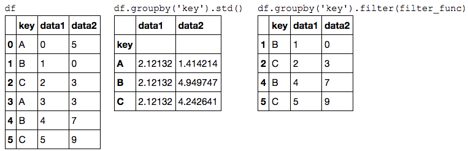
The filter function should return a Boolean value specifying whether the group passes the filtering. Here because group A does not have a standard deviation greater than 4, it is dropped from the result.
Transformation
While aggregation must return a reduced version of the data, transformation can return some transformed version of the full data to recombine.
For such a transformation, the output is the same shape as the input.
A common example is to center the data by subtracting the group-wise mean:
df.groupby('key').transform(lambda x: x - x.mean()) >>>> data1 data2 0 -1.5 1.0 1 -1.5 -3.5 2 -1.5 -3.0 3 1.5 -1.0 4 1.5 3.5 5 1.5 3.0
The apply() method
The apply() method lets you apply an arbitrary function to the group results.
The function should take a DataFrame, and return either a Pandas object (e.g., DataFrame, Series) or a scalar; the combine operation will be tailored to the type of output returned.
For example, here is an apply() that normalizes the first column by the sum of the second:
def norm_by_data2(x): # x is a DataFrame of group values x['data1'] /= x['data2'].sum() return x display('df', "df.groupby('key').apply(norm_by_data2)")
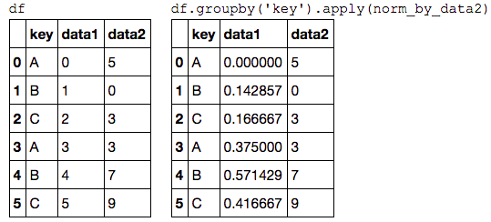
apply() within a GroupBy is quite flexible: the only criterion is that the function takes a DataFrame and returns a Pandas object or scalar; what you do in the middle is up to you!
Specifying the split key
In the simple examples presented before, we split the DataFrame on a single column name.
This is just one of many options by which the groups can be defined, and we'll go through some other options for group specification here.
A list, array, series, or index providing the grouping keys
The key can be any series or list with a length matching that of the DataFrame. For example:
L = [0, 1, 0, 1, 2, 0] display('df', 'df.groupby(L).sum()')
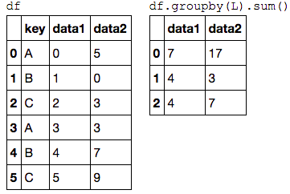
Of course, this means there's another, more verbose way of accomplishing the df.groupby('key') from before:
display('df', "df.groupby(df['key']).sum()")
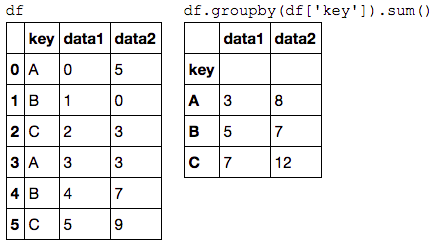
A dictionary or series mapping index to group
Another method is to provide a dictionary that maps index values to the group keys:
df2 = df.set_index('key') mapping = {'A': 'vowel', 'B': 'consonant', 'C': 'consonant'} display('df2', 'df2.groupby(mapping).sum()')
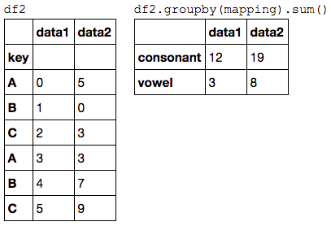
Any Python function
Similar to mapping, you can pass any Python function that will input the index value and output the group:
display('df2', 'df2.groupby(str.lower).mean()')
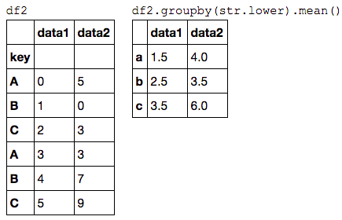
A list of valid keys
Further, any of the preceding key choices can be combined to group on a multi-index:
df2.groupby([str.lower, mapping]).mean()
>>>>
data1 data2
a vowel 1.5 4.0
b consonant 2.5 3.5
c consonant 3.5 6.0
Grouping example
As an example of this, in a couple lines of Python code we can put all these together and count discovered planets by method and by decade:
decade = 10 * (planets['year'] // 10) decade = decade.astype(str) + 's' decade.name = 'decade' planets.groupby(['method', decade])['number'].sum().unstack().fillna(0) # or planets.groupby(['method', decade])['number'].sum().unstack(1, fill_value=0) >>>> decade 1980s 1990s 2000s 2010s method Astrometry 0.0 0.0 0.0 2.0 Eclipse Timing Variations 0.0 0.0 5.0 10.0 Imaging 0.0 0.0 29.0 21.0 Microlensing 0.0 0.0 12.0 15.0 Orbital Brightness Modulation 0.0 0.0 0.0 5.0 Pulsar Timing 0.0 9.0 1.0 1.0 Pulsation Timing Variations 0.0 0.0 1.0 0.0 Radial Velocity 1.0 52.0 475.0 424.0 Transit 0.0 0.0 64.0 712.0 Transit Timing Variations 0.0 0.0 0.0 9.0
This shows the power of combining many of the operations we've discussed up to this point when looking at realistic datasets.
We immediately gain a coarse understanding of when and how planets have been discovered over the past several decades!
Here I would suggest digging into these few lines of code, and evaluating the individual steps to make sure you understand exactly what they are doing to the result.
It's certainly a somewhat complicated example, but understanding these pieces will give you the means to similarly explore your own data.
3.9 Pivot Tables
We have seen how the GroupBy abstraction lets us explore relationships within a dataset.
A pivot table is a similar operation that is commonly seen in spreadsheets and other programs that operate on tabular data. The pivot table takes simple column-wise data as input, and groups the entries into a two-dimensional table that provides a multidimensional summarization of the data.
The difference between pivot tables and GroupBy can sometimes cause confusion; it helps me to think of pivot tables as essentially a multidimensional version of GroupBy aggregation.
That is, you split-apply-combine, but both the split and the combine happen across not a one-dimensional index, but across a two-dimensional grid.
Motivating Pivot Tables
For the examples in this section, we'll use the database of passengers on the Titanic, available through the Seaborn library (see [Visualization With Seaborn](04.14-Visualization-With-Seaborn.ipynb)):
import numpy as np import pandas as pd import seaborn as sns titanic = sns.load_dataset('titanic') titanic.head()
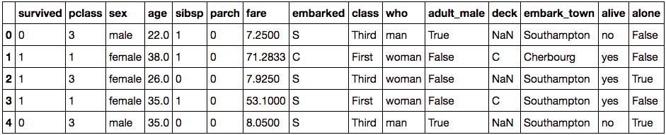
This contains a wealth of information on each passenger of that ill-fated voyage, including gender, age, class, fare paid, and much more.
Pivot Tables by Hand
To start learning more about this data, we might begin by grouping according to gender, survival status, or some combination thereof.
If you have read the previous section, you might be tempted to apply a GroupBy operation–for example, let's look at survival rate by gender:
titanic.groupby('sex')[['survived']].mean() >>>> survived sex female 0.742038 male 0.188908
[ME: why "[ [ 'survived' ] ]" instead of ['survived']? 表示 'survived' 是 一组 column heads 中的一个？否则结果如下所示。而且不能 unstack]
sex female 0.742038 male 0.188908 Name: survived, dtype: float64
This immediately gives us some insight: overall, three of every four females on board survived, while only one in five males survived!
This is useful, but we might like to go one step deeper and look at survival by both sex and, say, class.
Using the vocabulary of GroupBy, we might proceed using something like this:
we group by class and gender, select survival, apply a mean aggregate, combine the resulting groups, and then unstack the hierarchical index to reveal the hidden multidimensionality. In code:
titanic.groupby(['sex', 'class'])['survived'].aggregate('mean').unstack() >>>> class First Second Third sex female 0.968085 0.921053 0.500000 male 0.368852 0.157407 0.135447
This gives us a better idea of how both gender and class affected survival, but the code is starting to look a bit garbled.
While each step of this pipeline makes sense in light of the tools we've previously discussed, the long string of code is not particularly easy to read or use.
This two-dimensional GroupBy is common enough that Pandas includes a convenience routine, pivot_table, which succinctly handles this type of multi-dimensional aggregation.
Pivot Table Syntax
Here is the equivalent to the preceding operation using the pivot_table method of =DataFrame=s:
titanic.pivot_table('survived', index='sex', columns='class') >>>> class First Second Third sex female 0.968085 0.921053 0.500000 male 0.368852 0.157407 0.135447
This is eminently more readable than the groupby approach, and produces the same result.
As you might expect of an early 20th-century transatlantic cruise, the survival gradient favors both women and higher classes.
First-class women survived with near certainty (hi, Rose!), while only one in ten third-class men survived (sorry, Jack!).
Multi-level pivot tables
Just as in the GroupBy, the grouping in pivot tables can be specified with multiple levels, and via a number of options.
For example, we might be interested in looking at age as a third dimension.
We'll bin the age using the pd.cut function:
age = pd.cut(titanic['age'], [0, 18, 80]) titanic.pivot_table('survived', ['sex', age], 'class') >>>> class First Second Third sex age female (0, 18] 0.909091 1.000000 0.511628 (18, 80] 0.972973 0.900000 0.423729 male (0, 18] 0.800000 0.600000 0.215686 (18, 80] 0.375000 0.071429 0.133663
We can apply the same strategy when working with the columns as well; let's add info on the fare paid using pd.qcut to automatically compute quantiles:
fare = pd.qcut(titanic['fare'], 2) titanic.pivot_table('survived', ['sex', age], [fare, 'class'])
The result is a four-dimensional aggregation with hierarchical indices (see [Hierarchical Indexing](03.05-Hierarchical-Indexing.ipynb)), shown in a grid demonstrating the relationship between the values.
Additional pivot table options
The full call signature of the pivot_table method of =DataFrame=s is as follows:
# call signature as of Pandas 0.18 DataFrame.pivot_table(data, values=None, index=None, columns=None, aggfunc='mean', fill_value=None, margins=False, dropna=True, margins_name='All')
We've already seen examples of the first three arguments; here we'll take a quick look at the remaining ones.
Two of the options, fill_value and dropna, have to do with missing data and are fairly straightforward; we will not show examples of them here.
The aggfunc keyword controls what type of aggregation is applied, which is a mean by default.
As in the GroupBy, the aggregation specification can be a string representing one of several common choices (e.g., ='sum'=, ='mean'=, ='count'=, ='min'=, ='max'=, etc.) or a function that implements an aggregation (e.g., np.sum(), min(), sum(), etc.).
Additionally, it can be specified as a dictionary mapping a column to any of the above desired options:
titanic.pivot_table(index='sex', columns='class', aggfunc={'survived':sum, 'fare':'mean'}) survived fare class First Second Third First Second Third sex female 91 70 72 106.125798 21.970121 16.118810 male 45 17 47 67.226127 19.741782 12.661633
Notice also here that we've omitted the values keyword; when specifying a mapping for aggfunc, this is determined automatically.
At times it's useful to compute totals along each grouping. This can be done via the margins keyword:
titanic.pivot_table('survived', index='sex', columns='class', margins=True) >>>> class First Second Third All sex female 0.968085 0.921053 0.500000 0.742038 male 0.368852 0.157407 0.135447 0.188908 All 0.629630 0.472826 0.242363 0.383838
Here this automatically gives us information about the class-agnostic survival rate by gender, the gender-agnostic survival rate by class, and the overall survival rate of 38%.
The margin label can be specified with the margins_name keyword, which defaults to ="All"=.
Example: Birthrate Data
As a more interesting example, let's take a look at the freely available data on births in the United States, provided by the Centers for Disease Control (CDC).
This data can be found at https://raw.githubusercontent.com/jakevdp/data-CDCbirths/master/births.csv (this dataset has been analyzed rather extensively by Andrew Gelman and his group; see, for example, this blog post):
# shell command to download the data: # !curl -O https://raw.githubusercontent.com/jakevdp/data-CDCbirths/master/births.csv
births = pd.read_csv('data/births.csv')
Taking a look at the data, we see that it's relatively simple–it contains the number of births grouped by date and gender:
births.head() >>>> year month day gender births 0 1969 1 1 F 4046 1 1969 1 1 M 4440 2 1969 1 2 F 4454 3 1969 1 2 M 4548 4 1969 1 3 F 4548
We can start to understand this data a bit more by using a pivot table. Let's add a decade column, and take a look at male and female births as a function of decade:
births['decade'] = 10 * (births['year'] // 10) births.pivot_table('births', index='decade', columns='gender', aggfunc='sum') >>>> gender F M decade 1960 1753634 1846572 1970 16263075 17121550 1980 18310351 19243452 1990 19479454 20420553 2000 18229309 19106428
We immediately see that male births outnumber female births in every decade.
To see this trend a bit more clearly, we can use the built-in plotting tools in Pandas to visualize the total number of births by year (see [Introduction to Matplotlib](04.00-Introduction-To-Matplotlib.ipynb) for a discussion of plotting with Matplotlib):
%matplotlib inline import matplotlib.pyplot as plt sns.set() # use Seaborn styles births.pivot_table('births', index='year', columns='gender', aggfunc='sum').plot() plt.ylabel('total births per year');
With a simple pivot table and plot() method, we can immediately see the annual trend in births by gender. By eye, it appears that over the past 50 years male births have outnumbered female births by around 5%.
Further data exploration
Though this doesn't necessarily relate to the pivot table, there are a few more interesting features we can pull out of this dataset using the Pandas tools covered up to this point.
We must start by cleaning the data a bit, removing outliers caused by mistyped dates (e.g., June 31st) or missing values (e.g., June 99th).
One easy way to remove these all at once is to cut outliers; we'll do this via a robust sigma-clipping operation:
quartiles = np.percentile(births['births'], [25, 50, 75]) mu = quartiles[1] sig = 0.74 * (quartiles[2] - quartiles[0])
This final line is a robust estimate of the sample mean, where the 0.74 comes from the interquartile range of a Gaussian distribution (You can learn more about sigma-clipping operations in a book I coauthored with Željko Ivezić, Andrew J. Connolly, and Alexander Gray: "Statistics, Data Mining, and Machine Learning in Astronomy" (Princeton University Press, 2014)).
With this we can use the query() method (discussed further in [High-Performance Pandas: eval() and query() ](03.12-Performance-Eval-and-Query.ipynb)) to filter-out rows with births outside these values:
births = births.query('(births > @mu - 5 * @sig) & (births < @mu + 5 * @sig)')
Next we set the day column to integers; previously it had been a string because some columns in the dataset contained the value ='null'=:
# set 'day' column to integer; it originally was a string due to nulls births['day'] = births['day'].astype(int)
Finally, we can combine the day, month, and year to create a Date index (see [Working with Time Series](03.11-Working-with-Time-Series.ipynb)).
This allows us to quickly compute the weekday corresponding to each row:
# create a datetime index from the year, month, day births.index = pd.to_datetime(10000 * births.year + 100 * births.month + births.day, format='%Y%m%d') births['dayofweek'] = births.index.dayofweek
Using this we can plot births by weekday for several decades:
import matplotlib.pyplot as plt import matplotlib as mpl births.pivot_table('births', index='dayofweek', columns='decade', aggfunc='mean').plot() plt.gca().set_xticklabels(['Mon', 'Tues', 'Wed', 'Thurs', 'Fri', 'Sat', 'Sun']) plt.ylabel('mean births by day');
Apparently births are slightly less common on weekends than on weekdays! Note that the 1990s and 2000s are missing because the CDC data contains only the month of birth starting in 1989.
Another intersting view is to plot the mean number of births by the day of the year.
Let's first group the data by month and day separately:
births_by_date = births.pivot_table('births', [births.index.month, births.index.day]) births_by_date.head() >>>> 1 1 4009.225 2 4247.400 3 4500.900 4 4571.350 5 4603.625 Name: births, dtype: float64
The result is a multi-index over months and days.
To make this easily plottable, let's turn these months and days into a date by associating them with a dummy year variable (Tip: making sure to choose a leap year so February 29th is correctly handled!)
births_by_date.index = [pd.datetime(2012, month, day) for (month, day) in births_by_date.index] births_by_date.head() >>>> 2012-01-01 4009.225 2012-01-02 4247.400 2012-01-03 4500.900 2012-01-04 4571.350 2012-01-05 4603.625 Name: births, dtype: float64
Focusing on the month and day only, we now have a time series reflecting the average number of births by date of the year.
From this, we can use the plot method to plot the data. It reveals some interesting trends:
# Plot the results fig, ax = plt.subplots(figsize=(12, 4)) births_by_date.plot(ax=ax);
In particular, the striking feature of this graph is the dip in birthrate on US holidays (e.g., Independence Day, Labor Day, Thanksgiving, Christmas, New Year's Day) although this likely reflects trends in scheduled/induced births rather than some deep psychosomatic effect on natural births.
For more discussion on this trend, see the analysis and links in Andrew Gelman's blog post on the subject.
We'll return to this figure in [Example:-Effect-of-Holidays-on-US-Births](04.09-Text-and-Annotation.ipynb#Example:-Effect-of-Holidays-on-US-Births), where we will use Matplotlib's tools to annotate this plot.
Looking at this short example, you can see that many of the Python and Pandas tools we've seen to this point can be combined and used to gain insight from a variety of datasets.
We will see some more sophisticated applications of these data manipulations in future sections!
3.10 Vectorized String Operations
One strength of Python is its relative ease in handling and manipulating string data.
Pandas builds on this and provides a comprehensive set of vectorized string operations that become an essential piece of the type of munging required when working with (read: cleaning up) real-world data.
In this section, we'll walk through some of the Pandas string operations, and then take a look at using them to partially clean up a very messy dataset of recipes collected from the Internet.
Introducing Pandas String Operations
We saw in previous sections how tools like NumPy and Pandas generalize arithmetic operations so that we can easily and quickly perform the same operation on many array elements. For example:
import numpy as np x = np.array([2, 3, 5, 7, 11, 13]) x * 2 >>>> array([ 4, 6, 10, 14, 22, 26])
This vectorization of operations simplifies the syntax of operating on arrays of data: we no longer have to worry about the size or shape of the array, but just about what operation we want done.
For arrays of strings, NumPy does not provide such simple access, and thus you're stuck using a more verbose loop syntax:
data = ['peter', 'Paul', 'MARY', 'gUIDO'] [s.capitalize() for s in data] >>>> ['Peter', 'Paul', 'Mary', 'Guido']
This is perhaps sufficient to work with some data, but it will break if there are any missing values. For example:
data = ['peter', 'Paul', None, 'MARY', 'gUIDO'] [s.capitalize() for s in data] >>>> AttributeError: 'NoneType' object has no attribute 'capitalize'
Pandas includes features to address both this need for vectorized string operations and for correctly handling missing data via the str attribute of Pandas Series and Index objects containing strings.
So, for example, suppose we create a Pandas Series with this data:
import pandas as pd names = pd.Series(data) names >>>> 0 peter 1 Paul 2 None 3 MARY 4 gUIDO dtype: object
We can now call a single method that will capitalize all the entries, while skipping over any missing values:
names.str.capitalize() >>>> 0 Peter 1 Paul 2 None 3 Mary 4 Guido dtype: object
Tip: Using tab completion on this str attribute will list all the vectorized string methods available to Pandas.
Tables of Pandas String Methods
If you have a good understanding of string manipulation in Python, most of Pandas string syntax is intuitive enough that it's probably sufficient to just list a table of available methods; we will start with that here, before diving deeper into a few of the subtleties.
The examples in this section use the following series of names:
monte = pd.Series(['Graham Chapman', 'John Cleese', 'Terry Gilliam', 'Eric Idle', 'Terry Jones', 'Michael Palin'])
Methods similar to Python string methods
Nearly all Python's built-in string methods are mirrored by a Pandas vectorized string method. Here is a list of Pandas str methods that mirror Python string methods:
len() |
lower() |
translate() |
islower() |
ljust() |
upper() |
startswith() |
isupper() |
rjust() |
find() |
endswith() |
isnumeric() |
center() |
rfind() |
isalnum() |
isdecimal() |
zfill() |
index() |
isalpha() |
split() |
strip() |
rindex() |
isdigit() |
rsplit() |
rstrip() |
capitalize() |
isspace() |
partition() |
lstrip() |
swapcase() |
istitle() |
rpartition() |
Notice that these have various return values. Some, like lower(), return a series of strings:
monte.str.lower() >>>> 0 graham chapman 1 john cleese 2 terry gilliam 3 eric idle 4 terry jones 5 michael palin dtype: object
But some others return numbers:
monte.str.len() >>>> 0 14 1 11 2 13 3 9 4 11 5 13 dtype: int64
Or Boolean values:
monte.str.startswith('T') >>>> 0 False 1 False 2 True 3 False 4 True 5 False dtype: bool
Still others return lists or other compound values for each element:
monte.str.split() >>>> 0 [Graham, Chapman] 1 [John, Cleese] 2 [Terry, Gilliam] 3 [Eric, Idle] 4 [Terry, Jones] 5 [Michael, Palin] dtype: object
We'll see further manipulations of this kind of series-of-lists object as we continue our discussion.
Methods using regular expressions
In addition, there are several methods that accept regular expressions to examine the content of each string element, and follow some of the API conventions of Python's built-in re module:
| Method | Description |
|---|---|
match() |
Call re.match() on each element, returning a boolean. |
extract() |
Call re.match() on each element, returning matched groups as strings. |
findall() |
Call re.findall() on each element |
replace() |
Replace occurrences of pattern with some other string |
contains() |
Call re.search() on each element, returning a boolean |
count() |
Count occurrences of pattern |
split() |
Equivalent to str.split(), but accepts regexps |
rsplit() |
Equivalent to str.rsplit(), but accepts regexps |
With these, you can do a wide range of interesting operations. For example, we can extract the first name from each by asking for a contiguous group of characters at the beginning of each element:
monte.str.extract('([A-Za-z]+)', expand=False) >>>> 0 Graham 1 John 2 Terry 3 Eric 4 Terry 5 Michael dtype: object
Or we can do something more complicated, like finding all names that start and end with a consonant, making use of the start-of-string (^) and end-of-string ($) regular expression characters:
monte.str.findall(r'^[^AEIOU].*[^aeiou]$') >>>> 0 [Graham Chapman] 1 [] 2 [Terry Gilliam] 3 [] 4 [Terry Jones] 5 [Michael Palin] dtype: object
The ability to concisely apply regular expressions across Series or Dataframe entries opens up many possibilities for analysis and cleaning of data.
Miscellaneous methods
Finally, there are some miscellaneous methods that enable other convenient operations:
| Method | Description |
|---|---|
get() |
Index each element |
slice() |
Slice each element |
slice_replace() |
Replace slice in each element with passed value |
cat() |
Concatenate strings |
repeat() |
Repeat values |
normalize() |
Return Unicode form of string |
pad() |
Add whitespace to left, right, or both sides of strings |
wrap() |
Split long strings into lines with length less than a given width |
join() |
Join strings in each element of the Series with passed separator |
get_dummies() |
extract dummy variables as a dataframe |
#### Vectorized item access and slicing
The get() and slice() operations, in particular, enable vectorized element access from each array.
For example, we can get a slice of the first three characters of each array using str.slice(0, 3).
Note that this behavior is also available through Python's normal indexing syntax–for example, df.str.slice(0, 3) is equivalent to df.str[0:3]:
monte.str[0:3] >>>> 0 Gra 1 Joh 2 Ter 3 Eri 4 Ter 5 Mic dtype: object
Indexing via df.str.get(i) and df.str[i] is likewise similar.
These get() and slice() methods also let you access elements of arrays returned by split().
For example, to extract the last name of each entry, we can combine split() and get():
monte.str.split().str.get(-1) >>>> 0 Chapman 1 Cleese 2 Gilliam 3 Idle 4 Jones 5 Palin dtype: object
Indicator variables
Another method that requires a bit of extra explanation is the get_dummies() method.
This is useful when your data has a column containing some sort of coded indicator.
For example, we might have a dataset that contains information in the form of codes, such as A="born in America," B="born in the United Kingdom," C="likes cheese," D="likes spam":
full_monte = pd.DataFrame({'name': monte, 'info': ['B|C|D', 'B|D', 'A|C', 'B|D', 'B|C', 'B|C|D']}) full_monte >>>> info name 0 B|C|D Graham Chapman 1 B|D John Cleese 2 A|C Terry Gilliam 3 B|D Eric Idle 4 B|C Terry Jones 5 B|C|D Michael Palin
The get_dummies() routine lets you quickly split-out these indicator variables into a DataFrame:
full_monte['info'].str.get_dummies('|') >>>> A B C D 0 0 1 1 1 1 0 1 0 1 2 1 0 1 0 3 0 1 0 1 4 0 1 1 0 5 0 1 1 1
With these operations as building blocks, you can construct an endless range of string processing procedures when cleaning your data.
We won't dive further into these methods here, but I encourage you to read through Working with Text Data in the Pandas online documentation, or to refer to the resources listed in [Further Resources](03.13-Further-Resources.ipynb).
Example: Recipe Database
These vectorized string operations become most useful in the process of cleaning up messy, real-world data.
Here I'll walk through an example of that, using an open recipe database compiled from various sources on the Web.
Our goal will be to parse the recipe data into ingredient lists, so we can quickly find a recipe based on some ingredients we have on hand.
The scripts used to compile this can be found at https://github.com/fictivekin/openrecipes, and the link to the current version of the database is found there as well.
As of Spring 2016, this database is about 30 MB, and can be downloaded and unzipped with these commands:
# !curl -O http://openrecipes.s3.amazonaws.com/recipeitems-latest.json.gz # !gunzip recipeitems-latest.json.gz
The database is in JSON format, so we will try pd.read_json to read it:
try: recipes = pd.read_json('recipeitems-latest.json') except ValueError as e: print("ValueError:", e) >>>> ValueError: Trailing data
Oops! We get a ValueError mentioning that there is "trailing data."
Searching for the text of this error on the Internet, it seems that it's due to using a file in which each line is itself a valid JSON, but the full file is not.
Let's check if this interpretation is true:
with open('recipeitems-latest.json') as f: line = f.readline() pd.read_json(line).shape >>>> (2, 12)
Yes, apparently each line is a valid JSON, so we'll need to string them together.
One way we can do this is to actually construct a string representation containing all these JSON entries, and then load the whole thing with pd.read_json:
# read the entire file into a Python array with open('recipeitems-latest.json', 'r') as f: # Extract each line data = (line.strip() for line in f) # Reformat so each line is the element of a list data_json = "[{0}]".format(','.join(data)) # read the result as a JSON recipes = pd.read_json(data_json) recipes.shape >>>> (173278, 17)
We see there are nearly 200,000 recipes, and 17 columns. Let's take a look at one row to see what we have:
recipes.iloc[0]
>>>>
_id {'$oid': '5160756b96cc62079cc2db15'}
cookTime PT30M
creator NaN
dateModified NaN
datePublished 2013-03-11
description Late Saturday afternoon, after Marlboro Man ha...
image http://static.thepioneerwoman.com/cooking/file...
ingredients Biscuits\n3 cups All-purpose Flour\n2 Tablespo...
name Drop Biscuits and Sausage Gravy
prepTime PT10M
recipeCategory NaN
recipeInstructions NaN
recipeYield 12
source thepioneerwoman
totalTime NaN
ts {'$date': 1365276011104}
url http://thepioneerwoman.com/cooking/2013/03/dro...
Name: 0, dtype: object
There is a lot of information there, but much of it is in a very messy form, as is typical of data scraped from the Web.
In particular, the ingredient list is in string format; we're going to have to carefully extract the information we're interested in.
Let's start by taking a closer look at the ingredients:
recipes.ingredients.str.len().describe() >>>> count 173278.000000 mean 244.617926 std 146.705285 min 0.000000 25% 147.000000 50% 221.000000 75% 314.000000 max 9067.000000 Name: ingredients, dtype: float64
Just out of curiousity, let's see which recipe has the longest ingredient list:
recipes.name[np.argmax(recipes.ingredients.str.len())] >>>> 'Carrot Pineapple Spice & Brownie Layer Cake with Whipped Cream & Cream Cheese Frosting and Marzipan Carrots'
That certainly looks like an involved recipe.
We can do other aggregate explorations; for example, let's see how many of the recipes are for breakfast food:
recipes.description.str.contains('[Bb]reakfast').sum() >>>> 3524
Or how many of the recipes list cinnamon as an ingredient:
recipes.ingredients.str.contains('[Cc]innamon').sum() >>>> 10526
We could even look to see whether any recipes misspell the ingredient as "cinamon":
recipes.ingredients.str.contains('[Cc]inamon').sum() >>>> 11
This is the type of essential data exploration that is possible with Pandas string tools.
It is data munging like this that Python really excels at.
A simple recipe recommender
Let's go a bit further, and start working on a simple recipe recommendation system: given a list of ingredients, find a recipe that uses all those ingredients.
While conceptually straightforward, the task is complicated by the heterogeneity of the data: there is no easy operation, for example, to extract a clean list of ingredients from each row.
So we will cheat a bit: we'll start with a list of common ingredients, and simply search to see whether they are in each recipe's ingredient list.
For simplicity, let's just stick with herbs and spices for the time being:
spice_list = ['salt', 'pepper', 'oregano', 'sage', 'parsley', 'rosemary', 'tarragon', 'thyme', 'paprika', 'cumin']
We can then build a Boolean DataFrame consisting of True and False values, indicating whether this ingredient appears in the list:
import re spice_df = pd.DataFrame(dict((spice, recipes.ingredients.str.contains(spice, re.IGNORECASE)) for spice in spice_list)) spice_df.head() >>>> cumin oregano paprika parsley pepper rosemary sage salt tarragon thyme 0 False False False False False False True False False False 1 False False False False False False False False False False 2 True False False False True False False True False False 3 False False False False False False False False False False 4 False False False False False False False False False False
Now, as an example, let's say we'd like to find a recipe that uses parsley, paprika, and tarragon.
We can compute this very quickly using the query() method of DataFrame=s, discussed in [High-Performance Pandas: =eval() and =query()=](03.12-Performance-Eval-and-Query.ipynb):
selection = spice_df.query('parsley & paprika & tarragon') len(selection) >>>> 10
We find only 10 recipes with this combination; let's use the index returned by this selection to discover the names of the recipes that have this combination:
recipes.name[selection.index] >>>> 2069 All cremat with a Little Gem, dandelion and wa... 74964 Lobster with Thermidor butter 93768 Burton's Southern Fried Chicken with White Gravy 113926 Mijo's Slow Cooker Shredded Beef 137686 Asparagus Soup with Poached Eggs 140530 Fried Oyster Po’boys 158475 Lamb shank tagine with herb tabbouleh 158486 Southern fried chicken in buttermilk 163175 Fried Chicken Sliders with Pickles + Slaw 165243 Bar Tartine Cauliflower Salad Name: name, dtype: object
Now that we have narrowed down our recipe selection by a factor of almost 20,000, we are in a position to make a more informed decision about what we'd like to cook for dinner.
Going further with recipes
Hopefully this example has given you a bit of a flavor (ba-dum!) for the types of data cleaning operations that are efficiently enabled by Pandas string methods.
Of course, building a very robust recipe recommendation system would require a lot more work!
Extracting full ingredient lists from each recipe would be an important piece of the task; unfortunately, the wide variety of formats used makes this a relatively time-consuming process.
This points to the truism that in data science, cleaning and munging of real-world data often comprises the majority of the work, and Pandas provides the tools that can help you do this efficiently.
3.11 Working with Time Series
(http://localhost:8888/notebooks/03.11-Working-with-Time-Series.ipynb)
Pandas was developed in the context of financial modeling
Dates and Times in Python
While the time series tools provided by Pandas tend to be the most useful for data science applications, it is helpful to see their relationship to other packages used in Python.
Native Python dates and times: datetime and dateutil
The built-in datetime module, along with the third-party dateutil module.
Standard string format codes: strftime section of Python's datetime documentation.
Documentation of other useful date utilities can be found in dateutil's online documentation.
A related package to be aware of is pytz, which contains tools for working with the most migrane-inducing piece of time series data: time zones.
Typed arrays of times: NumPy's datetime64
The NumPy datetime64 dtype encodes dates as 64-bit integers, and thus allows arrays of dates to be represented very compactly.
The datetime64 and timedelta64 objects are built on a fundamental time unit. For example, if you want a time resolution of one nanosecond, you only have enough information to encode a range of 264 nanoseconds, or just under 600 years.
NumPy will infer the desired unit from the input -> day-based, minute-based, nanosecond-based (default) and so on.
Dates and times in pandas: best of both worlds
Pandas TimeStamp object, which combines the ease-of-use of datetime and dateutil with the efficient storage and vectorized interface of numpy.datetime64.
From a group of these Timestamp objects, Pandas can construct a DatetimeIndex that can be used to index data in a Series or DataFrame
Pandas Time Series: Indexing by Time
Where the Pandas time series tools really become useful is when you begin to index data by timestamps.
Pandas Time Series Data Structures
This section will introduce the fundamental Pandas data structures for working with time series data:
- For time stamps, Pandas provides the
Timestamptype. As mentioned before, it is essentially a replacement for Python's nativedatetime, but is based on the more efficientnumpy.datetime64data type. The associated Index structure isDatetimeIndex. - For time Periods, Pandas provides the
Periodtype. This encodes a fixed-frequency interval based onnumpy.datetime64. The associated index structure isPeriodIndex. - For time deltas or durations, Pandas provides the
Timedeltatype.Timedeltais a more efficient replacement for Python's nativedatetime.timedeltatype, and is based onnumpy.timedelta64. The associated index structure isTimedeltaIndex.
Passing a single date to pd.to_datetime() yields a Timestamp; passing a series of dates by default yields a DatetimeIndex.
Any DatetimeIndex can be converted to a PeriodIndex with the to_period() function with the addition of a frequency code; here we'll use ='D'= to indicate daily frequency.
A TimedeltaIndex is created, for example, when a date is subtracted from another.
Regular sequences: pd.date_range()
To make the creation of regular date sequences more convenient, Pandas offers a few functions for this purpose: pd.date_range() for timestamps, pd.period_range() for periods, and pd.timedelta_range() for time deltas.
Frequencies and Offsets
| Code | Description | Code | Description |
|---|---|---|---|
D |
Calendar day | B |
Business day |
W |
Weekly | ||
M |
Month end | BM |
Business month end |
Q |
Quarter end | BQ |
Business quarter end |
A |
Year end | BA |
Business year end |
H |
Hours | BH |
Business hours |
T |
Minutes | ||
S |
Seconds | ||
L |
Milliseonds | ||
U |
Microseconds | ||
N |
nanoseconds |
The monthly, quarterly, and annual frequencies are all marked at the end of the specified period.
By adding an S suffix to any of these, they instead will be marked at the beginning:
| Code | Description | Code | Description | |
|---|---|---|---|---|
MS |
Month start | BMS |
Business month start | |
QS |
Quarter start | BQS |
Business quarter start | |
AS |
Year start | BAS |
Business year start |
Additionally, you can change the month used to mark any quarterly or annual code by adding a three-letter month code as a suffix:
Q-JAN,BQ-FEB,QS-MAR,BQS-APR, etc.A-JAN,BA-FEB,AS-MAR,BAS-APR, etc.
In the same way, the split-point of the weekly frequency can be modified by adding a three-letter weekday code:
W-SUN,W-MON,W-TUE,W-WED, etc.
On top of this, codes can be combined with numbers to specify other frequencies.
All of these short codes refer to specific instances of Pandas time series offsets, which can be found in the pd.tseries.offsets module.
Resampling, Shifting, and Windowing practice guide
The ability to use dates and times as indices to intuitively organize and access data is an important piece of the Pandas time series tools. The benefits of indexed data in general (automatic alignment during operations, intuitive data slicing and access, etc.) still apply, and Pandas provides several additional time series-specific operations.
We will take a look at a few of those here, using some stock price data as an example.
Because Pandas was developed largely in a finance context, it includes some very specific tools for financial data. For example, the accompanying pandas-datareader package (installable via conda install pandas-datareader), knows how to import financial data from a number of available sources, including Yahoo finance, Google Finance, and others. Here we will load Google's closing price history:
from pandas_datareader import data goog = data.DataReader('GOOG', start='2004', end='2016', data_source='google') goog.head() >>>> Open High Low Close Volume Date 2004-08-19 49.96 51.98 47.93 50.12 NaN 2004-08-20 50.69 54.49 50.20 54.10 NaN 2004-08-23 55.32 56.68 54.47 54.65 NaN 2004-08-24 55.56 55.74 51.73 52.38 NaN 2004-08-25 52.43 53.95 51.89 52.95 NaN
For simplicity, we'll use just the closing price:
goog = goog['Close']
We can visualize this using the plot() method, after the normal Matplotlib setup boilerplate (see [Chapter 4](04.00-Introduction-To-Matplotlib.ipynb)):
%matplotlib inline import matplotlib.pyplot as plt import seaborn; seaborn.set() goog.plot();
Resampling and converting frequencies
One common need for time series data is resampling at a higher or lower frequency. This can be done using the resample() method, or the much simpler asfreq() method. The primary difference between the two is that resample() is fundamentally a data aggregation, while asfreq() is fundamentally a data selection.
Taking a look at the Google closing price, let's compare what the two return when we down-sample the data.
Here we will resample the data at the end of business year:
goog.plot(alpha=0.5, style='-') goog.resample('BA').mean().plot(style=':') goog.asfreq('BA').plot(style='--'); plt.legend(['input', 'resample', 'asfreq'], loc='upper left');
Notice the difference: at each point, resample reports the average of the previous year, while asfreq reports the value at the end of the year.
For up-sampling, resample() and asfreq() are largely equivalent, though resample has many more options available. In this case, the default for both methods is to leave the up-sampled points empty, that is, filled with NA values. Just as with the pd.fillna() function discussed previously, asfreq() accepts a method argument to specify how values are imputed. Here, we will resample the business day data at a daily frequency (i.e., including weekends):
fig, ax = plt.subplots(2, sharex=True) data = goog.iloc[:10] data.asfreq('D').plot(ax=ax[0], marker='o') data.asfreq('D', method='bfill').plot(ax=ax[1], style='-o') data.asfreq('D', method='ffill').plot(ax=ax[1], style='--o') ax[1].legend(["back-fill", "forward-fill"]);
The top panel is the default: non-business days are left as NA values and do not appear on the plot. The bottom panel shows the differences between two strategies for filling the gaps: forward-filling and backward-filling.
Time-shifts
Another common time series-specific operation is shifting of data in time. Pandas has two closely related methods for computing this: shift() and tshift() In short, the difference between them is that shift() shifts the data, while tshift() shifts the index. In both cases, the shift is specified in multiples of the frequency.
Here we will both shift() and tshift() by 900 days;
fig, ax = plt.subplots(3, sharey=True) # apply a frequency to the data goog = goog.asfreq('D', method='pad') goog.plot(ax=ax[0]) goog.shift(900).plot(ax=ax[1]) goog.tshift(900).plot(ax=ax[2]) # legends and annotations local_max = pd.to_datetime('2007-11-05') offset = pd.Timedelta(900, 'D') ax[0].legend(['input'], loc=2) ax[0].get_xticklabels()[2].set(weight='heavy', color='red') ax[0].axvline(local_max, alpha=0.3, color='red') ax[1].legend(['shift(900)'], loc=2) ax[1].get_xticklabels()[2].set(weight='heavy', color='red') ax[1].axvline(local_max + offset, alpha=0.3, color='red') ax[2].legend(['tshift(900)'], loc=2) ax[2].get_xticklabels()[1].set(weight='heavy', color='red') ax[2].axvline(local_max + offset, alpha=0.3, color='red');
We see here that shift(900) shifts the data by 900 days, pushing some of it off the end of the graph (and leaving NA values at the other end), while tshift(900) shifts the index values by 900 days.
A common context for this type of shift is in computing differences over time. For example, we use shifted values to compute the one-year return on investment for Google stock over the course of the dataset:
ROI = 100 * (goog.tshift(-365) / goog - 1) ROI.plot() plt.ylabel('% Return on Investment');
This helps us to see the overall trend in Google stock: thus far, the most profitable times to invest in Google have been (unsurprisingly, in retrospect) shortly after its IPO, and in the middle of the 2009 recession.
Rolling windows
Rolling statistics are a third type of time series-specific operation implemented by Pandas. These can be accomplished via the rolling() attribute of Series and DataFrame objects, which returns a view similar to what we saw with the groupby operation (see [Aggregation and Grouping](03.08-Aggregation-and-Grouping.ipynb)). This rolling view makes available a number of aggregation operations by default.
For example, here is the one-year centered rolling mean and standard deviation of the Google stock prices:
rolling = goog.rolling(365, center=True) data = pd.DataFrame({'input': goog, 'one-year rolling_mean': rolling.mean(), 'one-year rolling_std': rolling.std()}) ax = data.plot(style=['-', '--', ':']) ax.lines[0].set_alpha(0.3)
As with group-by operations, the aggregate() and apply() methods can be used for custom rolling computations.
Where to Learn More
This section has provided only a brief summary of some of the most essential features of time series tools provided by Pandas; for a more complete discussion, you can refer to the ["Time Series/Date" section](http://pandas.pydata.org/pandas-docs/stable/timeseries.html) of the Pandas online documentation.
Another excellent resource is the textbook [Python for Data Analysis](http://shop.oreilly.com/product/0636920023784.do) by Wes McKinney (OReilly, 2012). Although it is now a few years old, it is an invaluable resource on the use of Pandas. In particular, this book emphasizes time series tools in the context of business and finance, and focuses much more on particular details of business calendars, time zones, and related topics.
As always, you can also use the IPython help functionality to explore and try further options available to the functions and methods discussed here. I find this often is the best way to learn a new Python tool.
Example: Visualizing Seattle Bicycle Counts example practice
As a more involved example of working with some time series data, let's take a look at bicycle counts on Seattle's [Fremont Bridge](http://www.openstreetmap.org/#map=17/47.64813/-122.34965). This data comes from an automated bicycle counter, installed in late 2012, which has inductive sensors on the east and west sidewalks of the bridge. The hourly bicycle counts can be downloaded from http://data.seattle.gov/; here is the [direct link to the dataset](https://data.seattle.gov/Transportation/Fremont-Bridge-Hourly-Bicycle-Counts-by-Month-Octo/65db-xm6k).
As of summer 2016, the CSV can be downloaded as follows:
# !curl -o FremontBridge.csv https://data.seattle.gov/api/views/65db-xm6k/rows.csv?accessType=DOWNLOAD
Once this dataset is downloaded, we can use Pandas to read the CSV output into a DataFrame. We will specify that we want the Date as an index, and we want these dates to be automatically parsed:
data = pd.read_csv('data/FremontBridge.csv', index_col='Date', parse_dates=True) data.head() >>>> Fremont Bridge West Sidewalk Fremont Bridge East Sidewalk Date 2012-10-03 00:00:00 4.0 9.0 2012-10-03 01:00:00 4.0 6.0 2012-10-03 02:00:00 1.0 1.0 2012-10-03 03:00:00 2.0 3.0 2012-10-03 04:00:00 6.0 1.0
For convenience, we'll further process this dataset by shortening the column names and adding a "Total" column:
data.columns = ['West', 'East'] data['Total'] = data.eval('West + East')
Now let's take a look at the summary statistics for this data:
data.dropna().describe()
>>>>
West East Total
count 38633.000000 38633.000000 38633.000000
mean 53.915435 53.454378 107.369813
std 70.423572 77.509442 134.466581
min 0.000000 0.000000 0.000000
25% 7.000000 7.000000 15.000000
50% 29.000000 27.000000 59.000000
75% 71.000000 65.000000 141.000000
max 698.000000 717.000000 957.000000
Visualizing the data
We can gain some insight into the dataset by visualizing it. Let's start by plotting the raw data:
%matplotlib inline import seaborn; seaborn.set() data.plot() plt.ylabel('Hourly Bicycle Count');
The ~25,000 hourly samples are far too dense for us to make much sense of. We can gain more insight by resampling the data to a coarser grid. Let's resample by week:
weekly = data.resample('W').sum() weekly.plot(style=[':', '--', '-']) plt.ylabel('Weekly bicycle count');
This shows us some interesting seasonal trends: as you might expect, people bicycle more in the summer than in the winter, and even within a particular season the bicycle use varies from week to week (likely dependent on weather; see [In Depth: Linear Regression](05.06-Linear-Regression.ipynb) where we explore this further).
Another way that comes in handy for aggregating the data is to use a rolling mean, utilizing the pd.rolling_mean() function. Here we'll do a 30 day rolling mean of our data, making sure to center the window:
daily = data.resample('D').sum() daily.rolling(30, center=True).sum().plot(style=[':', '--', '-']) plt.ylabel('mean hourly count');
The jaggedness of the result is due to the hard cutoff of the window. We can get a smoother version of a rolling mean using a window function–for example, a Gaussian window. The following code specifies both the width of the window (we chose 50 days) and the width of the Gaussian within the window (we chose 10 days):
daily.rolling(50, center=True, win_type='gaussian').sum(std=10).plot(style=[':', '--', '-']);
Digging into the data
While these smoothed data views are useful to get an idea of the general trend in the data, they hide much of the interesting structure. For example, we might want to look at the average traffic as a function of the time of day. We can do this using the GroupBy functionality discussed in [Aggregation and Grouping](03.08-Aggregation-and-Grouping.ipynb):
by_time = data.groupby(data.index.time).mean() hourly_ticks = 4 * 60 * 60 * np.arange(6) by_time.plot(xticks=hourly_ticks, style=[':', '--', '-']);
The hourly traffic is a strongly bimodal distribution, with peaks around 8:00 in the morning and 5:00 in the evening. This is likely evidence of a strong component of commuter traffic crossing the bridge. This is further evidenced by the differences between the western sidewalk (generally used going toward downtown Seattle), which peaks more strongly in the morning, and the eastern sidewalk (generally used going away from downtown Seattle), which peaks more strongly in the evening.
We also might be curious about how things change based on the day of the week. Again, we can do this with a simple groupby:
by_weekday = data.groupby(data.index.dayofweek).mean() by_weekday.index = ['Mon', 'Tues', 'Wed', 'Thurs', 'Fri', 'Sat', 'Sun'] by_weekday.plot(style=[':', '--', '-']);
This shows a strong distinction between weekday and weekend totals, with around twice as many average riders crossing the bridge on Monday through Friday than on Saturday and Sunday.
With this in mind, let's do a compound GroupBy and look at the hourly trend on weekdays versus weekends. We'll start by grouping by both a flag marking the weekend, and the time of day:
weekend = np.where(data.index.weekday < 5, 'Weekday', 'Weekend') by_time = data.groupby([weekend, data.index.time]).mean()
Now we'll use some of the Matplotlib tools described in [Multiple Subplots](04.08-Multiple-Subplots.ipynb) to plot two panels side by side:
import matplotlib.pyplot as plt fig, ax = plt.subplots(1, 2, figsize=(14, 5)) by_time.ix['Weekday'].plot(ax=ax[0], title='Weekdays', xticks=hourly_ticks, style=[':', '--', '-']) by_time.ix['Weekend'].plot(ax=ax[1], title='Weekends', xticks=hourly_ticks, style=[':', '--', '-']);
The result is very interesting: we see a bimodal commute pattern during the work week, and a unimodal recreational pattern during the weekends. It would be interesting to dig through this data in more detail, and examine the effect of weather, temperature, time of year, and other factors on people's commuting patterns; for further discussion, see my blog post ["Is Seattle Really Seeing an Uptick In Cycling?"](https://jakevdp.github.io/blog/2014/06/10/is-seattle-really-seeing-an-uptick-in-cycling/), which uses a subset of this data. We will also revisit this dataset in the context of modeling in [In Depth: Linear Regression](05.06-Linear-Regression.ipynb).
High-Performance Pandas: eval() and query()
the power of the PyData stack is built upon the ability of NumPy and Pandas to push basic operations into C via an intuitive syntax: examples are vectorized/broadcasted operations in NumPy, and grouping-type operations in Pandas. While these abstractions are efficient and effective for many common use cases, they often rely on the creation of temporary intermediate objects, which can cause undue overhead in computational time and memory use.
As of version 0.13 (released January 2014), Pandas includes some experimental tools that allow you to directly access C-speed operations without costly allocation of intermediate arrays. These are the eval() and query() functions, which rely on the [Numexpr](https://github.com/pydata/numexpr) package.
In this notebook we will walk through their use and give some rules-of-thumb about when you might think about using them.
Motivating query() and eval(): Compound Expressions
NumPy and Pandas support fast vectorized operations
But this abstraction can become less efficient when computing compound expressions.
every intermediate step is explicitly allocated in memory. this can lead to significant memory and computational overhead.
The Numexpr library gives you the ability to compute this type of compound expression element by element, without the need to allocate full intermediate arrays.
The [Numexpr documentation](https://github.com/pydata/numexpr) has more details, but for the time being it is sufficient to say that the library accepts a string giving the NumPy-style expression you'd like to compute:
import numexpr mask_numexpr = numexpr.evaluate('(x > 0.5) & (y < 0.5)') np.allclose(mask, mask_numexpr)
The benefit here is that Numexpr evaluates the expression in a way that does not use full-sized temporary arrays, and thus can be much more efficient than NumPy, especially for large arrays. The Pandas eval() and query() tools that we will discuss here are conceptually similar, and depend on the Numexpr package.
pandas.eval() for Efficient Operations
The eval() function in Pandas uses string expressions to efficiently compute operations using =DataFrame=s.
pd.eval('df1 + df2 + df3 + df4')
The eval() version of this expression is about 50% faster (and uses much less memory), while giving the same result.
Operations supported by ``pd.eval()``
As of Pandas v0.16, ``pd.eval()`` supports a wide range of operations.
Arithmetic operators
``pd.eval()`` supports all arithmetic operators.
Comparison operators
``pd.eval()`` supports all comparison operators, including chained expressions.
Bitwise operators
``pd.eval()`` supports the ``&`` and ``|`` bitwise operators.
In addition, it supports the use of the literal ``and`` and ``or`` in Boolean expressions.
Object attributes and indices
``pd.eval()`` supports access to object attributes via the ``obj.attr`` syntax, and indexes via the ``obj[index]`` syntax.
Other operations
Other operations such as function calls, conditional statements, loops, and other more involved constructs are currently not implemented in ``pd.eval()``. If you'd like to execute these more complicated types of expressions, you can use the Numexpr library itself.